Abstract
General-purpose robots must infer what a new task requires and translate that understanding into appropriate physical action. In-context learning (ICL) for robots supports this process by using demonstrations and interaction to direct existing competence with neural parameters held fixed during deployment. We organize this literature review around the interfaces connecting contextual evidence to execution, distinguishing four families: context-conditioned policies, geometric demonstration transfer, world-model-based control, and skill- and agent-based execution. Comparing these interfaces clarifies their transfer assumptions and the roles of training, correspondence, and memory in making context useful. Across manipulation and navigation, we examine how these mechanisms preserve taught requirements as objects, environments, and execution conditions change. This analysis links method design to evaluation practices that distinguish responsiveness to teaching, physical transfer, and benefits from retained experience. The agenda connects compositional transfer to active coaching and physical recursive self-improvement, where targeted teaching and verified lessons improve acquisition of subsequent tasks.
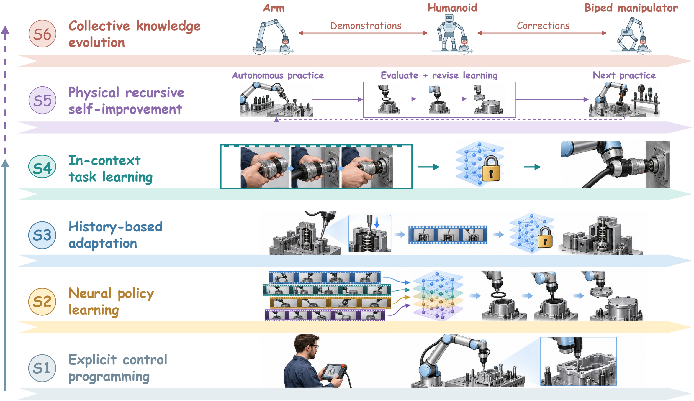
1 Introduction
A robot may know how to move yet still need evidence about what to do. Demonstrations specify a fold or assembly order; corrections revise the procedure. Interaction reveals friction or misalignment. In navigation, earlier visits reveal locations outside the current view [203]. In-context learning (ICL) for robots studies how such evidence changes deployed behavior without another task-specific update to neural parameters.
Broad pretraining supplies reusable perception and control [118–120] from multi-task and multi-embodiment collections [57, 60]. Yet the current scene can leave several procedures feasible, conceal an earlier event, or reveal little about an unfamiliar material’s response. These are information gaps that broader motor competence alone cannot resolve. Fine-tuning incorporates new evidence into weights; ICL makes it available at the decision. Cross-object transfer tests whether teaching remains useful after replacing either or both interacting objects [345]. The task relation must survive while its physical realization changes.
Two historical roots motivate a broad notion of context: one-shot imitation infers intended behavior, while meta-reinforcement learning infers tasks or dynamics from outcomes [1, 2]. Sequence models retain trajectories and learning histories [5, 6]; multimodal prompting combines task specifications and sensorimotor examples [13, 100]. With broader priors, teaching can direct generalist actions [98, 99], predicted futures [24], or executable procedures [31]. Physical experiments supply evidence for revising execution [88, 89]. Language participates throughout as instructions, examples, corrections, and retained summaries. Figure 1 situates these capabilities within complementary horizons of adaptation and longer-term learning.
Training establishes how a model uses context, as language-model studies illustrate [111, 121]. Robot learning must also determine what to teach and what to retain. RoboCoach directs supervision toward predicted skill failures [442]; RoboRSI turns diagnosed execution failures into reusable skill revisions [347]. Retained corrections can then inform later attempts [47, 49]. These mechanisms motivate active coaching that makes teaching informative and physical recursive self-improvement that improves subsequent learning. Their long-term value is transfer to new tasks.
Existing surveys organize learning from demonstration by teaching interfaces and learned policies, rewards, or plans [122, 123]. ICL and in-context RL reviews examine example- and interaction-based adaptation [124, 125], including environmental change [127]. Robotics reviews cover information transfer from human video [126], context and transfer in manipulation [371], VLA architectures [372], data and evaluation [129], embodiment [130], predictive control [128, 178], and executable skills [369]. At the system level, Towards Agentic Robots [548] organizes agents’ roles across Model, Data, Environment, and Harness, with detailed treatment of orchestration, memory, recovery, and skill evolution.
Our organizing question is how new evidence resolves what existing competence leaves undetermined, and how that resolution survives physical execution. This evidence-to-action perspective complements the system-level organization of agentic robotics: we trace which demonstration, history, or correction changes behavior, through which intermediate, and with what transfer limits. The four families distinguish these intermediates; correspondence, training, and memory explain how they preserve task information. Evaluation separates deployment-time context use from parameter updates and executor competence. Table C1 in Appendix C compares these perspectives, including recent world-action taxonomies [370].
Placing an object at the correct destination can still violate a required handle grasp. We therefore trace both the intended effect and prescribed order or contact through execution, developing three contributions:
- A taxonomy of context-conditioned policies, geometric demonstration transfer, world-model-based control, and skill- and agent-based execution, with shared correspondence and memory.
- An account of how training relationships establish context use and how object substitution, unfamiliar environments, and execution conditions limit transfer, separating broader motor competence from broader ability to learn through teaching.
- A synthesis of reported comparisons and evaluation controls that separates context dependence, transfer, and retained-experience benefits, motivating active coaching and transferable self-improvement.
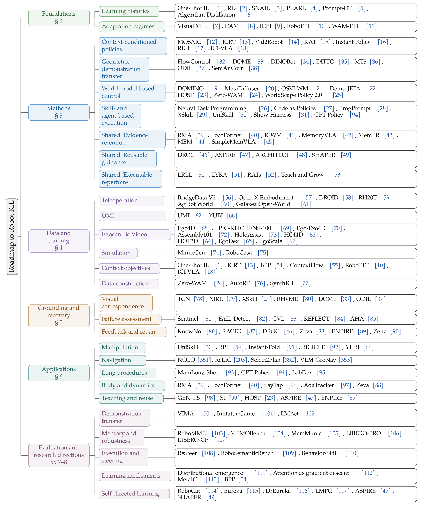
Figure 2 follows this argument: why a robot needs context (Section 2), how context changes action (Section 3), and how that dependence is learned (Section 4). Recovery and applications expose its physical limits (Sections 5–6); evaluation tests its benefit (Section 7); the research agenda asks which limits must be overcome for broader transfer and improved learning (Section 8).
2 Foundations: Why Do Robots Need Context?
A packing robot may already grasp every part yet need a demonstration to establish their order, history to identify completed placements, and contact evidence to accommodate a tighter fit. The same visible scene can therefore require different actions. Useful context resolves this decision-relevant ambiguity through actions the robot can already execute. This distinction motivates the learning horizons, adaptation regimes, and four control interfaces below. Their history traces how robots acquired broader ways to interpret and act on new evidence.
2.1 From competence to contextual adaptation
We use six learning horizons to organize the relationship between prior competence, contextual adaptation, and learning from retained experience. S3 and S4 describe complementary sources of evidence; S5 and S6 express research objectives whose realization can combine several earlier capabilities. Together, the horizons connect distinct adaptation mechanisms to individual and collective learning objectives.
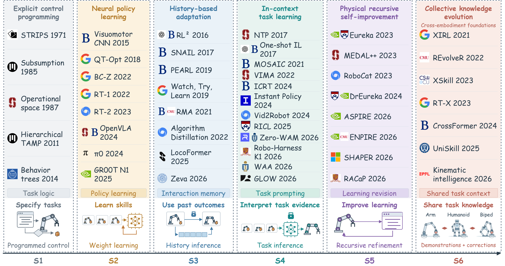
The six horizons distinguish where learning changes the system (Figure 3). Explicit control programming (S1) encodes task logic, control laws, and planning models [134–138]; neural policy learning (S2) acquires reusable behavior through imitation and reinforcement [139, 140]. History-based adaptation (S3) uses interaction memory to infer task or dynamics information. In-context task learning (S4) infers new task requirements from supplied teaching, including instructions, demonstrations, textual examples, and corrections. Both forms of ICL for robots redirect execution with deployed neural parameters fixed.
In assembly, contact outcomes can reveal a tighter fit (S3), while a demonstration or correction can specify a new part order (S4). A retained correction may guide both interpretation and execution; these roles can share a model and input modality.
Automated practice [114, 141], reward and experiment design [89, 115, 116], and retained guidance [47, 49] support a further objective: physical recursive self-improvement (S5), in which experience improves how the next task is learned. Collective knowledge evolution (S6) extends this learning cycle to a group of robots. Its premise is that an execution contains knowledge another body can use, even when the original motion cannot be copied. Shared progress and skill representations preserve what should be accomplished [29, 30, 79]; pooled policy learning supplies competence across sensing and action spaces [57, 132]; morphology-aware transfer changes the physical realization [131, 133]. These are complementary foundations for exchanging demonstrations and corrections. Whether such exchanges improve the group’s subsequent learning is the S6 research objective in Figure 1.
Active coaching chooses demonstrations, corrections, or practice for the learner’s current needs. Self-reflection diagnoses execution and turns verified lessons into reusable guidance, skills, or learning strategies. Together they connect teaching in S4 to improved subsequent learning in S5 (Figure 1). Retained context and programs can change with neural weights fixed; neural consolidation adds a separate training stage.
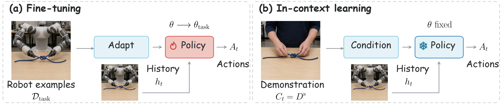
New evidence changes either policy parameters or inference-time inputs (Figure 4). Fine-tuning uses task data to update pretrained parameters to task-adapted parameters . The illustrated ICL case supplies a support demonstration as context , keeping fixed. Both use existing perception and motor competence; the storage of task information determines acquisition cost, persistence, and reset behavior.
What context enables a robot to learn. Fixed-parameter adaptation through supplied teaching or interaction is the review’s central subject. Parameter-adaptation methods provide comparisons; pretrained policies and control mechanisms supply the competence on which adaptation operates. New evidence can specify a command, identify a familiar routine, compose known relations, or teach an unfamiliar rule. These behaviors differ in the information acquired from context and the prior competence used to realize it. Section 8.1 develops these distinctions. The initial test is whether changing task-defining evidence changes behavior appropriately under matched execution conditions.
2.2 Contextual and parameter adaptation
Adaptation can reside in contextual state, a retained external artifact, or neural parameters. A common policy interface makes these alternatives comparable; their storage and reset behavior determine how an evaluation can identify the source of change. Table 1 collects the shared notation, separating supplied evidence, execution intermediates, and retained state.
Notation | Meaning |
|---|---|
, | Decision step; complete-attempt index. |
, , , | Demonstration element; memory record; skill; motion segment. |
, , | Observation; executed command; observation–action history. |
, , | Proposed action block; action at offset ; block horizon. |
, , | Support demonstration; its length; its th element. |
, , | Policy context; supplied task evidence; interpreted representation. |
, | Deployed neural parameters; initialization of the adaptation phase. |
, | Frozen backbone; adaptive parameter subset in test-time training. |
| Conditional distribution of the proposed action block. |
, | Context interpreter; demonstration motion-descriptor extractor. |
, | Action generators conditioned on context or a predicted future. |
, , | Anticipated future; context-conditioned predictor; action-conditioned dynamics. |
, , | Execution specification; deterministic or stochastic specification generator. |
, , | Deterministic, stochastic, and artifact-dependent executors. |
, , | Skill specification; number of skills; active skill index. |
, | Motion descriptor; robot kinematics and control description. |
| Update of a self-contained context from an observed action transition. |
, , | Recurrent state; external archive; retrieved records. |
, , , | Executed transition; archive record; selected indices; archive size. |
, | Retained external artifacts; proposed revision. |
, | Attempt trace with feedback; revision-acceptance indicator. |
, , | Task specification; query trajectory; support–query pair distribution. |
, , | Supervised query positions; per-target action loss; expected training loss. |
, | Success/adherence rate; gain from retained evidence at attempt . |
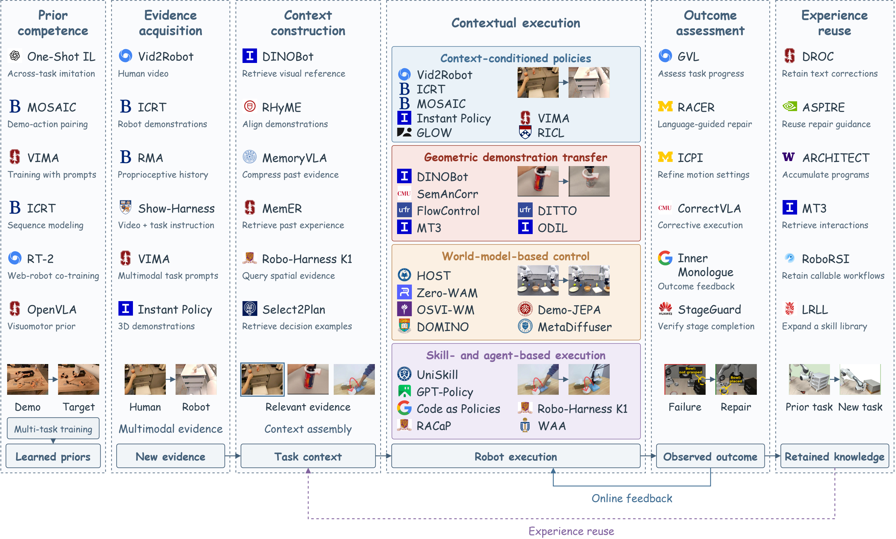
At decision step , the current attempt has history . Observation includes the available images, proprioception, force, tactile or inertial measurements, and feedback messages. Action is the applied command; its measured physical effect appears in subsequent observations. Task-relevant context may contain instructions, goal references, multimodal support demonstrations , textual input–output examples, corrections, retrieved episodes, or memory of interaction. Superscript denotes support evidence; the demonstration-only case in Figure 4 sets . Context can summarize the current history or retain information from earlier attempts. The policy proposes an action block of horizon , where is the action proposed at decision for offset . With deployed neural parameters ,
|
| (1) |
Only executed actions enter the subsequent history; new observations can replace the unexecuted part of a proposed block. When itself contains the state needed for future decisions, a memory update incorporates an action and its observed consequence:
|
| (2) |
Equation (2) updates a self-contained context state. For context retrieved or compressed from experience, Equation (17) distinguishes the stored memory from the evidence supplied to the policy.
The policy interface is compatible with several architectures. Throughout the survey, denotes the collection of deployed neural parameters, including context interpretation, action generation, and any intervening learned model. A subscript on a component means that it uses the relevant subset of this collection; different components need not share weights. During fixed-parameter adaptation,
|
| (3) |
The subscript denotes the start of the deployment adaptation phase. Observations, retrieved examples, recurrent state, or stored experience change instead. Equations (2) and (3) use one executed action per update; if several actions of are executed before replanning, their observed transitions are incorporated in order. A reward or other feedback signal can be included when available. Updating a neural component at deployment constitutes parameter adaptation, even when the rest of the system stays frozen.
Figure 5 traces a packing task. Prior competence supplies grasps and motions; teaching specifies part order; context construction binds its steps to the scene; execution produces placements; assessment checks them; and reuse retains verified corrections. The four families differ at contextual execution. The surrounding operations determine which evidence reaches it and whether its requirement is physically realized.
A corrected order changes the required actions; recorded placements identify the remaining work. Both can affect a fixed policy, but the retained information and its reset rules determine how long the change persists.
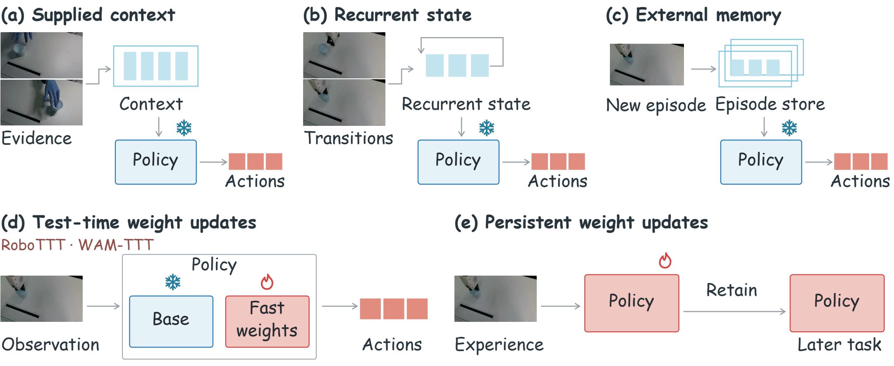
A fixed model can revise a goal, skill sequence, or program after feedback; an executor turns that specification into actions. For example, a language model can use prior errors to adjust a motion primitive’s settings [9]. Retaining the revised program lets later attempts reuse the correction without training neural weights. This stores task information in executable content, whereas fine-tuning stores it in model parameters.
The surrounding execution system, or harness, assembles context, exposes robot tools, executes requests, and returns feedback. Normally, this machinery remains fixed while the supplied evidence and generated requests change. A learning system can also revise its retrieval rules, context-construction code, or executable controller. We call this model-external adaptation: experience changes the machinery connecting a model to the robot. Identifying this revised component distinguishes changes in the execution system from changes in the neural model.
Figure 6 separates supplied evidence (a), recurrent state (b), and retrieved episodes (c) from fast-weight adaptation (d) and persistent weight updates (e). Storage and retention timescale are independent: external memory can persist without training, while test-time updates can be reset or retained. Continual learning examines acquisition and retention across changing experience [143].
These distinctions determine the evaluation controls. Removing supplied evidence tests (a); clearing recurrent state tests (b); suppressing episode retrieval tests (c). Restoring pre-adaptation weights tests the contribution of parameter updates in (d–e). Section 7 develops these interventions under matched task conditions, so gains can be attributed to the information or parameters that actually changed.
One-shot specifies the amount of teaching, not its storage mechanism. Visual meta-imitation uses one demonstration for task-specific gradient updates [7]. RoboTTT restricts updates to a neural subset during long-context execution [10]; WAM-TTT adapts video-side fast weights from target-domain human video before rollout [11]. Both follow the selective-update principle in (d), despite different update timing. Thus one demonstration can support either fixed-weight conditioning or parameter adaptation. The next taxonomy distinguishes how the resulting context reaches robot actions.
2.3 Four method families and shared design dimensions
The primary taxonomy follows the deployed path from context to action. The four families below are alternative computational interfaces, distinguished by the intermediate that execution consumes. We then separate this classification from the cross-cutting roles, modalities, and storage of evidence, before resolving boundaries between hybrid implementations.
- Context-conditioned policies infer actions from task evidence, including demonstrations, language, and interaction history as supported, through a learned generator or local action retrieval.
- Geometric demonstration transfer reconstructs a demonstrated motion or contact reference, aligns or retargets it to the current scene, and executes that reference through tracking or replay.
- World-model-based control predicts future observations, states, or transitions and uses those predictions to decode, plan, or select actions.
- Skill- and agent-based execution infers skill choices, programs, or robot-tool requests for a separate executor; VLM and LLM agents form one branch.
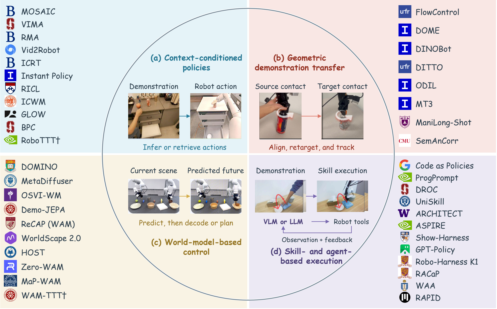
These interfaces extend the mappings, system models, and plans distinguished in learning from demonstration [122], independently of the representation, optimization, and training objective [144]. Transformers, diffusion models, and VLMs can each implement several interfaces; hybrids can combine predicted futures with skills or programs with reference tracking.
Four information roles explain what this context contributes. Task specification identifies the intended goal, relation, or procedure. Correspondence relates demonstrated objects, contacts, phases, or commands to their executable counterparts. Physical response describes how the current body and environment respond to action. Execution state records the scene, relevant hidden events, and completed prerequisites. A demonstration can specify a procedure and its contact geometry; an interaction can update both physical response and execution state. These roles guide evidence selection within every method family.
Language, images, and sensor records can carry the same information roles. Modality describes the encoding; the learning mechanism explains how its information changes a decision. Numerical states serialized as text retain their physical meaning.
Acquisition describes collection through teleoperation, UMI, egocentric video, or simulation (Section 4.1); sensorimotor channels describe recorded contents. Language can accompany any source. Collection choices and neural update rules remain independent of the control family and application demand.
The same demonstration can condition actions, define a motion reference, constrain a future, or specify a skill request (Figure 7). The intermediate required by execution distinguishes the families; acquisition, retrieval, and storage can support several interfaces.
Storage adds another independent choice. A context window, recurrent state , or external archive can supply the same task information with different access costs and persistence. Static API documentation establishes the command interface; task-specific examples and interaction supply changing evidence. For later comparisons with test-time training, write : is the frozen backbone and the adaptive neural subset. This follows the update-regime distinction in Section 2.2.
The boundary between policy conditioning and geometric transfer is the object being executed. Matching points to condition a diffusion policy remains context-conditioned policy inference; transferring a recorded object-relative trajectory and tracking it is geometric demonstration transfer. Similarly, estimating current dynamics for an action policy differs from predicting future consequences for control. RMA and the physical-context inference in ICWM illustrate the former [39, 41]; DOMINO and Zero-WAM illustrate the latter [19, 24]. An auxiliary future-prediction head contributes to training; a deployed future predictor contributes to world-model-based control when its output guides action generation or selection.
A shared VLM can support different interfaces. Motor-action tokens implement policy inference; robot-tool selection, arguments, and returned feedback implement agent-based execution. GPT-Policy’s Astra configuration follows the latter route [94], using demonstrations and interaction to determine its calls.
Memory connects these interfaces across time. Alongside its form, function, and dynamics [145], a retained fact carries physical conditions that determine when it remains applicable to the current robot and scene. Section 3.5 examines access and update mechanisms, and Section 5 examines how execution validates or revises retained evidence.
Intent adaptation changes the desired relation; physical adaptation changes its realization under new dynamics or embodiment. Joint adaptation requires both. Navigation additionally needs spatial knowledge even when the goal and dynamics remain unchanged. Section 6 organizes applications by these information needs and their implications for long procedures and task changeover. Any of the four computational families can serve several demands.
| A. Control interfaces: how context determines actions
| ||
|---|---|---|
Method family | Intermediate | Transfer requirement |
Context-conditioned policies | Action distribution | Action inference preserves the taught distinction |
Geometric demonstration transfer | Motion or contact reference | Matched interaction remains applicable |
World-model-based control | Predicted consequences | Predicted evolution is realizable |
Skill- and agent-based execution | Execution specification | Available skills preserve task constraints |
| B. Shared mechanisms: how evidence supports those interfaces
| ||
Mechanism | Information resolved | Example |
Geometric and functional correspondence | Where to interact | Handle contact on a new object |
Semantic correspondence | Which roles and order | Cup as source; bowl as receiver |
Temporal alignment | Which demonstration phase | Current grasp phase |
Retrieval | Which experience applies | Relevant past demonstration |
Evidence retention | What remains available | Earlier observation or outcome |
External knowledge reuse | What guides later attempts | Repair guidance or reusable skill |
Table 2 connects each intermediate to its transfer assumption and shared mechanisms. A handle match can condition action inference or define a tracked motion reference. The execution interface determines which assumption must hold for the final motion.
2.4 Historical development
The historical account follows an expansion in what must be inferred from context. Task-family adaptation learned reusable responses to bounded variation; sequence interfaces made more of the preceding experience accessible; broader priors increased the behaviors that new teaching could direct. These developments overlap across the four families. The final publication census locates their recent growth within the literature reviewed here.
Task-family adaptation. Early contextual policies amortized adaptation across a task distribution: training learned how to interpret evidence so that deployment could change behavior without relearning the entire controller. In one-shot imitation, paired executions taught how one instance specifies actions in another [1]. In meta-RL, recurrent state carried adaptation across episodes [2]; probabilistic task inference separated evidence interpretation from control [4] and made task uncertainty available to action selection [333]. The resulting adaptation rule inherits the distinctions made available during training. Extending it to human demonstrations requires correspondence across bodies [8]; extending it to changed robot dynamics requires evidence about action response [39]. These extensions concern different unknowns, despite sharing rapid adaptation as their objective.
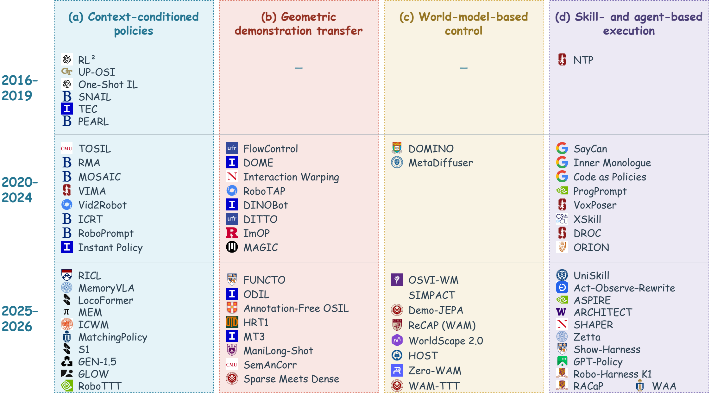
The four branches in Figure 8 respond to different obstacles in reusing experience. Context-conditioned policies learn which actions an example implies; geometric transfer identifies a relation under which a recorded interaction remains applicable. Predictive control makes consequences available before motion, while skill and program interfaces separate a new procedure from its motor realization. Their histories overlap because the obstacles coexist. Broader priors expand the available behaviors, but also make evidence selection and retention more consequential: a capable controller still needs to follow the current teaching rather than a familiar default.
Online system identification provided an explicit early version of the physical-adaptation idea: recent state–action history identified dynamics parameters for a universal policy [146]. Later methods could learn a latent instead of naming every parameter, but the central problem remained inferring how the present body would respond. The demonstration and interaction strands were already connected by Watch–Try–Learn: one policy attempted a demonstrated task and another used the resulting feedback [147]. A demonstration narrows the task hypothesis, while interaction can resolve information it omits.
Reusable sequence interfaces. A sequence interface addresses a tension between compressing experience and revisiting a decisive event. SNAIL combined temporal convolutions, which aggregate the preceding sequence, with attention, which retrieves relevant earlier information [3]. This made adaptation depend on both accumulated state and selective access. Transformers provide query-dependent access through attention [231]. Retaining more history increases the available evidence; attention and downstream computation determine which evidence informs the current decision.
Broader teaching made a fixed task summary less sufficient: two demonstrations can have the same goal yet differ in order, contact, or tool use. Multimodal task specifications placed goals and procedures in the input [100, 148], while trajectory models retained earlier observations and actions as evidence for later decisions [5, 6]. The benefit of a sequence interface was access to distinctions that a single task label could erase. Its cost was an alignment problem: the robot had to recover which part of that evidence mattered at its own execution stage. Temporal video correspondence and causal sensorimotor modeling addressed this pressure through learned representations [13, 14]; spatial representations imposed geometric correspondence before action prediction [16]. These complementary approaches preserve temporal evidence and geometric correspondence at different stages of action generation.
Adaptation over broad priors. Broad pretraining changes what adaptation must accomplish. When perception and a useful range of motion are already available, a new example can specialize an action model [17] or constrain an anticipated robot-domain future [24], rather than supply every ingredient of a new skill. Interaction histories similarly let reusable controllers account for a deployed body’s response [40, 88]. Broader pretraining therefore expands the behaviors available to teaching, but also strengthens familiar continuations that may conflict with a new example. Evaluation must establish whether the example can redirect this competence.
Geometric reuse and learned contextual inference allocate generalization differently. Visual nearest-neighbor methods rely on a representation in which nearby observations admit compatible actions [149]. Explicit alignment instead restores the conditions under which a recorded robot motion or human-demonstrated object trajectory remains usable [34, 35]. When those conditions are insufficient, a video can initialize further interaction learning, as in WHIRL [150]. The same one-example interface can therefore support replay, transformed reference execution, or new policy learning. What distinguishes these routes is the assumption that makes the demonstrated behavior executable in the new setting.
World-model-based control exposes the consequences of behavior before executing it. Contextual dynamics models first made recent transitions useful for evaluating candidate action sequences [19, 20]. Demonstration-conditioned models then added a second role for context: specifying which future should be realized [21, 24]. This development joins physical prediction with task interpretation. The controller must preserve the procedure inferred from the example while predicting how it can unfold in the robot’s current scene.
Task structure offers a different way to reuse competence: preserve the procedure while delegating its physical realization. Demonstration-derived hierarchies express a new task through existing routines [26]. Language-model programming expands the procedure to include perception calls, arithmetic, and feedback logic [27]; video-derived outlines let visual teaching specify that procedure for an existing planner and executor [31]. The gain is compositional reuse of capabilities. Its condition is that the intermediate preserve the task’s binding details, because the executor cannot recover a contact or ordering requirement that was omitted during interpretation. Section 3 develops this trade-off across the four interfaces.
These developments connect teaching, interaction, and procedural reuse. General-Level distinguishes breadth from synergy in multimodal generalists [151]; for robots, the corresponding learning question is whether combining these capabilities improves subsequent acquisition. LMPC studies responsiveness to later teaching [117], while reward and learning-program search change how new skills are acquired [89, 115]. Section 8.5 develops this question for individual and shared learning.
Review scope and source selection. This review uses a mechanism-oriented narrative synthesis with targeted updates through 22 October 2026. Searches and citation chaining span visual imitation, contextual meta-RL, navigation from video and experience, system identification, example-conditioned programming, interaction memory, and robot foundation models. Sources include arXiv, official proceedings and journal articles, and author or organization releases. Technical claims are traced to these primary sources; release reports are identified as such where their evidence differs from a research paper.
Included works explain a route from new evidence to behavior or supply relevant data, evaluation, training, or theory. Fixed-weight contextual methods are central; parameter adaptation and prior competence provide comparisons. Versions share one entry, preferably the official publication; separately cited papers and dataset releases remain distinct. Hybrid families follow the analyzed deployment branch, independently of modality, storage, and parameter updates.
The reference inventory in Appendix A records this coding and the first public year, using arXiv v1 or an official release. Supplement S1 provides the item-level records and counting rules. The resulting counts describe the composition and publication history of this reviewed corpus.
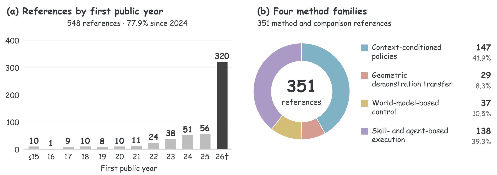
The 548 references include 427 first released since 2024 and 320 in the partial 2026 window. The concentration coincides with the recent expansion of generalist policies, multimodal teaching, and embodied agents. Figure 9 separates this complete reference set from the 351 method and comparison references; the latter includes supporting control mechanisms and parameter-adaptation comparisons.
Within the method subset, 147 references concern context-conditioned policies, 29 geometric transfer, 37 world-model-based control, and 138 skill- and agent-based execution. Branch-specific coding places ReCAP's Cosmos Policy branch under predictive world-action modeling [152], ENPIRE under program revision [89], and GPT-Policy under contextual tool use [94].
The recent concentration of publications and the distribution across control interfaces in Figure 9 motivate a closer comparison of how methods use context. The following chapter examines their execution intermediates and the assumptions that support transfer.
Takeaways
• Context resolves what the current observation and prior competence leave undetermined: the required task, relevant history, or physical response. Its value depends on whether that information changes a physically executable decision.
• Demonstration following and physical adaptation have distinct historical roots. Their convergence joins inference of a new task with inference of an unfamiliar body’s response.
3 Methods: How Does Context Change Action?
Context reaches action through an action distribution, motion reference, predicted consequence, or skill/tool specification. Each interface must preserve task-relevant distinctions until they change execution. We compare their representations, executor capabilities, and validity conditions (Table 2). Correspondence binds evidence, memory retains it, and external revision carries verified lessons into later attempts.
The factorizations use , , , and fixed parameters from Section 2, exposing the intermediate consumed by stochastic or deterministic execution. Table 1 collects the notation; additional symbols are defined locally.
A shared primitive vocabulary. Tables 3, 4, and 5 use one primitive taxonomy. Source codes demonstrations or examples (D), retained history (H), instructions or goals (I), explicit feedback (F), and scene or map evidence (E). Form codes visual observations or features (V), state/action records (S), geometry (G), and linguistic or symbolic records (L). Context operation separates nine operations: Retrieve selects stored records; Attend makes a query-dependent neural read; Align establishes spatial or temporal correspondence; Encode builds a learned representation; Estimate infers hidden physical response; Parse constructs symbolic bindings or procedures; Verify checks candidates against feedback or constraints; Simulate propagates candidate actions through a scene model; and Fit solves query-specific coefficients or geometry with network weights fixed. The tables code deployment evidence and its principal operations. Examples may be newly supplied or retained from training; the accompanying discussion specifies their role. Commas list evidence types; slashes combine operations or carriers without specifying their order.
The resulting carrier is an action output, motion reference, predicted future, learned skill, program/procedure, or tool/controller call. A carrier identifies what passes between components; the family identifies its role in the complete control path. Execute then distinguishes six operations: Replay returns recorded controls; Combine blends retrieved action continuations; Decode generates actions with a learned model; Track follows an explicit reference; Plan searches for an executable realization; and Invoke runs a program or calls a tool.
Evidence and execution roles. Language contributes according to the information it carries, independently of the control interface. In direct action inference, numerical states and action examples can be serialized for a language model, as in RoboPrompt [153]; ICRT learns its sensorimotor interface without linguistic data [13]. For a geometric archive, language can narrow the intended task before geometric matching resolves the motion, as in MT3 [36]. Command–program examples instead teach an executable mapping [27], while textual event memory preserves information missing from recent visual history [44]. These uses resolve task selection, action interpretation, and retention at different stages. The relevant comparison is what the text contributes to the decision, including whether it supplies a goal, a new convention, or a remembered outcome.
The separation between information and execution also applies to geometry. Matching can condition a learned action generator or supply a retargeted reference to a separate motion executor. Table B1 in Appendix B (p. 299) compares these roles. Geometry can instead supervise further learning: using hand–object motion to guide residual reinforcement learning trains a new policy [188]. The role of geometry becomes clear by identifying what it changes: a policy input, an executable reference, or the policy parameters.
Semantic abstraction preserves roles, prerequisites, and skill order while allowing grasps or paths to change [31, 165]. Execution must receive each binding constraint: plate-first teaching specifies order; a handle grasp additionally restricts contact. A generic command can erase either constraint; the analysis therefore follows how teaching reaches execution.
3.1 Context-conditioned policies
Context-conditioned policies map task evidence and robot history to actions. They either reuse recorded actions selected by correspondence or generate actions from an interpreted context representation. We compare these two forms before examining three complementary demands on the representation: execution phase, spatial correspondence, and physical response. The final comparison considers how pretrained competence affects the evidence each form needs.
For a context-conditioned policy, write for the representation of the evidence used at the current decision:
|
| (4) |
Here interprets context and generates actions from its representation ; both may belong to one network. The factorization requires to retain the context information used by action generation. Autoregressive, diffusion, and flow-based generators can implement this interface. If an example teaches red-then-blue packing, the representation must preserve that order while the generator adapts the reach-and-place motion to the current scene.
Reusing actions through correspondence. Let the nonempty set index the demonstration records selected for the current query, and let be the action block stored in record . A nonparametric action-reuse policy has the form
|
| (5) |
The query-dependent weights mix point masses at stored blocks. Nearest-neighbor replay gives one record weight one. Returning their mean, , instead combines continuous controls deterministically, requiring compatible coordinates and separate treatment of discrete commands. All blocks must match the receiving robot’s interface. A learned generator in Equation (4) transforms retrieved evidence; replay directly returns its recorded actions.
Action reuse assumes that proximity in a representation implies compatible control. The workflow encodes the current scene, retrieves comparable demonstration states, and returns their recorded actions [149]. Its generalization rests on representation quality and archive coverage. A retrieved demonstration can instead condition a learned generator [17], which must infer how the example applies rather than return its action directly. This introduces a second source of generalization: transforming available experience beyond local replay.
Archive coverage and interpretation can fail separately. Under unseen MuJoCo embodiments, REGENT’s Retrieve-and-Play exceeds its frozen contextual transformer, while fine-tuning improves the learned agent [154]. A RICL retrieval study further distinguishes similarity from closed-loop utility [481]: on 25 tasks selected for prior RICL success, visual and VLA-based retrieval outperform random context, but their mutual differences are not statistically resolved. A useful retrieval metric must select evidence that remains actionable along the policy’s own rollout, beyond matching expert-trajectory states.
Local continuation bridges replay and learned generation. Behavior Predictive Control (BPC) reconstructs the live observation–action history from retrieved trajectory windows, then applies the same coefficients to their action continuations [389]. Unlike the nonnegative mixture in Equation (5), its regularized coefficients may be signed, permitting local extrapolation. The retrieval metric and residual correction are fitted offline; deployment solves the continuation coefficients from the current history while keeping those fitted components fixed. Reliable continuation depends on whether nearby records jointly explain the query with stable coefficients, connecting retrieval quality to local control compatibility.
The use of correspondence determines which component carries motion generalization. A retargeted human motion can serve as a proposal that a pretrained diffusion policy refines, as in DemoDiffusion [155]. The learned prior then contributes to the final motion. Alternatively, registration can directly transfer the next demonstrated end-effector pose, as in IMOP [156]. In that case, geometric applicability carries more of the transfer burden. Section 3.2 develops this second interface, where the matched evidence becomes an explicit reference for execution.
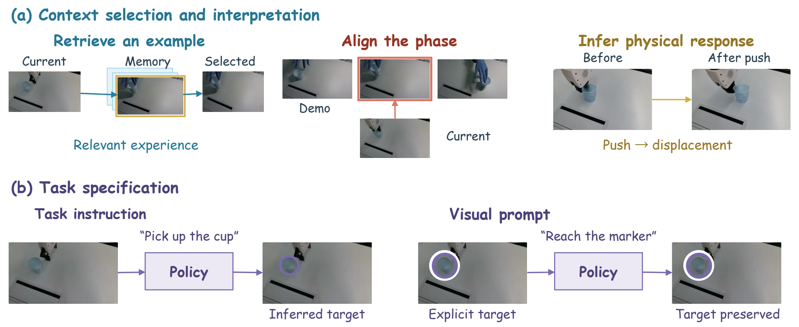
Figure 10a separates relevance, execution phase, and physical response. Panel b adds task specification: language identifies an operation and visual prompts bind its spatial target. These operations construct the evidence that enters the four control interfaces in Figure 12.
From task identity to execution correspondence. When retrieved actions do not transfer directly, the learner must interpret what the example specifies. Early demonstration-conditioned policies compressed examples into a task representation. Task-Embedded Control Networks jointly learned a demonstration metric and an embedding-conditioned policy [157]. Such a summary makes few-shot conditioning economical, but the policy must recover the relevant execution phase from its current observation. As variation extends from task identity to ordering, viewpoint, and object placement, identifying the task is no longer enough: the robot must relate what it sees now to a particular part of the example.
Table 3 traces context operations into action rules. Retrieval can return actions or condition a generator; alignment can condition inference or construct a tracked reference.
Method | Source | Form | Context operation | Carrier | Execute |
|---|---|---|---|---|---|
VINN [149] | D | V,S | Retrieve | Actions | Replay |
BPC [389] | D | V,S | Retrieve / Fit | Actions | Combine |
RICL [17] | D | V,S | Retrieve / Encode | Actions | Decode |
TraceFlow [390] | H,F | V,S | Retrieve / Align | Actions | Decode |
| D | V | Attend | Actions | Decode |
|
MOSAIC [12] | D | V | Attend | Actions | Decode |
RoboPrompt [153] | D | G,S | Parse | Actions | Decode |
BiCICLe [92] | D | S | Parse | Actions | Decode |
Vid2Robot [14] | D | V | Attend | Actions | Decode |
ICRT [13] | D | V,S | Attend | Actions | Decode |
KAT [15] | D | G,S | Encode | Actions | Decode |
Instant Policy [16] | D | G,S | Encode | Actions | Decode |
MatchingPolicy [161] | D | G,S | Align / Encode | Actions | Decode |
StellaVLA [163] | D | L | Encode | Actions | Decode |
SynthICL [77] | D | V | Encode | Actions | Decode |
BPP [54] | D | S | Encode | Actions | Decode |
RMA [39] | H | S | Estimate | Actions | Decode |
Self-Adaptive VLA [391] | H | V,S | Estimate | Actions | Decode |
GEN-1.5 [98] | D | S | – | Actions | Decode |
S1 [99] | D | V | – | Actions | Decode |
GLOW [387] | D | V | Encode | Actions | Decode |
An attention-based interpreter implements a query-dependent read over demonstration elements. Let be a support demonstration with elements. Its th element may contain an image or a synchronized observation–action record; is a summation index over the same elements. One representative alignment is
|
| (6) |
The score matches the robot history to an encoded demonstration element . Normalized weights select evidence relevant at decision , allowing the read to change with execution progress. This inference-time read supports image-only and action-bearing demonstrations alike; its training objective is a separate choice considered in Section 4.2. Richer attention or geometric representations can preserve several relationships without imposing a monotone frame match.
Execution-dependent attention addresses the loss of phase information in a single task summary: each action can consult the relevant spatial and temporal evidence [158]. Cross-domain contrastive supervision makes that read more reliable when demonstration and query differ visually [12]. Video cross-attention and causal sensorimotor sequences expose different evidence to the read, respectively visual progression and observations with recorded actions [13, 14]. Execution mismatch creates a further problem when frame similarity is misleading. RHyME constructs semantically compatible training videos through clip retrieval and composition, then uses learned alignment to condition its policy [80]. These designs address complementary parts of correspondence: when to read, what to compare, and how training makes the comparison meaningful.
Representation determines which taught distinctions action generation can recover. RGB leaves motion implicit; sensorimotor records expose actions, and keypoints or spatial graphs establish correspondence [15, 16]. Cross-domain latents couple human and robot movement, while hierarchical tokens separate persistent demonstration structure from finer decisions [159, 160]. Flow matching generates actions from encoded observations and commands [55]. TP-Flow uses support-demonstration prototypes to condition both its initial prior and velocity field [384]; deployment recomputes them with fixed weights. Richer generation helps only when its context preserves the required distinction.
Temporal selection addresses a different limit from action encoding. A complete trajectory may contain many locally irrelevant stages, so ICI-VLA retrieves phase-aligned micro-demonstrations using a retriever trained with dynamic-time-warping supervision [18]. The deployed policy reads examples selected from observable query inputs; target-action masking during training reduces reliance on exact action-prefix continuation. Phase selection determines which evidence reaches the generator, whereas token prediction or flow matching determines how that evidence becomes an action block.
Spatial correspondence as conditioning. Temporal phase identifies when an example applies; spatial correspondence identifies where its action should be realized. MatchingPolicy makes this second requirement explicit [161]. Foundation-model features establish demonstration–query point matches; tracking propagates them through time; RGB-D lifts them into 3D. A graph diffusion policy then generates gripper motion from these relationships. This workflow assumes that matched task geometry remains informative about the required action, without fixing a trajectory for the robot to replay. Section 3.2 considers the complementary case in which correspondence transforms an explicit executable reference.
Navigation extends this correspondence from object interactions to places. A policy can read successive visual subgoals [354] or attend to an action-bearing path memory [355] to follow new teaching. A scene preview supplies a different spatial reference: NOLO [350] combines a video with optical-flow-derived action labels, the current view, and a goal image to predict actions. Its offline reinforcement learning trains the interpreter; deployment reads a new scene video with weights fixed. The shared computational interface is contextual action inference, while the context can specify a route or reveal an environment.
Identifying physical context from interaction. Temporal and spatial correspondence can identify a desired motion while leaving its physical effect uncertain. Interaction history supplies the complementary evidence when the goal is known but the current body’s response is not. System identification makes this unknown explicit through physical parameters, whereas a learned adaptation latent can retain the response information needed by a policy [39, 146]. ICWM extends physical-context inference to changes in observation and embodiment [41]. These approaches require transitions that reveal how commands affect the present system; a task demonstration alone may leave that uncertainty unresolved. Their representation conditions an action policy directly. Predicting and evaluating candidate futures introduces the additional computational stage considered in Section 3.3.
Physical context must distinguish causes requiring different corrections. Self-Adaptive VLA uses command–response discrepancies for actuation bias, whereas joint-encoder offsets need visual evidence because reported and commanded poses can agree despite a physical error [391]. CAPABLE combines joint-wise command–response histories with the current Jacobian to condition a residual policy [492]. Its encoder and policy are trained offline, then fixed for held-out actuator and fault tests. History identifies bodily capability, rather than a new task.
Connecting pretrained competence to new evidence. Broader robot and language priors change what must be learned for demonstration following. An existing action generator can be conditioned on retrieved executions [17]; grounded spatial descriptions can supply scene information missing from the current visual input [162]. These inputs resolve different unknowns. A demonstration may change the requested procedure, while a scene description may clarify how to execute an already known procedure. The contribution of each channel depends on the decision its information resolves.
Observation-only teaching leaves action correspondence implicit. Behavioral Cloning from Observation estimates actions through inverse dynamics before training a policy [167]. Fixed-weight teaching uses an existing action interface learned from demonstrations or constructed through pretrained reasoning and geometry.
Textual action interfaces move part of action inference outside a visuomotor backbone. RoboPrompt supplies object poses and keyframe end-effector examples to a frozen language model [153]. BiCICLe conditions one arm’s keyposes on the other’s prediction, preserving coordination within a smaller inference problem [92]. Its v3 TWIN comparison uses ten demonstrations per task and reports 70.5% mean success over 13 simulated tasks, versus 64.4% for the strongest ICL comparator. Ground-truth segmentation supplies simulated object centroids; three physical tasks provide a separate execution test. These interfaces rely on perception and coordinate conventions that make reasoning outputs physically meaningful.
Teaching budget can change the preferred adaptation mechanism. KAT compares a text-pretrained model reading keypoint–action examples with KeyAct-DP, a diffusion policy trained on similar representations [15]. Contextual inference is competitive with few examples; policy training becomes stronger with more. The crossover differs against an image-based diffusion policy, indicating that both representation and adaptation mechanism determine the useful demonstration budget.
Generalist systems expose different teaching representations. BPP and GEN-1.5 accept sensorimotor prompts [54, 98]; S1 accepts video prompts [99]. The GLOW technical report [387] describes a Skill Demo Encoder that converts one human video into reusable skill context. A fixed-weight autoregressive model combines it with current observations, language, robot state, and history to generate end-effector actions. Its teaching pathway belongs to context-conditioned policies (Figures 5 and 7); Harness manages tools and feedback, while KnowinWorld supplies candidate rollouts. The primary family follows the teaching-to-action pathway, with prediction and tool management providing complementary support.
Retrieved actions need compatible coordinates and archive coverage; learned generation additionally depends on the interpreter transferring the taught distinction, as REGENT illustrates [154]. Geometric transfer exposes this dependency through an explicit reference that execution tracks.
3.2 Geometric demonstration transfer
Geometric demonstration transfer preserves a motion or contact reference and adapts its realization to the query scene. Perception establishes correspondence; alignment or retargeting transforms the reference; tracking or replay executes it. This explicit reference is useful when contact geometry matters, such as preserving a handle grasp. We follow the mechanism from reference construction through spatial alignment and shape changes to reuse across a task repertoire.
IMOP makes the reference local to the next demonstrated action: learned invariant-region correspondences support analytic pose transfer, and a state router selects the relevant demonstration transition [156]. The reference can therefore be a target pose rather than a complete trajectory.
Reconstructing an executable reference. Let denote the supplied demonstration. A geometric transfer computation can be written as
|
| (7) |
The extractor produces descriptors of demonstrated hand poses, object-relative poses, or contacts. maps them to scene and robot kinematics/control constraints ; executor consumes the resulting motion reference . Object-centric and hand-based transfer preserve different descriptors: object motion versus grasp and hand motion [35, 168]. Fitting these poses or trajectories can leave the extractor’s neural weights fixed; superscript denotes the motion interface.
For rigid object-relative transfer, this relationship has a particularly simple form:
|
| (8) |
Here is frame ’s rigid pose in world ; is the end effector and the reference object for segment . Superscripts denote source and query; is segment progress, and denotes inversion. The source factors express object-relative motion; the query factor relocates it. A fixed reference and applicable relative motion are assumed. Shape change, moving references, or embodiment differences require Equation (7)’s richer correspondence, making reference selection part of task interpretation.
Table 4 traces four ways to preserve an interaction: align its visual reference, transform object-relative motion, match functional parts, or switch references across stages. A richer correspondence is useful when it preserves a constraint that a global pose transform would lose.
Method | Source | Form | Context operation | Carrier | Execute |
|---|---|---|---|---|---|
FlowControl [32] | D | V,G | Align | Motion | Track |
DOME [33] | D | V,S | Align | Motion | Track / Replay |
DINOBot [34] | D | V,S | Retrieve / Align | Motion | Track / Replay |
RAGrasp [472] | D | V,G | Retrieve / Align | Pose | Plan |
MT3 [36] | D | G,S | Retrieve / Align | Motion | Track / Replay |
Pose-based OSIL [170] | D | G,S | Align | Motion | Track |
IMOP [156] | D | G,S | Align | Motion | Track |
DITTO [35] | D | V,G | Align | Motion | Plan / Track |
HRT1 [168] | D | G | Align / Fit | Motion | Track |
CosmoH2G [503] | D | V,G | Encode / Fit | Motion | Replay |
| D | G | Align / Fit | Pose | Plan |
|
IGA [420] | D | G | Align | Pose | Plan |
R-NDF [345] | D | G | Align / Fit | Motion | Track |
Interaction Warping [171] | D | G | Align / Fit | Motion | Track |
Part decomposition [346] | D | G | Align | Motion | Track |
SemAnCorr [38] | D | G | Align | Motion | Plan / Track |
ODIL [37] | D | V,S | Align | Motion | Track / Replay |
ManiLong-Shot [93] | D | G,S | Align | Motion | Track |
Annotation-free OSIL [177] | D | V,S | Align | Motion | Track / Replay |
From image alignment to object-relative transfer. Geometric reuse begins with an applicability assumption: restoring the relevant relative configuration makes the demonstrated interaction useful again. Image-based approaches enforce this through visual feedback. FlowControl aligns live RGB-D observations to successive masked reference frames [32]; DOME separates a learned visual servo to a bottleneck pose from subsequent velocity replay [33]. The difference is where feedback acts: throughout reference following or primarily before the interaction segment. Tracking active points and gripper events allows RoboTAP to change the visual reference as a task advances [169]. POIL closes the loop on the transferred object points themselves: functional-part correspondences establish a reference, and point-set feedback converts tracking errors into a rigid-body twist [403]. Using the same points for transfer and execution ties disturbance recovery to the demonstrated interaction.
An object-relative invariant makes applicability more explicit than image agreement. Pose-based transfer preserves a recorded end-effector trajectory [170]; category-level shape fitting extends correspondence to interaction keypoints [171]. DITTO reconstructs manipulated-object motion from an RGB-D human demonstration, transfers that trajectory to the detected objects in the robot scene, and realizes it through grasping and motion planning [35]. Hand-based retargeting instead reconstructs the demonstrator’s grasp and movement before converting them into robot configurations [168]. The embodiment gap thus appears in different places: realizing an object effect in DITTO, or translating a demonstrated hand configuration. In either case, successful transfer requires both a preserved interaction and a feasible realization.
Semantic anchors and functional geometry. Rigid pose transfer preserves a motion only when the source and target support the same local interaction. A different handle or articulated part requires correspondence within the object. SemAnCorr [38] selects semantically consistent surface anchors and propagates them through a functional map. Its manipulation pipeline transfers contact regions and local frames, selects a feasible grasp, and reuses motion relative to that grasp. Contact keyframes and relative motions form its execution specification. Semantic correspondence supplies the local geometry needed to extend the rigid transfer in Equation (8) across object shapes. Descriptor-based transfer makes the matched invariant explicit: NDF optimizes poses to reproduce demonstrated descriptors, L-NDF localizes the representation to transferable geometry, and IGA aligns object graphs conditioned on examples [420–422]. The optimized object is an alignment or pose, not the descriptor network's weights. A template library makes this correspondence explicit at retrieval time. RAGrasp combines semantic features with geometric filtering, then registers a selected RGB-D grasp template to the query and refines its contact pose [472]. Reuse avoids task-policy fitting but depends on calibrated depth and a transferable local grasp; physical tests cover calibrated planar overhead grasping.
Shape variation makes whole-object similarity too restrictive for some interactions. What must remain compatible may be a grasp role and a contact role, rather than the complete tool geometry [172]. A complementary approach starts from global shape and refines local curvature correspondences to preserve the contact used by a motion [173]. Surface interaction functions and screw interpolation connect such functional geometry to a transferred trajectory [174]. These routes differ in how they identify the invariant, but share a control assumption: preserving the relevant interaction structure makes the adapted motion useful. This shifts the transfer problem from matching objects as wholes to matching the parts of their geometry that the task actually uses.
When both objects change, correspondence must preserve their interaction. R-NDF aligns task-relevant local frames on a new object pair [345]; part decomposition separates local geometry from object arrangement to recover the demonstrated relationship [346]. Both reduce interference from irrelevant shape variation, extending transfer beyond relocating motion around one object (Section 3.5).
Deformable manipulation requires correspondence to remain meaningful as the object changes shape. Sparse Meets Dense extracts task-relevant contact pairs from a demonstration and uses an offline learned dense representation to track them during constrained execution [175]. Its final-state relative-pose annotation supplies interaction geometry; sparse constraints express the task, and dense correspondence maintains that geometry through deformation. This extends the reference from a rigid frame to a changing set of contact relations.
Affordance prediction can supply a related execution interface from a learned prior. VLAff predicts interaction heatmaps, grasp poses, and motion trajectories from an observation and language instruction [176]. Its human videos provide offline affordance supervision. These outputs can ground a contextual planner’s specification, while a demonstration-conditioned system additionally uses the newly supplied example to determine which interaction should transfer.
Cross-embodiment geometry can be learned before a new demonstration is supplied. CosmoH2G learns hand-to-gripper transfer from paired recordings, predicts endpoint poses and orientations, and refines the resulting trajectory through contact alignment, smoothness, and inverse kinematics [503]. Deployment optimizes a motion reference while keeping the learned mapping fixed. Its open-loop execution tests transfer of demonstrated geometry; correcting deviations would additionally require observation-driven control.
From one demonstration to a reusable repertoire. A geometric repertoire must select an applicable interaction and restore its starting configuration. DINOBot combines retrieval with wrist-view alignment before replay [34]. MT3 adds language filtering, geometric retrieval, and pose alignment [36]; its retrieval-versus-cloning comparison separates alignment from interaction. Its 1,000 single-interaction tasks require less than 24 hours of human demonstration; multi-stage tasks use one demonstration per stage. Adding references avoids task-policy retraining, while execution still depends on restoring each interaction’s preconditions.
Independent object motion and arm coordination expose the limit of one global alignment. A grasp and a later insertion must refer to different objects when the part and receptacle move independently; dual-arm interaction must additionally preserve relative coordination. Multi-stage visual servoing establishes a coordinated reference before ODIL’s replay [37]. Interaction segmentation with invariant-region matching, and VLM-based keyframe selection with repeated alignment, extend the reference-switching principle to longer demonstrations [93, 177]. Table 4 compares how individual systems bind and execute these references, while Table B1 in Appendix B contrasts the computational roles of correspondence. The key decision is when a change of interaction requires a different reference.
Geometric transfer exposes whether a matched interaction remains applicable after alignment. Correspondence and reference switching address shape variation and independent object motion; feasible tracking addresses physical realization. Predictive control instead represents the consequences execution should produce.
3.3 World-model-based control
World-model-based control predicts consequences to specify desired evolution or assess candidate actions. Learned predictors and physics simulators both support this interface when their predictions influence deployed control. The comparisons distinguish demonstration conditioning from prediction used only in training.
A representative factorization is
|
| (9) |
Here is a predicted observation or latent future. predicts it and decodes future-conditioned actions, with fixed neural parameters in the ICL regime. Superscript denotes this predictive interface. Joint video–action generation may share a backbone [178]. For packing, the future can specify red-before-blue placement; actions must realize that sequence. The law of total probability marginalizes future-conditioned actions over predicted futures:
|
| (10) |
Discrete futures replace the integral with a sum. Sampling a future and then actions, or selecting one approximate future, implements this dependence. The future’s role in control defines the interface.
Generating a desired future or evaluating an action’s future. World-model-based control has two complementary forms. In Equations (9)–(10), context specifies a desired evolution and an action decoder realizes it. In model-based selection, candidate actions specify possible evolutions, and context determines which consequence is preferred. One planning form is
|
| (11) |
The set contains admissible candidate action blocks, denotes a candidate, and is a selected maximizer. The action-conditioned dynamics distribution estimates its future ; distinguishes forward dynamics from the context-conditioned future generator . The score measures how that future satisfies the contextual task requirement. The expectation averages over predicted futures. This form makes the two roles explicit: the transition model predicts what an action may cause, whereas teaching determines which consequence is desirable. Optimizing leaves the neural parameters unchanged. For explicit simulation, the predictive distribution can be induced by and , where is physical state, a transition operator with scene parameters , and an observation renderer. Estimating instantiates the scene without updating the planner's neural weights. SIMPACT constructs this simulator from RGB-D and returns rollout images and object states to a VLM for candidate revision [423]. Thus, simulated consequences become planning context; their value depends on whether reconstructed geometry and dynamics preserve the interactions relevant to the task.
Prediction and action support constrain different parts of search. LeWAM retrieves a future goal from training demonstrations and searches a frozen policy’s noise space with fixed latent dynamics [512]. Demonstrated progression grounds the objective; policy decoding restricts candidates in Equation (11). Its small-data simulation study evaluates this use of trained capabilities.
Unknown dynamics changes which candidate trajectories are credible. One response is to infer dynamics context from recent transitions and evaluate actions with a context-conditioned world model, as in DOMINO [19]. Another is to condition trajectory generation on those transitions and use reward and dynamics guidance during sampling, as in MetaDiffuser [20]. Both specialize prediction through new evidence while leaving learned parameters fixed. Context can also specify how actions are interpreted: SyncWorld uses paired action–video calibration segments to infer the current camera- and embodiment-dependent mapping from numerical commands to visual motion [506]. Coordinate augmentation and contextual training establish this capability offline; deployment supplies the new mapping and ranks candidate actions through imagined rollouts. Thus context can identify a control convention as well as a desired outcome.
Inference and fitting change different parts of prediction. DeepJEPA recurrently refines imagined transitions using an offline-trained continuation head, with world-model weights and outer CEM settings fixed [448]. MetaPusher instead updates a pushing model and repairs its planning tree [367]; Sandwich-Residuals fits neural corrections around a frozen predictor [366]. These operations refine computation or change the predictor; contextual prediction specializes an unchanged model through new evidence.
From goal-reaching to demonstration-conditioned futures. Goal-reaching and demonstration transfer place different demands on a predictor. Universal Planning Networks optimize actions toward a supplied goal with model weights unchanged [179]; ViGAR turns a goal image into subgoals for joint video–action execution [460]. The image specifies an outcome. PEWAM instead compiles a demonstration into object-keypoint trajectories, contact points, and a terminal state, then conditions a fixed world-action model on this effect program [459]. Removing the demonstrator’s body makes the desired object evolution an editable interface. Its four-task physical test reports 36/40 successes against 22/40 for goal-image conditioning after training on other real tasks. Yet terminal-state-only conditioning exceeds the full program on its small held-out LIBERO comparison (49/90 versus 40/90). Abstraction follows the taught constraint: placement may need only an endpoint, while ordered effects and contacts preserve additional requirements.
This inference can remain in a latent space. OSVI-WM decodes demonstration-conditioned latent states into waypoints [21]; Demo-JEPA supplies a predicted latent goal to a cross-entropy-method planner until an achievement threshold permits progression [22]. Prediction supplies a separate executor’s target. ModAR tests the predicted representation itself: sequential point-track, feature, and depth prediction supports action generation, while adding RGB offers no consistent gain [531]. Human video supplies training data, and deployment conditions on observations and a task label. This comparison separates useful predictive content from learning a procedure through a new example. In Demo-JEPA’s real-robot comparison, an action head performs better on familiar behaviors and planning on unseen tasks; the familiar-task advantage disappears in simulation. The value of search versus decoding therefore depends on task novelty and execution setting, even with a shared future representation.
Prediction can also supply a route or a discrete transition model. TADreamer reconstructs navigation waypoints from generated video and registers them to measured geometry before planning [334]; metric calibration connects imagined motion to feasible execution. GAVEL instead rolls plans through an explicit graph of action preconditions, effects, and location beliefs, repairing model-detectable violations before invoking semantic replanning [335]. GAVEL primarily tests modeled action consistency through a symbolic BEHAVIOR-1K executor; TADreamer connects imagined motion to metric execution. Prediction can therefore support different levels of action verification.
Human-video world-action systems connect demonstrated procedure to robot-domain evolution. Progress selects the relevant segment [23]; an example must also change the predicted future when alternatives remain feasible [24]. SimpleICL’s learned demonstration queries condition video and action diffusion; removing video conditioning or future prediction impairs held-out-task execution [517]. WATCH first pairs human demonstrations of the same task across scenes, then post-trains on robot data [536]. Reference video and actions condition joint action–future prediction, with reference-conditioned and context-free control evaluated separately. Cross-human pairing teaches transferable interactions; downstream improvement in both branches means pretraining gains alone do not establish deployment-time example dependence.
Procedure and physical history have different roles. WorldScape Policy 2.0 combines persistent demonstration context, event memory, and short-term dynamics [25]. Long-WAM instead studies the robot’s own observation history: causal video pretraining supplies a history-to-future representation, and partially denoised futures condition action generation [483]. Its context-window variants are trained separately. Their gains therefore concern learned history use, rather than adding teaching to one fixed checkpoint. Stable procedure tracking requires appropriate training and timely access to physical history.
Separating planning and control also determines what becomes memory. MaP-WAM generates a language subgoal and visual plan from sparse observed histories; its executor reuses that plan until observation-to-frame matching indicates progress and triggers replanning [399]. Actual execution frames then replace imagined ones in episodic memory, keeping predictions distinct from observed events. The executor’s auxiliary future-video head can be removed, while the upstream plan remains. RMBench uses a multitask planner with task-specific executors; constant executor latency excludes planning. Memory coverage, motor transfer, and response time consequently require separate measurements.
Retrieval can constrain prediction before detailed motion is generated. The retrieval-augmented policy ReCAP supplies trajectories to a frozen residual predictor [152]; its Cosmos Policy branch jointly generates future images and actions. The retrieved motion narrows the continuation, while prediction relates it to the evolving scene. Other ReCAP backbones route retrieved evidence through different action interfaces, so the predictive classification applies to its Cosmos Policy branch.
The predictive interface also localizes transfer. OpenWAM freezes a local-context inverse-dynamics decoder while training the target-task video producer with action supervision [496]. On four held-out LIBERO-90 tasks, both counterfactual dynamics coverage and restricting the decoder’s inputs contribute to transfer. The reusable component is the action decoder, while task adaptation remains in the producer. Across pixel, latent, and action-conditioned predictors [180], the central question is which component receives the new task information and whether its output preserves an executable interaction.
Learning from futures without executing through them.
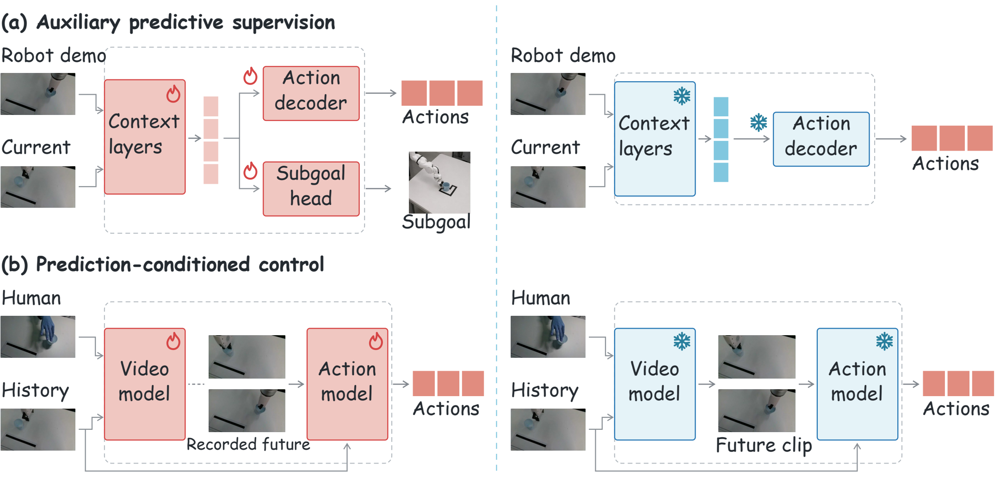
Future supervision can improve an action representation without requiring a future to be generated online. Let be an action-training loss and an auxiliary future-prediction loss. The training and deployment interfaces can then be written as
|
| (12) |
Here weights the auxiliary loss. Optimization acts on the designated trainable components, with any frozen backbone held fixed. The retained components of initialize the deployed parameters ; the auxiliary prediction head can be removed when action generation does not depend on its output. Equation (10), by comparison, retains a future-dependent action computation at deployment.
Generative training and predictive computation can be separated experimentally. NowWAM co-trains actions with current-observation denoising, then acts from clean observations without a visual rollout [516]. Its past- and future-target comparisons yield similar benefits. Under a different matched backbone and training protocol, Simple-WAM retains future-position tokens as pure noise and extracts their features in one pass, avoiding iterative video denoising [524]. Removing those tokens reduces transfer in that setting. Its held-out-task videos supply training supervision. Training targets, runtime computation, and deployment teaching therefore require separate tests.
Predictive pretraining and contextual adaptation solve different problems. ZimaBlue aligns causal video priors with robot actions through video–action mid-training and target-robot post-training, then caches slow-model futures for fast execution [499]. Physical-demonstration prompting is a proposed next step in that work. Its trained generalization establishes a prior on which contextual teaching could operate.
Training intermediates need not remain execution dependencies. Gripper traces supervise action representations even when reasoning dropout or head removal permits execution without generating them [181, 182]. PonderPounce instead retains an asynchronous cognition token within action inference [183]. DeltaWAM uses future-delta supervision but deploys an action stream that reads cached observed changes [414]. The cache reduces scene-encoding cost, while periodic refreshes restore a recent scene anchor. The runtime interface is history-conditioned action inference, not control through a generated future.
Figure 11 contrasts these roles. Auxiliary future targets shape a policy during training; prediction-conditioned control retains a generated future in action computation. Panel (a) shows the trainable context and state–context transformers after a frozen visual backbone. Panel (b) shows trainable prediction branches, not input frames. The latter couples control quality directly to the generated future.
Predictive control makes an anticipated consequence available for inspection or planning. Forecast accuracy and action decoding determine whether it reaches execution. Skill- and agent-based methods instead specify operations and delegate their realization to available skills or tools.
3.4 Skill- and agent-based execution
Skill- and agent-based execution uses context to specify the selection, order, and arguments of available skills or robot tools. A red-before-blue placement video can become an ordered procedure realized by an existing executor. We compare learned skill composition with VLM/LLM-generated programs and calls, then examine when feedback can revise the specification and when additional motor learning is needed.
The specification can take the form of code, spatial targets, or an ordered sequence of learned skills. Its defining role is to govern an execution stage that can track or advance it, as described in Section 2. At that action interface, the deterministic form is
|
| (13) |
where extracts the execution specification from context and robot history , and realizes it as the next action block using observation . For stochastic specification generation and execution, the same interface becomes
|
| (14) |
Here generates specifications and realizes them. Discrete specifications give a sum; deterministic components recover Equation (13). Operations, arguments, and composition reside in , while the executor’s neural parameters reside in . Code or argument edits can therefore change behavior with weights fixed. Programs can invoke geometric trackers, and predicted futures can supply specifications, composing the corresponding interfaces.
Skill composition and program execution instantiate this interface as
|
| (15) |
Here specifies a skill, counts skills, and selects the active one. executes program until it yields an action block, including permitted perception and control calls. A tool agent can generate one request at a time: its name and arguments form , the robot adapter implements , and returned observations inform the next decision.
Composing reusable skills. Rearranging existing motor capabilities can express a new task. Neural Task Programming (2017) instantiated a hierarchy from a demonstration, with leaves invoking robot routines [26]. Task length, ordering, and object assignments could change while physical skills were reused.
Human-video teaching adds recognition across bodies and timing. XSkill learns shared human–robot skill prototypes [29]; UniSkill learns from unaligned cross-embodiment video [30]. Both translate human examples into guidance for a robot-side skill-conditioned policy.
Waypoints preserve motion targets, object-relation graphs preserve dependencies, and staged procedures preserve interaction changes [93, 164, 165]. Their role depends on the executor: they may specify a separate controller or condition action inference internally, as semantic subtasks do in StellaVLA [163].
Skill composition requires compatible handoff states as well as a correct order. SkillWeave scores a frozen predecessor policy’s sampled chunks against start states retained from the successor’s training demonstrations [511]. Demonstrations thus constrain transitions between skills as well as teaching individual behaviors.
Handoff compatibility complements evidence for when to advance. StageGuard distills completion reasoning into a monitor that continues, advances, or skips skills [336]; Navi-Agent checks subgoals against visual-place topology [337]. RoboMonitor instead learns phase, failure, and completion estimates from instruction-conditioned visual history [413]. These monitors supply execution checks; recovery additionally depends on how the controller uses them.
Navigation separates example interpretation from motion realization. Instruction–landmark pairs in LM-Nav [358] and instruction–subtask pairs in ANav [359] guide parsers over pretrained navigators. Select2Plan retrieves visual examples to select marked movements [351]; VLM-GroNav uses terrain feedback to revise their costs [352]. Section 6.2 compares what these contexts specify.
VLM and LLM agents: programs, tools, and feedback. Demonstrations can guide program acquisition before deployment. ENCORE exposes keyframes, gripper events, and contact evidence to a fixed coding agent, then freezes the acquired program for sealed evaluation, retaining access to the supplied perception APIs [534]. Matched model, API, and development-budget comparisons with and without demonstration packs locate their contribution in strategy discovery, especially early search and underspecified tasks. Teaching changes the acquired controller; its later execution need not reread the demonstration. Code as Policies (2022) uses command–program examples to recombine perception, control, arithmetic, and feedback logic [27]. Examples also specify available objects and interfaces [28]. Video teaching must preserve the constraints these interfaces can execute. Show-Harness passes textual video outlines to an unchanged planner and embodiment-specific action interpreter [31]. In FoldingAgent, manually selected video keyframes guide a fixed VLM to reconstruct and revise parametric folding programs through simulator feedback [501]. Its Pureland study evaluates geometric reconstruction; grasping, force control, and material response lie beyond its interface.
Contact-sensitive teaching requires a richer executable abstraction. RAPID derives trajectory-optimization primitives, relational constraints, and a verification environment from a human demonstration [388]. Predicates and simulated scene variants guide program revision before transfer; reconstruction fidelity determines what interactions these checks capture. Its nonprehensile experiments use demonstrations, whereas LIBERO-Pro constructs programs without them. Both require reconstruction and program search.
The command interface determines what contextual inference must decide. GPT-Policy maps demonstrations and interaction records to Cartesian targets or gripper commands, realized through interpolation, inverse kinematics, and timed control [94]; RoboDawn grounds discrete motions through examples, with a command primer also supplied in its zero-demonstration condition [364]. Galbot's separate GPT-as-Policy study compares direct commands with reviewing and correcting learned-policy proposals [520]. Both use feedback and notes with fixed model weights; the hybrid additionally depends on controller training. AGP revises executable programs from physical outcomes and retains scripts and notes with model weights fixed [513]. RoboICL binds demonstrations and feedback through observation–action–receipt records [438]. Each interface must preserve the path from taught intent through an executable command to its observed effect.
Tool-based execution also needs embodiment context. iAm.md grounds a fixed coding agent in URDF, live ROS 2 interfaces, and deployment configuration [510]. Code and scene records change during adaptation. Interface knowledge grounds commands; physical observations establish their effects.
Tools supply the measurements and behaviors used by these programs. Robo-Harness K1 exposes calibrated depth, spatial measurements, persistent visual anchors, and grasp hypotheses to ground generic motion requests [377]. The agentic framework RACaP exposes typed Policy APIs: a ReAct agent combines working memory, retrieved experience, and visual feedback to choose calls, arguments, and recovery steps [378]. Both retain fixed neural weights during deployment; RACaP also freezes its generated source code. MOKA grounds motion through marked visual affordances, while RoCo coordinates waypoint plans through dialogue and collision feedback [424, 425]. Their prompting interfaces revise executable choices; MOKA's separate distillation branch instead trains a policy.
The memory–executor interface limits which requirements reach control. In 2AM, task memory supplies subtask language and optional 2D grasp, place, and move hints to an episodically stateless action model [401]. A grasp cue expires after acquisition, while a destination can persist during transport. Training prepares the executor for noisy or incomplete hints; memory must encode its requirements in these supported formats.
Previewing a candidate permits revision before execution. WAA renders proposed poses in interaction-centered views, checks kinematic feasibility, and converts in-view corrections into motion [386]. A separate Skill Agent supplies demonstration-derived procedures and visual checks. The main agent thus combines procedural guidance with geometric verification of its tool requests.
Feedback must update a request's supporting evidence. ETA observes after world-changing calls [348]; offline-trained EmbodiedSkills checks prerequisites and artifact freshness before execution, verifies effects afterward, and uses new observations to recover or revise plans [502]. Recovery restores operating conditions: RoboHarness retrieves entry states [349], while Causeway steers action features toward demonstration-derived re-entry poses [412]. Verification separates request defects from failures of the starting conditions.
Spatial context grounds these requests. VoxPoser builds affordance and constraint maps for planning [184]. HomeBody's digital twin grounds skill, target, and hand selection, with retries or replanning after failure [415]. Analytical manipulation and pretrained locomotion realize the chosen requests.
Applicability prediction, outcome observation, and probing supply complementary evidence. Skill-affordance estimates couple linguistic relevance to feasibility before execution [185]; observed effects revise the next step afterward [186]. When feasibility depends on unknown mass or stiffness, proprioceptive measurements can change the strategy [187]. Each operation resolves a different uncertainty about whether a skill will work.
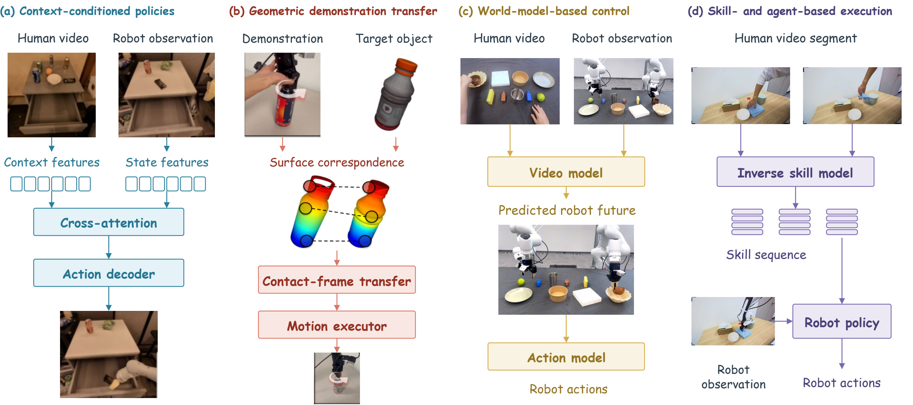
Method | Source | Form | Context operation | Carrier | Execute |
|---|---|---|---|---|---|
OSVI-WM [21] | D | V | Encode | Future | Plan |
SIMPACT [423] | I,E | V,S,G | Simulate / Verify | Future | Plan |
SyncWorld [506] | D,H | V,S | Encode | Future | Plan |
Demo-JEPA [22] | D | V | Encode | Future | Plan |
LeWAM [512] | D,H | V | Retrieve / Simulate | Future | Plan |
ViGAR [460] | I | V | Encode | Future / Actions | Decode |
PEWAM [459] | D,H | G,S | Parse / Encode | Effects / Actions | Decode |
HOST [23] | D | V | Encode | Future | Decode |
Zero-WAM [24] | D | V | Encode | Future | Decode |
SimpleICL [517] | D | V | Encode | Future / Actions | Decode |
WorldScape Policy 2.0 [25] | D,H | V,L | Encode | Future / Actions | Decode |
ReCAP (WAM) [152] | D | V,S | Retrieve / Encode | Future / Actions | Decode |
MaP-WAM [399] | H | V | Align / Encode | Future | Decode |
FARE [400] | H | V,S | Verify | Future / Actions | Decode |
FAVOR [467] | H,I,F | V,S | Verify / Parse | Future / Actions | Decode |
XSkill [29] | D | V | Encode | Skill | Decode |
| D | V | Encode | Motion | Track |
|
ORION [165] | D | V,G | Parse / Align | Program | Invoke |
UniSkill [30] | D | V | Encode | Skill | Decode |
SkillWeave [511] | D | S | Verify | Skill | Decode |
Code as Policies [27] | D,I | L | Parse | Program | Invoke |
Show-Harness [31] | D | V | Parse | Program | Invoke |
GPT-Policy [94] | D,H,I | V,S,L | Parse | Calls | Invoke |
AGP [513] | D,H,I,F | V,S,L | Parse / Verify | Program | Invoke |
Real2Gym [518] | D,H,I,F | V,S,G,L | Parse / Verify | Program | Invoke |
WAA [386] | D | V,G | Parse / Verify | Calls | Invoke |
RAPID [388] | D | V,G | Parse / Verify | Program | Invoke |
Robo-Harness K1 [377] | I,E | V,G,L | Parse / Align | Calls | Invoke |
RACaP [378] | H,I,F | L | Retrieve / Parse | Calls | Invoke |
2AM [401] | H,I | V,L | Parse | Calls | Decode |
Mimir [392] | H,I | L | Parse / Verify | Calls | Invoke |
HomeBody [415] | H,I,F,E | V,G,L | Retrieve / Parse | Calls | Invoke |
SparseNav [394] | I,E | G,L | Parse / Align | Motion | Track |
RV-ICL [465] | D,H | V,S | Retrieve / Parse | Program | Invoke |
MarvisNav [466] | H,E | V,G | Encode / Parse | Calls | Invoke |
RobotUse [470] | H,I,F,E | V,G,L | Retrieve / Parse | Calls | Invoke |
ProactiveVLA [474] | H,I,F,E | V,L | Retrieve / Parse | Calls | Invoke |
TacZero [477] | H,I,F | V,S | Parse | Pose | Track |
DROC [46] | H,F | L | Retrieve / Parse | Program | Invoke |
Feedback-driven revision can change a procedure or its executor. ICPI adjusts primitive arguments [9]; CaP-X contrasts code revision with training the coding policy [166]. ENPIRE supports both program revision and neural policy learning [89], while VoxPoser’s dynamics-learning extension updates a predictive component [184]. PP-ProPS searches controller parameters from encoded candidate–reward histories [411]: its language model stays fixed, but each proposal changes the robot-side controller. The adaptation claim therefore depends on which component changes, not whether the reasoning model is frozen.
Explicit structure trades portability against physical detail: a procedure can transfer across bodies yet omit a required grasp or compliance condition. Executors may recompute only details left open by teaching. DualManip separates update rates accordingly: geometric correspondence revises contacts, while failed geometric validation triggers semantic replanning [408].
Table 5 connects context operations to execution: a video can supply a future for planning or decoding, a tracked motion, or an invoked program. Retrieval and verification augment these routes; their carriers determine which taught constraints reach control.
Choosing an interface by the constraint it preserves. Interface choice follows the constraint most vulnerable to loss. Action inference relies on training relationships; geometric transfer exposes contact or motion; predictive control exposes consequences; skill interfaces expose order and preconditions. Hybrids can turn predicted futures into waypoints or invoke geometric trackers from programs. Classification follows the intermediate carrying the taught requirement into execution.
3.5 Shared mechanisms: correspondence and memory
Across all four interfaces, correspondence binds teaching to current objects, memory retains evidence, and the command interface determines which corrections can reach execution.
Figure 12 shows their control intermediates: demonstration features, contact frames, predicted futures, and skill sequences. Each depends on the evidence selected and interpreted in Figure 10.
Cross-object transfer of demonstrated tasks. Pouring can replace the jug, receiver, or both, within categories or through functional substitution (Table 6). Receiving roles include supports and contact surfaces. Transfer preserves the demonstrated relation under new geometry; teaching and training novelty differ.
What changes | Held vessel | Receiver | Motion adjustments |
|---|---|---|---|
Held vessel | Jug bottle | Same cup | Grasp; tilt angle |
Receiver | Same jug | Cup bowl | Pouring position; height |
Both objects | Jug bottle | Cup bowl | Grasp; tilt; pouring position |
The robot must still direct liquid into the receiver. A bottle changes grasp and tilt; a bowl changes pouring position and height. Replacing both couples the required geometric adjustments.
From object identity to task-relevant relations. Object replacement can change grasp, contact, and clearance while preserving role. R-NDF transfers relations to unseen object pairs using five to ten demonstrations, pretrained category representations, and a marked 3D keypoint [345]. Descriptor alignment keeps those representations fixed; its optional energy-based refinement trains another component. Part-based transfer uses one demonstration, learned part models, and segmentation assistance for new mug–rack and bowl–mug pairs [346]. Adapting by Analogy instead uses expert-selected correspondence to substitute an in-distribution observation into a policy [416]. Correspondence can therefore supply a motion reference or a policy input, with different prior geometry and human assistance.
From new instances to functional substitutes. Functional substitution preserves role across categories. FUNCTO derives grasp and use keypoints from actionless human RGB-D video and a task description, emphasizing tool changes over receiver changes [172]. SemAnCorr transfers kettle pouring to a toy cup and scissors cutting to a nail clipper using kinesthetic contacts and motion [38]. Their evidence formats differ, although both establish functional correspondence. Provided part equivalencies can instead isolate geometric alignment, as in the part-decomposition study’s watering-can pre-pouring test [346].
Permissible substitution depends on teaching: a content-transfer goal may allow another vessel, whereas a specified handle grasp restricts it. Preserving purpose may require a new procedure, as the Imitator Game’s affordance-adapted imitation illustrates [101]. Section 7.1 tests whether demonstrations determine the invariant: relation, contact, process, or effect.
Realizing a transferred requirement. Each interface gives the transferred requirement a different executable form: action features, a geometric reference, a desired future, or bound skill arguments. Geometry used during training [189, 190] differs from a deployment reference or demonstration-fitted motion system [191]. Spatial affordances and action representations supply priors [192, 193]; the new demonstration must select which requirement they realize.
Relational skill guidance provides an agent-based route to transfer. WAA’s frozen LIBERO-derived skills transfer to robosuite lifting, stacking, and restacking, where objects, scenes, and viewpoints change; grounding resolves poses from the current scene [386].
When interpretation produces a desired pose or feature configuration, a separate controller can track it. For a stationary target, a local visual-servo rule is
|
| (16) |
Here and are current and desired visual features, their error, the joint configuration, and the feature Jacobian. Its pseudoinverse and positive gain map feature error to joint velocity [194]. Context changes the reference while feedback corrects its realization. New contact or dynamics can still invalidate that realization, even with correct correspondence. The final part of this subsection examines this execution boundary. Transfer also requires the defining evidence to remain accessible when needed, motivating the memory mechanisms below.
Accessing and updating evidence across time. Alignment selects information within a demonstration, retrieval selects records from an archive, and memory preserves evidence across decisions. These operations can expose policy examples, motion references, predicted rollouts, or programs. The retrieved object’s use in control determines its method family; the access mechanism itself does not.
Memory must identify what matters, how to retrieve it, and when it expires. Task requirements, response estimates, and completion records need different update rules (Table 7). Moving a part can invalidate its pose while preserving the taught order. The read–update decomposition connects selection and reset timing to control; Sections 5 and 8.4 develop validity across execution and reuse.
Carrying evidence between decisions. A recurrent state and an external archive provide complementary ways of retaining experience. Let be an executed transition, augmented with feedback when available. A common read–update decomposition is
|
| (17) |
The maps and update recurrent and external memory, retrieves records , and constructs the policy input. Task evidence includes instructions, goals, examples, and corrections; demonstration-only configurations use . Retained state differs from selected input . Either memory component may be omitted, and the maps can combine analytic and fixed neural operations.
Retaining the information that changes control. Early latent task inference compressed transitions to identify reward or dynamics [196, 197]. Selective retention matters because a demonstrator’s collection style can correlate with task identity in training logs without identifying the task reliably at deployment.
Physical adaptation depends on evidence age and validity. RMA uses recent transitions, ICWM collects task-agnostic probes, and LocoFormer carries interaction across trials [39–41]. RopeFormer retains action–response context across physical resets in dynamic rope tasks [363]. Zeva and Zeva-Ego encode action effects at two timescales; the latter combines recent traces with phase-matched memory across attempts on the same task instance [88, 362]. These fixed-weight interfaces trade acquisition cost against subsequent relevance.
Telemetry can reveal changed hardware response before action history does. TeAR gates bounded multiplicative and additive command corrections using robot state and motor measurements [458]. Offline training fixes both policy and adapter before deployment; context identifies hardware conditions. Controlled degradation tests response compensation, while physical Lift trials report thermal gains of two or three successes across 20 trials per condition.
Event memory preserves facts no longer visible, such as whether a button was pressed. Perceptual retrieval and semantic records retain this evidence at different levels of detail [42, 43]; MEM combines recent views with a semantic history [44]. Recurrent updates [198, 199] and event-triggered keyframes [200] trade compression against direct access to earlier observations. MemBodied trains recurrent associative state alongside an initial-scene anchor, pairing each action with its ensuing observation [379], whereas ARMS records which arm acted and when [385]. HIRE’s ordered wrench traces distinguish visually aliased contact states; shuffling them tests the contribution of temporal order [402].
Retention determines what remains recoverable. Divide-and-Remember recursively selects visual tokens from merged -token blocks [444]; ECoMEM combines a fixed Writer of entity, state, and event records with a trained Reader [445]. Selection preserves visual detail selectively; records permit targeted updates within the Writer’s vocabulary. Both action interfaces are trained offline and fixed at deployment, with task-trained physical studies using different protocols.
Memory carriers expose different updates. ReCAT separates current and recurrent reads; DRAM learns associative state with a frozen backbone [417, 418]. RecastVLA updates shared fast weights between actions [419]. TaskAnchor’s CA-TTT rebuilds fast weights from history through a gradient-form update at each decision, then discards them after readout [507]. Its history persists within the episode and slow weights stay fixed, distinguishing transient computation from persistent adaptation.
Progress and historical detail resolve different ambiguities. TaskAnchor injects a history-conditioned visual residual and a milestone-supervised stage coordinate through the VLA’s native visual and language inputs [507]. This interface lets execution history and earlier human cues direct the pretrained action generator without a separate planner. PMTRM instead re-encodes a bounded state–action queue [508]. Mimir advances after verified postconditions, while OCC4M updates target location from support geometry [392, 393]. Dual-Stream Memory separates compressed progress from goal-selected historical frames [540]; its offline-trained interface resets between episodes. Stage and history jointly determine the next action.
SimpleMemVLA routes timestamped history through subtask states to actions; MemoryVLA++ adds imagined states to retrieved events [45, 209]. TacitVLA separates prior subtask records from current-call reasoning: the action expert reads the historical ledger but cannot attend to newly generated reasoning, which is written asynchronously for later calls [537]. Reasoning supervision still trains its backbone. Thus removing current-call text generation need not remove historical context. VLA transfers poorly when required memory structure changes [199]; retaining events and inferring unfamiliar rules remain different demands.
Workspace Models train latent workspace tokens using VLM-selected historical patches [395]. This amortizes online selection while inheriting the saliency target’s information choices. Comparing retrieval with learned compression requires both memory cost and recovery of newly relevant evidence.
Observation order alone cannot specify elapsed duration. TFP evolves recurrent memory over measured physical intervals before conditioning an action policy [539]. Scaling those intervals with weights and execution schedule fixed advances or delays actions. This intervention tests physically timed memory: the same visible state may require waiting or acting according to when an earlier event occurred.
History can also reconstruct an unobserved part of the present, rather than a past event or future consequence. LIFD combines recurrent evidence with geometry-anchored scene-token completion before action prediction [338]. This distinction matters for classification: generating missing current state supports context-conditioned inference, whereas world-model-based control requires predicted consequences on the execution path.
Selecting, compressing, and using history. Compression must preserve decisive events. Selection and ordering matter in language ICL [124]; robotics adds brief physical transitions that change a trajectory’s meaning. Robust Instant Policy’s downsampling study identifies lost grasp transitions [201]; its full system also fits a policy at deployment.
The useful horizon follows the unknown. AMAGO’s MetaWorld ML-1 analysis finds that short histories can identify hidden goals, while longer contexts can reduce sample efficiency [202]. ReLIC instead reuses experience across episodes to locate objects in an unfamiliar home, with deployed neural parameters fixed [203]. Section 6.2 relates this longer horizon to acquisition of spatial knowledge.
Retrieval targets the current uncertainty. HALO learns relevance through question answering; a history gate prioritizes sufficient current observations [105, 204]. RV-ICL exposes a read-only hierarchy of task, phase, moment, and clip views, letting a frozen coding agent revisit demonstration detail during execution [465]. Find, Fix, Reason trains a student with targeted spatiotemporal patches from a frozen teacher [453]. Both access resolution and evidence repair matter when they change the downstream decision.
Read-time abstraction can recover details omitted by fixed summaries. JitMem retrieves raw traces by task description and curates temporary guidance for a frozen executor [528]. Prompted and GRPO-trained curators share this interface; training fixes the bank, while deployment admits judge-filtered traces. ExpVoyager navigates trajectory and step views, tracking unanswered questions before synthesizing guidance [529]. These adjacent agent studies motivate a robotics comparison: whether revisiting raw interaction recovers a newly relevant event or condition lost during write-time summarization.
For an archive , is its th record and is the number of records available at decision . Let be a candidate set of record indices and the selected set. A budgeted retrieval rule is
|
| (18) |
Here is the selected-record count, its budget, and the relevance threshold. The score follows Equation (6), now querying an archive record. Fixed ordering and tie rules determine . A nonempty read supplies the normalized action mixture in Equation (5); an empty read requires a fallback policy or evidence acquisition. This additive rule selects records independently; sequence-aware retrieval instead scores combinations when events depend on one another.
Information role | Evidence and mechanisms | Recheck after |
|---|---|---|
Task specification | Plate-first order; corrections and relational programs [46, 388] | A new task or correction |
Correspondence | Matched target or phase; object tracks and trace retrieval [390, 393] | Object or execution-phase changes |
Physical response | Action effects; trial context and hardware-shift tokens [88, 391] | Tool, material, or contact changes |
Execution state | Verified completion; task agendas and observed segment records [392, 399] | New action, observation, or scene reset |
Motion-sensitive features preserve executed change and temporal order [205]. EvoMem-VLA encodes ordered pairs of observed frames as source-conditioned change tokens, retaining initial, recent, and selected historical states [469]. These tokens summarize what changed before the current decision; predicted futures instead specify or assess what should happen next. Offline training determines how the policy uses the memory, while episode-time updates change its contents with neural weights fixed.
Stage-dependent retrieval and action refinement. Relevant experience must match execution progress as well as object appearance. RTCF aligns history to successful trajectories and transfers bounded low-frequency action components, leaving the remaining motion and gripper decisions to a frozen policy [195]. Its fixed evaluation bank isolates trajectory use from archive growth. PACE instead writes realized action–observation transitions into an episode-local fast-weight MLP, whose readout biases attention over the demonstration [475]. Training supplies stage-alignment supervision; deployment uses online gradients without stage labels. Both use history to resolve repeated-looking stages. RTCF selects an action reference; PACE updates the neural state guiding retrieval.
Failure traces add evidence about continuations to avoid. TraceFlow steers a frozen flow-matching expert with a bounded field derived from progress-aligned successful and failed traces [390]. Its ordering gains coexist with counting and occlusion deficits: stage identification and action correction impose separate demands. SALT uses another temporal signal, the unexecuted tail of the previous plan [476]. A calibrated gate activates updates to bounded projection scales using that detached, time-aligned target; updates accumulate within the trial and reset each episode. The tail carries prior intent rather than observed effects. Its usefulness under visual disruption therefore depends on whether that intent still matches the physical state.
Persistence and update timing. Persistence depends on what survives between decisions or attempts. Recurrent state and verified subgoal records preserve evidence [206]; task memory can organize repeated calls to fixed primitives [207]. Fast-weight methods instead update policy parameters during a sequence [10] or before rollout [11]; an online critic changes another component while leaving the actor fixed [208]. HumanoidTTT places learning in memory maintenance: qualified motions are reused through a frozen tracker when entry conditions hold, while a Double-DQN scorer learns which motions to retain [449]. Freezing the executor therefore leaves two independent questions: whether stored evidence changes and whether the rule maintaining it learns. Resetting records and adaptive parameters separately isolates their contributions. TTT-RM combines bounded explicit history with fast weights that encode the history decoder’s reconstruction residual [471]. Online gradients adapt those fast weights while slow weights remain fixed; resetting both carriers separates stored observations from learned residual memory.
Table 7 compares information roles and validity; Table B2 in Appendix B compares storage and updates. One memory design can serve several roles.
Capacity, access cost, and adaptation speed impose different constraints. KV caching saves prefix encoding while attention still grows with history; recurrence and fast weights compress it, and retrieval selects from an archive. Pre-rollout adaptation adds preparation time. Section 7 compares decisive-event retention and feedback-to-action delay.
Exposing changes the controller can execute. Memory makes evidence available; the command interface determines whether the inferred change can affect execution. ReSteer exposes the state dependence of this interface: policies that complete two instructions from their usual starting states can fail to switch between them midway [108]. Transition data and policy refinement improve switching. The implication for contextual control is that a new instruction or correction must be actionable from the state reached under the previous one.
Command granularity determines which correction can be expressed. Steerable Policies exposes subtask descriptions, motion instructions, and pixel targets [210]. The 2026 RoboPrompt system translates sparse points, trajectories, or directions into action drafts, then refines them through a frozen base policy [482]; its translator is trained beforehand. CIRRA instead revises an explicit skill queue through clarification, preemption, or fusion with the ongoing plan [486]. These interfaces modify an action proposal or its orchestration using available skills. The subsequent DAgger stage in RoboPrompt changes policy weights and constitutes a separate learning phase.
Correction requires available evidence, an expressive command interface, and execution from the current state. These dependencies span all four families. Agentic adaptation additionally revises the records, programs, or context-construction procedures supporting later decisions.
3.6 External knowledge reuse and revision
Artifact | Execution content | Examples |
|---|---|---|
Plans and programs | Procedure; controller | |
Reusable guidance | Corrections; constraints; patterns | |
Executable repertoire | Callable skills; composition | |
Execution oversight | Context; verification; intervention |
External reuse preserves guidance, callable routines, or context and verification code beyond the originating attempt. Guidance changes later inference; routines extend the execution repertoire; revised code changes how evidence is used. Table B3 in Appendix B distinguishes these update objects. Separating acquisition, reuse, and neural consolidation connects immediate adaptation to improved learning on subsequent tasks.
To separate within-attempt inference from persistent adaptation, let collect the external artifacts retained before attempt : memory records, skill code, controller code and its numerical settings, or context-construction code. Let be the executed trace and feedback from that attempt. A proposal-and-validation loop has the form
|
| (19) |
The fixed model proposes ; the indicator accepts or rejects it after validation, which may require further rollouts. The effective policy exposes dependence on accepted artifacts for context construction or command execution.
Accepted code and settings can select executor or determine program ; its learned neural parameters remain in . Systems without an acceptance gate set . Attempt index differs from decision index : acquisition can span multiple model calls and transitions. Section 7.2 includes acquisition and validation trials before measuring reuse.
Table 8 groups artifacts by execution role; Appendix Table B3 gives their mechanisms. Plans specify steps, guidance retains applicable rules, and repertoires expose callable routines. Programs or their settings determine the task controller. Execution oversight constructs inputs or supplies a separate verifier; checks within a task program belong to that program. Guidance and callable routines can coexist.
Two uses of the retained artifacts explain how this update reaches control:
|
| (20) |
The builder and memory inputs follow Equation (17). Guidance changes the inputs to otherwise unchanged control; executable reuse exposes library to specification generation and executor . Equations (19)–(20) thus connect acquisition to later behavior with neural weights fixed.
Grounding an interface and learning through it. Show-Harness separates semantic motion commands from their calibrated, body-specific interpreter [31]. Video can supply a missing task order. Reading explicit command conventions is easier than discovering arbitrary meanings through probing: one supplies correspondence, the other infers it from action effects. Both share the same low-level interpreter.
High-level commands delegate grasp synthesis and feedback control; lower-level commands require more model-side geometry and timing. Guava compares workflows and action abstractions [211], while compositions of frozen motor skills, planning, and verification expose their system-level effect [212]. Context interventions isolate what teaching adds to this existing competence.
SkipVLA makes this allocation explicit within a hybrid policy: a classical planner handles free-space transit, while the instruction-conditioned VLA handles contact-rich motion [339]. Its learned target predictor connects the two. The routing design improves execution efficiency by assigning transit and contact to interfaces suited to their respective demands.
Outcome-conditioned revision extends open-loop synthesis. Feedback revises plans [186] or Python controllers [213]; executable checks handle some responses without another model call [28]. Constraint violations narrow revisions to code and sampling bounds [214], while primitive errors guide control-setting changes [9]. The interface defines the available edits; Section 5 asks which edit a failure justifies.
Retaining guidance and executable routines. Reuse requires identifying what remains valid after repair. Constraints preserve scope [46]; causal annotations explain effects [215]; distilled rules support synthesis [48]. Attribution separates failure to follow valid guidance from a defective skill requiring revision [216]. Recursive Harness Distillation revises intervention playbooks using recipient feedback [428]. Its physical recipient is first fine-tuned on 50 demonstrations per task, then frozen during playbook evaluation; feedback tests improvement over the initial playbook. Robot-body assets and synchronized interaction records instead ground controller calls [429]. Diagnosis determines what to retain.
Visual evidence makes retained guidance more explicit. WAA turns expert demonstrations and human corrections into procedures with applicability conditions, reference images, and outcome checks [386]. In its one-demonstration stove study, review replaces knob motion as the success criterion with an observed activation signal. Fixed agents then interpret the acquired guidance. Real2Gym additionally reconstructs an interactive simulator from a demonstration, uses subtask programs with observable completion checks, and extracts object-relative rules and applicability conditions from execution [518]. The library changes while model weights stay fixed. Its second-run reuse tests and narrow Franka sim-to-real case ground different benefits: repeating a procedure more efficiently and recovering a physically unsuccessful task.
Executable reuse makes recurring behavior callable. Function synthesis supplies missing operations; clustering and feedback refine candidates [27, 50, 51]. Video retrieval provides contacts and poses, and successful code can enter a library [166, 217]. EmbodiedEvo separates parameterized Skills from condition-linked Lessons, freezing both before fresh test agents receive the read-only artifacts [543]. Its raw-history comparison tests representation rather than accumulated access: similar observed success with lower token cost supports efficient reuse, without establishing equivalence. Transfer requires valid arguments and preconditions.
Autonomous trials acquire different reusable objects. Controller rewriting improves an implementation [218]; task-agnostic play accumulates callable code [52]; repair distillation retains failure conditions and strategies [47]. ProactiveVLA changes which experience is collected: after the initial task, remaining turns probe affordances, state changes, and compositions [474]. Outcome checks support rules consolidated across adaptation scenes, then frozen for evaluation alongside the models. Exploring beyond a successful solution can thus supply guidance for changed conditions without expanding the learned motor repertoire.
Reusable libraries need failure attribution and regression checks. RoboRSI localizes failures to a task–skill branch, validates scoped revisions, and consolidates stable sequences into callable code [347]. Code reuse yields 174/600 versus 129/600 successes without code across 120 tasks and five layouts; a separate branch trains policies from execution traces. RPG diagnoses failures from simulation and videos, revises skills and prompts, and checks local and merged effects before frozen deployment [439]. DependEval tests dependencies, repository construction, and coordinated multi-file edits [454]. Physical regression and software consistency protect different aspects of reuse.
Transfer also determines when knowledge may change. Skill2Real validates local guidance and higher-level compositions in simulation, then freezes both memories for physical deployment [462]; code sketches guide synthesis through existing APIs. RoboBridge instead revises guidance from target-side outcomes, comparing initial transfer with ten update episodes [463]. Its shared interface links different pretrained VLA checkpoints; action-gradient refinement changes actions with weights fixed. Procedures, neural weights, and executors thus have distinct transfer conditions.
Semantic effects can remain reusable across different geometries. Teach and Grow’s Skill Blocks specify effects, scope, executors, verification, and recovery [53]. Its simulation pilot expands a library with deterministic decomposition and a fixed executor; agent-based induction and Experience Memory updates remain proposed mechanisms for learning how to build that repertoire.
Reuse can encompass a complete closed-loop policy. Refined programs become examples for later synthesis [340]; generalized TAMP provides fully observed object states and simulator access during synthesis, then tests frozen programs on unseen instances [405]. RIVET grounds programs in object poses and relations [406], while HuGo revises code over a frozen whole-body controller [407]. InterEvolve revises staged reward programs and tunes constants with CMA-ES over a fixed controller [440]. Its unseen-composition comparison holds search rounds fixed while varying full, absent, and carry-only libraries. Carrying experience helps relocation but supplies less support for stacking or carrying–placing–kicking. Transfer depends on coverage of the required contacts and subsequent revision, rather than library size alone.
Adapting how evidence reaches control. Retained guidance improves how available routines are invoked. Parameterized call sequences preserve useful orderings, while global heuristics describe the operating conditions and failures of fixed primitives [207]. Hi-VLA’s tabletop study likewise finds greater benefits from prior-episode affordance summaries than longer within-episode history [219]. Such memory captures conditions of use, connecting agent reasoning to system identification of available capabilities.
Persistent scene memory can support queries about an object’s present state or its earlier motion. Ledger maintains object records, and DynaMem updates spatial-semantic point clouds as objects move [426, 433]. Linguistic Trajectory Encoding (LTE) retains object timelines as motion captions linked to sparse 3D anchors and visual crops [547]. Language selects the relevant motion phase, geometry localizes it, and visual evidence resolves identity. This representation makes an earlier event recoverable after the scene changes; its retrieval interface supplies evidence for subsequent decisions.
Reusable guidance requires a further step from observations to action-relevant records. RobotUse returns compact scene, outcome, and unresolved-constraint summaries from local histories while retaining a cross-attempt playbook [470]. Models and the geometric backend stay fixed. MarvisNav renders exploration history onto candidate routes so a frozen VLM can select a route for a classical planner [466]. These interfaces expose retained evidence in the form the next decision consumes.
Repeated selection or verification failures motivate revising the procedure that supplies context. SHAPER changes procedural guidance and context construction [49]; Zetta changes critics and recovery tools [90]. RACaP evolves Policy APIs, its ReAct harness, and memory before deployment [378], while RoboFoundry promotes validated context and skill-system changes [430]. PhysEvo extends revision to the meta-agent’s diagnostic tools: a frozen model uses separate task and meta contexts to improve both execution artifacts and the means of inspecting failures [484]. Held-out evaluation then freezes the acquired artifacts. External revision changes what the controller can use; runtime context determines how those resources apply.
Compiling repairs moves computation from runtime to development. HarnessPAI revises programs using stage-indexed memory; 15 of 50 evaluation seeds also support evolution [396]. Embodied Turing Machines executes fixed perception and control code without VLM calls, using simulation asset and calibration priors [494]. ChunkAct instead compiles experience into callable chunks; explicit memory reads disappear, but a planner handles failures [544]. Against a matched harness with the same memory, planner, perception, and primitive, compilation improves success while reducing planner calls and tokens. These comparisons separate runtime retrieval from procedural reuse; acquisition cost remains distinct from execution cost.
Connecting contextual acquisition to neural consolidation. Neural consolidation changes the executor itself. Harness traces [211, 386], autonomous collection [220], and EmbodiedSWE's diversification of executable solutions into demonstrations [380] supply policy-training data; CAPEX amortizes collection-time reasoning [432]. RoboCoach makes supervision selection part of the learning loop: imagined failures select demonstrations and the skill adapters receiving LoRA updates, while the router, world model, judge, and backbone stay fixed [442]. Robo-COP additionally validates candidate policy updates and revises memory guidance after adoption or rollback [485]. A warning about an old policy’s weakness can otherwise suppress a newly acquired capability. Retained context must therefore track the executor version it describes. Training on successful teaching exchanges, as in LMPC [117], targets the successor’s responsiveness to later feedback.
Takeaways
• Context determines an action distribution, a geometric reference, predicted consequences, or an execution specification. Equations (4), (7), (9), and (13) identify these four interfaces.
• Context interpretation and motor competence limit transfer separately. Retrieval and memory support transfer by supplying usable evidence to a controller that responds to later corrections.
• With neural weights fixed, context can revise task outlines, executable routines, and programs. Retaining these artifacts supports reuse, and successor comparisons measure their contribution to learning subsequent tasks.
4 Data and Training: How Is Context Use Learned?
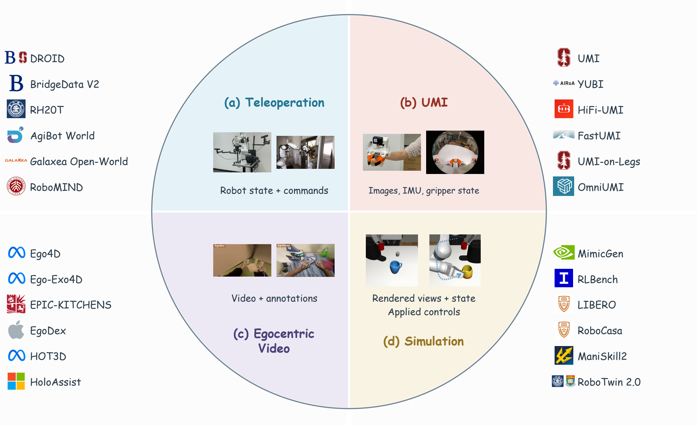
An input channel exposes context; training determines whether it controls action. A scene that identifies every target permits fitting without consulting teaching. Useful training must make earlier evidence informative about a later decision. Acquisition determines what is measured, episode organization supplies these relationships, and construction at scale varies them.
Source taxonomies describe where embodied data originate and how closely they match execution [221]. Contextual learning additionally concerns what earlier evidence reveals about a later decision. Paired episodes, continuous streams, and linked attempts establish different dependencies; pretrained interpretation or geometric reconstruction can connect them without jointly training the whole path.
4.1 Input sources and context modalities
An acquisition source determines what is measured directly and what must be inferred. Teleoperation records robot commands, UMI estimates motion through a robot-like device, egocentric video records human activity, and simulation provides modeled transitions. The four sources are compared on this common basis.
Language can accompany every acquisition source. Instructions specify constraints, command–program examples establish conventions, corrections revise decisions, and summaries retain earlier events. Code as Policies, DROC, and MEM illustrate the latter three roles [27, 44, 46]. Records should preserve each statement’s source, time, and referent: a teacher’s requested change and a model’s interpretation of an event carry different evidence.
Figure 13 contrasts the directly observed interaction: robot execution in teleoperation, instrumented hand motion in UMI, human activity in egocentric video, and modeled execution in simulation. These sources leave different correspondence problems for the learner, as the following parallel comparisons explain.
Teleoperation: measurements and commanded interventions. A real robot provides synchronized scene observations, measured robot state, and issued commands. DROID and BridgeData V2 supply such robot demonstrations [56, 58]; RH20T additionally records force–torque measurements and, in one hardware configuration, fingertip tactile signals [59]. These records can connect an attempted intervention to the body’s response. A gripper-close command specifies an action, while measured aperture and contact help establish whether the object was grasped. Joint torque or motor current also requires interpretation through the robot’s mechanics before it can describe external contact.
Source | State | Actions | Contact |
|---|---|---|---|
Teleoperation | Images; joints; gripper | Recorded commands | Force; tactile (optional) |
UMI | Images; IMU; gripper pose | Mapped gripper targets | Visual; force (optional) |
Egocentric video | Video; optional sensing | Inferred or paired actions | Visual interaction |
Simulation | Rendered views; state | Simulator controls | Modeled contact |
UMI: tracked motion without the robot arm. UMI reduces collection dependence on a robot arm by preserving a gripper-like interface in the demonstrator’s hand. Images and inertial measurements support device-motion estimation, while visual tracking estimates gripper width [62]. The resulting trajectory can supply end-effector targets without measuring arm-joint motion. Sharing the end effector between collection and execution reduces a further source of correspondence error [66]; synchronized tracking improves the fidelity of the recovered motion [223]. Extensions address acquisition, whole-body realization, and richer interaction sensing [224–226]. Their common trade-off is deliberate: an instrumented interface restricts how a human demonstrates, but reduces the inference needed to turn that demonstration into robot-compatible evidence.
Egocentric video: visual procedure with optional human sensing. Egocentric recordings expose object interactions and their order without requiring a robot-compatible device. Ego4D and EPIC-KITCHENS-100 provide egocentric activity, and Ego-Exo4D adds synchronized external views [68–70]. Some collections also provide audio, gaze, inertial measurements, depth, or tracked hands. They measure human motion and the surrounding environment. Robot action targets must come from paired execution, reconstruction and retargeting, or a controller that grounds the observed procedure. An action-free video supplies visual observations without recorded robot commands.
Simulation: rendered observations and modeled responses. Simulation makes action consequences and privileged state available under a specified dynamics model. Demonstration environments such as RLBench, LIBERO, and ManiSkill2 support task execution with synchronized observations and controls [227–229]; trajectory or task-program construction produces additional executions [74, 230]. This control over the generating process is useful for contextual learning because a procedure can be held fixed while scene geometry changes, or varied while the scene remains comparable. Privileged object and contact states can verify those relationships during construction, even when the deployed policy receives cameras and proprioception. Section 4.5 examines how synthesis preserves the assigned teaching condition.
Channels and policy inputs. Table 9 distinguishes measured state, commands, and contact evidence. Collection channels need not enter the policy: UMI uses IMU data for pose estimation, while its policy observes images, end-effector pose, and gripper width [62]. Specify available fields separately for support, query, and supervision: human video may supply support while the robot queries joint and contact sensors; recorded support commands may condition inference, whereas future query commands supervise it. Measurements and issued actions form history ; selected records, language, and feedback enter context .
Context unit | Evidence | Role |
|---|---|---|
Support example | Demonstrations; paired examples | Task; procedure; contact |
Scene preview | Exploration views; spatial records | Layout; locations; routes |
Query history | Observations; actions; dialogue | Progress; recent response |
Transition sequence | Observation–action–outcome | Physical response |
Cross-attempt record | Episodes; summaries; corrections | Reuse across resets |
Combining channels also requires preserving disagreement. TUNED combines feature and neighborhood evidence for multi-view classification [450]. For contextual control, the relevant question is whether conflicting observations remain distinguishable before fusion commits the controller to one interpretation: contact feedback can contradict an otherwise plausible visual estimate.
4.2 Training units and context dependence
Channels become useful training evidence through temporal and task relationships. Table 11 compares paired episodes, continuous streams, and linked attempts. We define the temporal units first, then use support–query supervision to distinguish input channels, action targets, and pairing criteria. Continuous experience and corrective records extend this dependency beyond explicit pairs.
Organization | Earlier evidence | Learning signal | Link between records |
|---|---|---|---|
Paired episodes | Support demonstration | Query actions | Shared task or environment |
Continuous stream | Observation/action history | Subsequent actions | Temporal continuation |
Linked attempts | Trials; outcomes; corrections | Selected actions or feedback | Consequences across resets |
Temporal units of contextual evidence. A contextual training unit must identify what was observed, what was commanded, and what the resulting feedback established. Language can specify the intended task or annotate the outcome. The sequence must preserve when each item became available, so that a later consequence can supervise learning without appearing as evidence for an earlier decision.
Temporal alignment preserves the relation between an intervention and its consequence through sensor timestamps, command application times, coordinate conventions, and episode boundaries. Measured motor state must remain distinguishable from its command or setpoint. Aligned windows or timestamp-aware encoding accommodate different sampling rates while retaining brief contact events. Missing channels and reconstructed motion must also remain identifiable, because they supply different evidence from direct measurements.
Table 10 groups records by what they contribute to learning. Support can specify behavior or reveal an environment; query history locates execution; transitions reveal action consequences. These units overlap: history contains transitions, and retrieved segments can come from demonstrations or earlier attempts. Their role is independent of modality. Images or synchronized robot records can supply a demonstration, while state–action history can support physical adaptation without one, as in RMA [39].
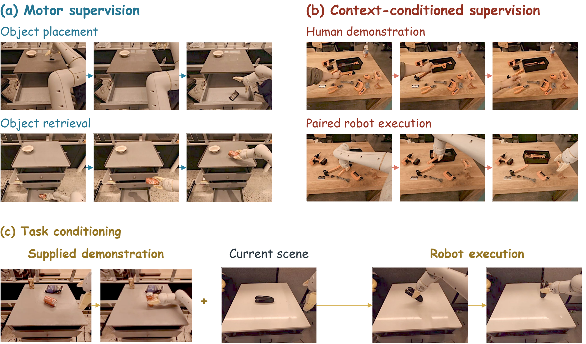
Supervising a query from a support episode. Following the paired-execution principle of one-shot imitation [1], let support demonstration and query observation–action trajectory share task specification . The matched executions may differ in objects, timing, or embodiment. A common supervised objective predicts query actions from their history and support:
|
| (21) |
Here samples executions matched by specification . Query history ends at the current observation, while is the recorded target block. The nonempty set contains positions with complete targets; averaging over it normalizes each episode’s contribution. The loss may use likelihood, regression, denoising, or flow matching. These objectives differ in action modeling but share the same supervisory dependency: the support must explain which query behavior is appropriate.
Equation (21) specializes the general context interface to . In instruction-bearing episodes, the same query-action loss conditions on containing both the demonstration and its associated text. Instructions specify goals and constraints; demonstrations can convey remaining choices of order or contact. A correction enters context when received, preserving what was available before each supervised action.
Figure 14 distinguishes motor supervision, training to use teaching, and deployment-time task specification. Uprighting a differently shaped object illustrates the third role: the operation must survive changed appearance. Paired supervision learns this dependency explicitly; continuous streams can expose it through the sequence of experience.
Support channels and action supervision. Equation (21) supervises query actions while leaving support channels open. Vid2Robot conditions on video without recorded support commands [14]; ICRT supplies support actions in a sensorimotor prefix [13]. Both supervise the query execution. Support content, the action loss, and the architecture that combines evidence are therefore separate choices.
Task identity and support–query pairing. The shared specification determines the granularity of teaching. Pairing all executions labeled “put the object away” can preserve a destination while discarding grasp or route preferences. BPP makes this dependence explicit in its task-grouped demonstrations [54]. The pairing rule must retain the distinction the deployment example is expected to convey. For cross-object transfer (Section 3.5), support and query can change the manipulated object, the receiver, or both while preserving the same requirement. Conversely, retaining comparable objects while varying the required relation makes the support informative. Together, these pairings separate task meaning from object identity and provide examples of which substitutions preserve the intended function.
Pairing requires both semantic agreement and compatible action meaning. Additional demonstrations can distinguish task interpretations left ambiguous by one example, as Instant Policy illustrates with differently shaped boxes [16]. The resulting query target must still express the same intervention in consistent coordinates, timing, and gripper semantics. WALL-OSS-0.5 addresses this physical side through synchronized video and actions, camera repair, and end-effector calibration [233]. These requirements are complementary: semantic pairing determines which behavior is intended, while calibration determines what command realizes it. With shared action coordinates, each body retains its own reachability and contact mechanics.
A shared environment supplies a different pairing relation from a shared procedure. Route-following training pairs a demonstrated path with a perturbed execution, as in RPF [355]. Scene-conditioned training instead pairs a preview with navigation to goals within that environment, as in NOLO [350]; ReLIC [203] links episodes in one home while changing the target and start. The shared variable is therefore the route in the first case and the environment in the latter two. Scene identity and memory-reset boundaries determine which spatial knowledge remains available across examples or episodes.
From paired episodes to continuous experience. Explicit pairing makes the teaching–execution relationship part of the training unit. S1 supplies an in-context demonstration in its pretraining episodes [99]. GEN-1.5 instead reports next-action pretraining on randomly sampled continuous physical spans, without dedicated demonstration packing or an ICL-specific objective, and inserts sensorimotor examples as prompts at deployment [98]. A stream exposes earlier observations and actions without assigning them separate support and query roles. Both systems later accept task examples, acquired through different organizations of training experience. Action generation is a further choice: ContextFlow uses explicit robot support–query supervision with continuous flow matching [55]. The action loss and the organization of experience play different roles: one fits the action model, while the other links preceding evidence to subsequent behavior. Cross-Episodic Curriculum orders trajectories by learning progress or demonstrator quality [435]; controlled MiniHack and Procgen studies link task diversity and trajectory burstiness to new-task ICL [434]. These training results explain why history can become useful, without establishing the same transfer on physical robots.
Behavioral diversity and contextual identifiability.
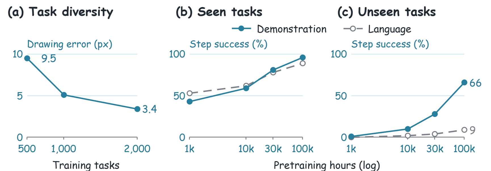
Training must make teaching informative about the continuation. If a scene predicts every action, the loss can be minimized without reading the demonstration. SimpleICL varies actions, object placements, orders, and grasp modes in paired executions, while varying demonstrator appearance and irrelevant scene content independently [517]. Its affordance ablation requires contrasting grasp modes for the same object; its composition test retains order discrimination without the corresponding explicit contrast. Thus different taught requirements need different data controls. Count distinguishable teaching problems alongside trajectories, and test each required invariance rather than assuming that one pairing recipe establishes them all.
Context can also support shortcuts: previous actions or a familiar scene may predict the training target without specifying the requested behavior [234]. CRAFT counters this dependence by varying the requested skill composition for the same observation and aligning separate skill and state representations [457]. Its counterfactual objectives train the VLA offline; deployment uses observation and instruction. Held-out compositions combine familiar constituent skills, making this evidence about compositional instruction use. For demonstration ICL, the corresponding test changes the taught relation while preserving the scene. Both designs ask whether task-defining evidence controls behavior beyond collection correlations.
The evidence distinguishes behavioral diversity from visual variety. ICRT’s selected DROID-only condition fails its test tasks; its multi-task scenes instead require different actions from similar observations [13]. At a fixed 10,000-demonstration budget, BPP’s mean drawing Chamfer error falls from 9.5 pixels for 500 tasks to 5.1 for 1,000 and 3.4 for 2,000 (Figure 15a) [54]. Its folding study can favor language conditioning. Its architectural comparison attributes much of BPP’s advantage over ICRT to the diffusion action decoder, separating decoder quality from prompting. Demo-JEPA varies task classes and trajectories per task independently [22]. Useful diversity adds distinctions that teaching must resolve and the action decoder must realize during execution.
S1 separates scaling gains on seen and unseen tasks under matched data, compute, and architecture apart from the prompt embedding [99]. Across 1k–100k training hours, both prompting methods improve on seen tasks. On unseen tasks, demonstration prompting rises from 1% to 66%, while language prompting rises from 0% to 9% (Figure 15b,c). Thus similar seen-task performance can conceal different returns to new-task teaching. The cumulative per-step metric includes human recovery, mainly for the language baseline. The S1 comparison concerns combined data scaling and prompting, while BPP directly isolates task diversity at a fixed demonstration budget. Matching the procedural information conveyed by text and video would further isolate modality from teaching detail (Section 7.1).
Linked attempts and corrective supervision. Learning from a failed action or a diagnostic probe extends context dependence across attempts. The training unit must link what was tried to what happened next, preserving reset boundaries and any change in the task or physical condition. Algorithm Distillation models such learning histories [6]; LocoFormer retains experience over varied morphologies and dynamics [40]. Reward-based meta-training can value an informative action through its benefit to later attempts [2]. A short probe gains learning value when its outcome informs the next decision. Linked attempts expose this dependency during training.
In recovery-conditioned supervision, the failed attempt and its feedback enter context while a later continuation supplies corrective targets. RoboTTT’s DAgger Distillation uses the full rollout as context but applies action loss only to human corrections, also improving its GDN comparator [10]. The failed actions record what was tried; the selected corrections specify what to imitate. This training organization can support different memory mechanisms.
Equation (21) extends to this case by replacing support-only conditioning with . For block-level losses, includes only complete blocks composed entirely of actions selected for imitation. An objective supporting action-wise masking can instead suppress unselected positions within a block. Other executed actions remain in history. The context mask controls available evidence, whereas the target mask controls desired behavior. Runtime context contains only evidence available before the decision; future outcomes may supply supervision. Attempt boundaries must separately record physical resets, memory resets, and changes of tool or dynamics.
Long-context control requires representations that preserve decisive events. Past-Token Prediction adds reconstruction of earlier actions to future-action prediction, first learning short-context visual features and then caching them for longer-context training [235]. Caching reduces repeated computation; the cached visual features determine which task details remain available to the controller.
The supervisory unit determines what evidence can explain a later action: pairs link teaching to realization, streams link earlier events to current control, and linked attempts connect outcomes to revised decisions. Their common requirement is a decision that earlier evidence helps disambiguate. The remaining analysis examines acquisition sources that preserve this dependency with usable action correspondence.
4.3 Data coverage and action correspondence
Data coverage has two distinct meanings: the range of behavior recorded and the range of teaching–execution relationships recoverable from it. Robot records, motion-bearing human demonstrations, and ordinary video trade direct action correspondence against collection breadth. The comparison below follows that trade-off, asking which annotations make each source usable for contextual training. Simulation supplies controlled counterparts in Section 4.5; Table B4 lists resource-level details.
From reusable experience to annotated procedures. Motor coverage supplies reusable behavior before teaching can specialize it. Autonomous multi-task experience and shared demonstration collections addressed this need [236, 237]; Bridge Data included 7,200 demonstrations across 71 tasks and ten environments. Later collections broadened scenes and embodiments [56–58]. Contextual training additionally needs relationships between these executions that preserve what a new example should teach.
Procedure annotations identify why a continuation changes. AgiBot World’s March 2025 release spans 1,001,552 trajectories, 2,976.4 hours, 217 tasks, and 106 scenes, including subtask and recovery records [60]. Task intervals, step instructions, and later corrections connect demonstrations, autonomous attempts, and human interventions [238, 239]. Linking an attempt to its correction preserves the evidence that makes a different continuation appropriate.
Embodiment diversity separates task correspondence from action correspondence. Galaxea shares a platform and subtask timing [61]; RoboMIND 2.0 and RoboCOIN span more platforms [240–242]. Procedural metadata establishes task equivalence; kinematics describes the differing realizations. Pairing needs both.
Robot records supply executable supervision. Robot records become contextual supervision when a query execution is associated with an example of its intended procedure [56–58, 60]. Cross-scene retrieval can locate candidate executions [243], but matching must distinguish alternatives that begin in similar scenes.
Human–robot pairing exposes an asymmetry between teaching and supervision. A human video can specify the intended interaction, while robot measurements reveal the commands and contact response needed to realize it. RH20T provides corresponding human videos together with robot images, joints, gripper state, force–torque signals, audio, and tactile sensing in one configuration [59]. These richer query records can supervise a policy whose eventual human support contains fewer channels. Task-level human–robot organization helps define the transfer setting [101], but a shared label such as fold can still merge different procedures. Matching ordered events and terminal outcomes, as in WorldScape’s robot and UMI pairs, preserves a finer teaching relation [25]. Pairing granularity therefore determines whether the model learns an activity category, a procedure, or an interaction detail.
Mixed capture can reduce pairing cost. XR-2 combines 531.7 hours of robot teleoperation with roughly 1,000 hours of dual-UMI demonstrations [244]. Robot views, state, and actions supply executable targets; egocentric views and gripper motion supply candidate support. Shared laundry tasks narrow the search, while procedure-level matching identifies compatible executions.
Motion-bearing demonstrations reduce correspondence uncertainty. Instrumented teaching trades restrictions on collection for less uncertainty in transfer. Handheld grippers make the demonstrator’s observations and motion closer to a robot-compatible interface [62]. Preserving the end effector across collection and execution further reduces what must be inferred: YUBI reports 8,434 hours over 119 tasks and transfers the same gripper between arms through per-robot inverse kinematics [66]. Sharing the gripper reduces hand-to-robot correspondence uncertainty, leaving each arm’s reachability and control limits to be handled during execution.
Bimanual teaching makes relative motion fidelity more consequential than the visual plausibility of either hand alone. Stereo-inertial tracking, synchronized views, and inter-gripper reconstruction preserve this coordination [223]. HiFi-UMI’s reported 2K release also includes subtask boundaries, and its policy studies use UMI post-training without target-task teleoperation. Calibration preserves the physical relation between hands; boundaries identify which procedure that relation instantiates. Modular tracking can simplify acquisition [224], while a simulation-trained whole-body controller can supply realization beyond the demonstrated gripper motion [225]. More accessible capture and more accurate coordination are consequently distinct improvements to the teaching interface.
Contact sensing extends what the teaching record can express. OmniUMI synchronizes vision and motion with tactile signals, internal grasping force, and external interaction wrench [226]. Such measurements can distinguish a visually similar motion performed with different contact conditions. Their transfer still depends on compatible sensing, calibration, and execution interfaces; a measured wrench and a commanded gripper setting carry different information.
Collection can be conditioned on the current policy’s weaknesses. HIL-UMI compares handheld human trajectories with policy predictions on the same observation stream and targets additional data to disagreement and low-advantage segments [341]. The resulting demonstrations support further policy training. Thus policy-aware collection improves which experience is acquired, while remaining distinct from using that experience as fixed-weight deployment context.
Removing the collection device shifts this burden from measurement to inference. Tracked hands and segmented point clouds can be converted into gripper poses [16]; motion inferred from human play can supply pseudo-actions, retrieved context–query relations, and retargeted humanoid supervision [245]. These approaches broaden the usable recording pool, but the action evidence inherits reconstruction and retargeting error. The trade-off is most consequential near contact, where a small positional error can change whether a grasp or insertion is feasible. A common action format enables joint use of these records while their reconstruction reliability determines their supervisory value.
Mixed-source training can preserve this distinction instead of forcing all trajectories to carry the same supervisory weight. Aligning camera-space actions, embodiment, and chunk duration provides a common temporal interface, while reliability-weighted human pseudo-actions supplement a robot-supervised primary objective [246]. In ACE-Ego-0, the auxiliary objective emphasizes more dependable position channels. This weighting lets human records expand coverage while measured robot actions anchor execution. Carrying reconstruction confidence into contextual pairs likewise avoids treating uncertain hand tracking as an equally reliable robot target.
Zeva-Ego separates this acquisition of a physical prior from deployment adaptation [362]. Its Action-Centric Encoder converts egocentric visual transitions into continuous action-token supervision for mid-training. A later interaction-conditioned stage trains the action model to use observed action effects; deployment freezes the weights and updates memory. Human experience expands prior competence, while robot interaction supplies evidence about the current physical conditions.
Motion annotation reduces the uncertainty left by ordinary video while retaining a human-centered collection process. Hand–object geometry [63, 64] and contemporaneous hand and finger tracking, as in EgoDex’s 829 hours [65], expose motion that otherwise must be reconstructed from RGB. Robot learning still requires conversion into feasible contacts and controls. EgoScale’s 20,854 hours of action-labeled human data are connected to robot behavior through aligned mid-training and downstream post-training [67]; its one-demonstration experiment uses policy updates with one robot demonstration per task and additional human trajectories. These stages show why improved action evidence and fixed-weight task acquisition are separate contributions: the former can support either contextual inference or further policy fitting.
The transition from human pretraining to robot deployment also changes the meaning of language supervision. Xiaomi-Robotics-1 combines over 100K hours of UMI and egocentric records with cross-embodiment post-training [247]. State-transition descriptions during pretraining and imperative instructions during post-training serve different prediction targets. For demonstration-conditioned learning, the corresponding design choice is which task details remain unspecified by the instruction and must be recovered from the example. This connects source breadth to the pairing criterion in Section 4.2.
Ordinary video broadens procedural coverage. Ordinary video reverses the trade-off of instrumented capture: activity coverage is broad, while robot-compatible action information is sparse. Egocentric activity labels help locate candidate procedures [68, 69]; paired viewpoints and short human–object changes offer cues about correspondence and outcomes [70, 71]. These sources can identify what happened without fully specifying how a different body should reproduce it. For contextual teaching, selection must preserve the choice that distinguishes this example from another clip of the same activity.
Annotation is useful when it removes uncertainty about the relation teaching must preserve. Common capture protocols reduce incompatible recording conventions [248]; atomic segments and reconstructed hand and camera motion expose where an interaction begins and ends [249]. Object-state and contact annotations can resolve physical events hidden in RGB [250]. These additions are not interchangeable: reliable boundaries help preserve order, whereas contact-sensitive transfer needs relative motion and object response. The appropriate annotation follows the task distinction the support example must convey.
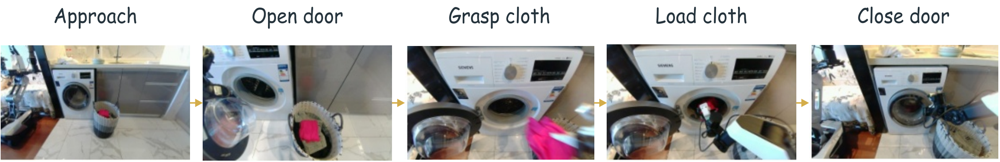
Procedural and conversational datasets contribute another missing dimension. Assembly101 records natural variations, mistakes, and corrections during assembly and disassembly; HoloAssist pairs a performer’s egocentric activity with an instructor’s spoken guidance and intervention annotations [72, 73]. Their contribution is the relationship between a partial procedure and information that changes its continuation. Transferring that relationship to robot ICL requires robot-compatible continuation targets or an executor that can realize the corrected instruction. Preserving mistakes, instructions, and corrections as linked events retains this distinctive supervision.
Human-video priors and demonstration following use this evidence differently. Learning latent plans from human play can reduce the robot experience needed for control [251], even when human and robot executions are not paired. Following a newly supplied video additionally requires preserving the demonstrated choice in a compatible robot execution. WAM-TTT learns that connection through paired human–robot meta-training, while its deployment-time fast-weight update needs only action-free human video [11]. This is parameter adaptation under the distinction in Section 2. Robot supervision establishes the connection during training; the later teaching input can omit recorded robot commands.
Preserving a teaching relation requires more structure than a shared task name. A mobile-manipulation episode contains identifiable substeps and transitions that can anchor retrieval or a corrected continuation (Figure 16). Human support and robot execution can traverse those stages at different speeds, so task correspondence matters more than frame equality. Constructing this usable teaching signal incurs a cost beyond recording the raw activity, motivating the acquisition comparison below.
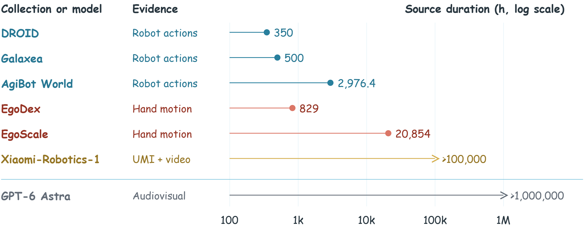
4.4 Acquisition cost and contextual capability
Data value depends on the cost of producing usable teaching, not recording alone. We first examine correspondence costs, then compare explicit contextual training with broad priors and robot grounding.
Collection cost and correspondence. Acquisition cost includes filtering, synchronization, reconstruction, pairing, and validation. Egocentric video records hand–object interaction; UMI also measures device motion. Packing may require event boundaries and contrasting orders, whereas insertion needs calibrated relative motion and contact evidence. More views or longer recordings help when they preserve these distinctions.
Figure 17 compares source duration and evidence type. Xiaomi-Robotics-1 combines UMI and egocentric recordings; general video spans broader activity with less robot-action correspondence. Hours measure exposure, while annotation effort and usable support–query pairs characterize the work needed to turn it into teaching.
GPT-Policy makes the contribution of correspondence concrete [94]. It compares robot video with the same video augmented by aligned end-effector poses, gripper states, and commands. Plug reinsertion succeeds in zero of three video-only trials and two of three augmented-reference trials. This is a combined state–action comparison. Goal-image and occluded-goal settings provide endpoint or self-interaction evidence (Section 6), showing how the content of the acquired evidence shapes its contribution.
Learning targets and acquisition routes. Pretraining supplies executable behaviors and interpretation of teaching. Support–query episodes explicitly supervise example–continuation relationships [1]; broader pretraining can also yield example-based specification [121]. Both support fixed-parameter adaptation. Transfer to unfamiliar rules remains a separate empirical question.
S1 and GEN-1.5 illustrate explicit contextual pairing and continuous physical experience (Section 4.2). Their shared demonstration interface motivates comparing which training relationships produced context use, with tasks, information, motor interfaces, and training budgets matched.
Mechanisms of fixed-parameter context use. Fixed-parameter computations offer candidate explanations for context-dependent behavior. Bayesian accounts infer a latent rule shared within a sequence [318]; distributional studies identify repeated structure that favors contextual inference [111, 319]. Controlled models can bind items to labels and retrieve their association [232], or implement gradient-descent-like updates through linear self-attention [112]. Comparisons with LLaMA show that similarities between contextual and parameter learning depend on the setting [322]. These accounts distinguish what training makes inferable from the computation used at deployment. For robots, tracing a taught distinction into the representation that guides action connects the training relationship to its physical consequence.
General-model priors and robot grounding. Astra's public training summary describes broad text, image, and audiovisual sources, including over one million video hours represented partly through transcripts, captions, or metadata [252]. GPT-Policy combines this fixed general model with an explicit robot controller [94]. Controlled source comparisons would identify which parts of this pretraining enable contextual robot behavior.
Broad priors interpret procedures; grounded records connect them to robot commands. GPT-Policy’s contact-sensitive action-reference comparison illustrates their complementarity. Compare task information and action correspondence under matched priors and executors.
From exposure to usable teaching. BPP varies diversity at fixed demonstration count, S1 varies scale and prompting, and general-model disclosures describe cross-domain exposure. Additional recordings can supply missing motions, distinguish procedures, or reveal repairs. Retrieval and synthesis should target the corresponding gaps in selection, composition, or rule inference (Section 8.1).
4.5 Scaling data construction
Data construction targets missing teaching relationships (Section 4.2): retrieval reuses evidence, spatial supervision and synthesis construct counterparts, and failure–correction collection supplies continuations absent from successful demonstrations.
Autonomous orchestration supplies executions [76]; reward and success signals select them for policy training [254]. Contextual training additionally needs each continuation's governing instruction, demonstration, or correction. Contrasting teaching–execution pairs reveal which behavior depends on that evidence. Acquisition aimed at motor competence selects successful motion; acquisition aimed at contextual responsiveness must also preserve the preceding uncertainty and its resolution.
Retrieval for training and contextual pairing. Training retrieval asks which external behavior can improve a robot’s learned competence. RoboTok reduces appearance and viewpoint dependence through actor-centered hand-motion retrieval, then retargets trajectories into reward guidance for PPO training [255]. Semantic, hand-pose, and motion similarity can likewise select human samples compatible with robot demonstrations [256]. In both cases, relevance is defined by the supervision entering the policy’s weights. This differs from contextual pairing, where the selected clip must explain a particular query procedure even if both behaviors are already within the motor repertoire. PHASE selects variable-length contact phases using tactile evidence, preserving insertion-stage compatibility in the retrieved training set [409]. This supplies a concrete counterpart to runtime retrieval: the selected evidence changes the policy learned offline.
Contextual pairing instead requires agreement with the intended procedure. RHyME composes human clips for a robot trajectory through sequence-level optimal transport [80]; shared constituent behaviors enable pairing, while clip boundaries can introduce errors. Runtime retrieval must also match current progress and motion compatibility. ReCAP supplies state–action chunks to a frozen residual predictor [152]. Expanding its archive changes deployment context, whereas training selection changes learned competence.
Constructing spatial supervision. Cross-scene point supervision teaches where analogous geometry occurs [161]; reconstructed contacts, hands, and motion teach plausible interaction geometry [176]. Contextual training links either prior to the example specifying which relation the robot should preserve. Spatial accuracy and responsiveness to teaching are complementary objectives.
One demonstration as a reference or a data seed. A demonstration can become a runtime reference, training data, or a learning objective. MT3 retrieves and aligns an executable reference [36]; bimanual and reconstructed-scene synthesis produce transformed training executions [257–259]. Dex-One2Many extracts stage-wise relations from one human video, leaving poses and grasps free, and derives rewards, reset distributions, and state features for PPO [495]. Each embodiment then receives a newly trained policy; its zero-shot claim concerns sim-to-real transfer. The same teaching budget can thus incur very different optimization costs. Contextual training additionally preserves the support–query relation so that the resulting learner can interpret another example.
Task-preserving synthesis. Synthesis must preserve the taught requirement while varying its realization. Human-arm renderings change appearance [260]; geometric pseudo-demonstrations and waypoints provide correspondence [16, 77]; simulated execution adds consequence and success checks [74]. Generated environments and task-derived costs broaden these variations [261, 262]. Keeping each counterpart tied to its governing task specification makes it useful for contextual supervision.
KnowDemo makes the preserved requirement explicit [368]. It extracts task conditions from human video, grounds them in the target scene, and screens alternative contacts and subtask orders before planning and simulation. The verified trajectories then train a robot policy. This connects behavioral diversity to task constraints: varying an incidental grasp can expand training coverage, while varying a required order changes what the example teaches.
Simulation provides controlled task and scene variation alongside executable action records. RoboCasa expanded household environments and compositional tasks in 2024; RoboCasa365 adds 365 tasks and 2,500 kitchen scenes, with 612 hours of human-operated demonstrations in simulation and 1,615 hours generated with MimicGen [75, 263]. These are simulated robot trajectories, including those collected by human operators. For ICL, the opportunity is to hold a procedure fixed across environments or vary the procedure within a matched environment, then verify that each generated execution preserves its assigned teaching condition.
Cross-embodiment synthesis must distinguish a changed appearance from a newly validated interaction. Generating human-video counterparts for robot tasks starts from a robot execution [24]; retargeting human motion and rendering robot arms into its scene starts from a human execution [222]. In the latter, visible object responses remain those of the human recording. Physical-consistency and forward–inverse checks can test whether a converted transition admits a compatible action [264, 265]. The teaching relation adds another requirement: the conversion must preserve order, goal, and binding contacts. A physically plausible transition can still be the wrong continuation for the supplied demonstration. Cross-shot generation exposes a complementary consistency requirement: VideoGen-of-Thought propagates identity across shots [451]. Preserving appearance can support visual augmentation, while motion and contact checks determine whether the resulting sequence preserves the demonstrated interaction.
Agent collection can obtain additional executions through shared interfaces. GUMI records pre-action observations and semantic commands for humans and agents [31]. An ICL collection could use this interface to execute contrasting valid orders in comparable scenes, retaining each task specification, recording, and outcome. Pairing each successful execution with its governing specification would preserve the distinction needed for contextual supervision.
Processing must preserve intentional variation. Demonstrator-specific speeds can assign different chunks to similar observations; reducing this ambiguity improves learning in an AgiBot study [266]. Normalize incidental style while retaining task-defining pauses, routes, and contact order. Insertion may require an alignment phase, and pouring may require a pause that uniform speed conversion would erase.
Failure–correction collection. Successful demonstrations leave recovery states underrepresented. DAgger queries an expert on learner-visited states [267], DART elicits corrections through perturbations [268], and selective intervention concentrates human effort [269]. Obtaining the correction also requires entering that state without destroying it. DITTO-X uses reverse actuation to align the operator’s hand with autonomous motion before takeover, preserving ongoing contact [455]. Its diffusion policy is updated through DAgger with successful interventions; learning comparisons cover three tasks on Sharpa, while three-hand demonstrations establish interface feasibility. XR-2 likewise separates autonomous actions from takeovers during retraining [244]. These records expand recovery behavior in weights. Contextual recovery additionally retains the linked failure and feedback so later evidence can select an applicable repair.
Failure records must preserve the intervention and its physical consequence. Perturbations, predicted-rollout interventions, and planner exploration generate different continuations [270–272]; outcome-based learning need not imitate every action [273]. CureWM perturbs actions from shared starting states, executes them to label failure or surviving success, and fine-tunes a predictor with the original objective [490]. Reduced optimism can coexist with more false alarms, so prediction sensitivity and successful control require separate measurements. For contextual repair, retaining the failed action, correction, and outcome, as ASPIRE illustrates [47], lets later inference distinguish applicable repairs.
A correction can teach the current controller and a future policy through different routes. In Bridging Frontier Reasoning and Robot Execution, five demonstrations and successful corrective segments condition a fixed frontier teacher; generated and human trajectories then fine-tune a local student [464]. Equal-size mixed and human-only training both yield 41/80 successes, while the language harness raises the mixed-policy result to 52/80. The comparison locates the added benefit in the surrounding execution interface rather than in synthetic data alone. Retaining linked failures, corrections, and outcomes supports later contextual teaching; using those trajectories as action targets consolidates behavior in neural parameters.
4.6 Connecting teaching data to a pretrained policy
Teaching data needs an interface through which its evidence can change behavior. An observation-conditioned policy such as ACT needs a context channel to distinguish procedures compatible with the same scene [274]. Language supplies goals and constraints [118, 119]; goal images supply endpoints [275]; demonstrations can specify order or contact preferences [13, 55]. Teaching-dependent targets connect the supplied evidence to actions.
The missing dependency determines the needed training records. Foundation policies supply perception and motor interfaces [118, 275–279]; contextual supervision connects task evidence to actions, geometric references, futures, or executable specifications. Subtask annotations and skill representations expose structure [30, 60, 61, 241], while phase-aligned examples connect it to a decision [18]. Joint training, pretrained interpretation, and geometric construction offer alternative routes to a teaching-sensitive intermediate.
Human pretraining and deployment teaching establish different dependencies. Robot pretraining can benefit subsequent human–robot fine-tuning [280]; ICL additionally requires responding to a new example with fixed parameters. The recipe supplies language, quality, speed, modality, and visual subgoals to distinguish executions [281]. Demonstrations can add procedural distinctions these inputs leave unspecified.
Action encoding must make the taught behavior expressible. Regularized ICRT tokens and hierarchical tokenization preserve different motion properties [282, 283]. LipVQ-VAE improves a low robot-success baseline while leaving execution difficult. Pairing, context encoding, and action representation must preserve the same task distinction. Deployment tests realization and repair under the current physical conditions.
Takeaways
• Data sources determine the available measurements; teaching–execution relationships determine what context can teach. Robot data supports motor competence; alternative taught behaviors within the same scene expose the additional dependence on demonstrations.
• Retrieval can select training data, construct a demonstration–execution pair, or supply examples during control. Only the last directly changes a frozen policy’s input at deployment; the first two change the experience from which it learns.
• Useful scaling adds missing motor competence, task-defining alternatives, or evidence that changes a later attempt. The value of added experience follows the new distinctions it makes available to the learner.
5 Grounding: How Does Context Guide Recovery?
Objects can move, grasps can fail, and resistance can change after a task has been correctly interpreted. Recovery aims to preserve the taught requirement while revising the state estimate and continuation. It establishes the current state, diagnoses the deviation, and selects a feasible repair. Retaining the repair with its applicable conditions makes that feedback useful beyond the current attempt.
5.1 Grounding the task in the current physical state
Grounding requires two complementary estimates: the task requirement that remains binding and the physical state that may have changed. An insertion can preserve its destination and prerequisite order despite a moved part. We establish these estimates before examining motion feasibility and the entry conditions of transferred segments.
Preserving the task reference during execution. A transferable task reference must distinguish progress toward a goal from adherence to the taught procedure. Cross-view progress representations can align executions despite appearance or embodiment changes [78, 79]; demonstration-conditioned skill inference selects which procedure that progress belongs to [29, 80]. Current observations must then establish whether its prerequisites occurred and its required contacts remain valid. Terminal appearance can conceal an incorrect order, so verification must use the relations supplied by teaching [284]. This connects correspondence in Section 3.5 to recovery: a deviation is meaningful only relative to the procedure the robot was actually asked to follow.
Figure 18 pairs failures with diagnostic evidence: a new view resolves occlusion, contact checks identify grasp loss, and teaching revisits resolve a wrong target. A stalled insertion additionally requires separating misalignment, resistance, and excessive force. Reversible probes distinguish these causes; irreversible operations may need inspection or clarification first.
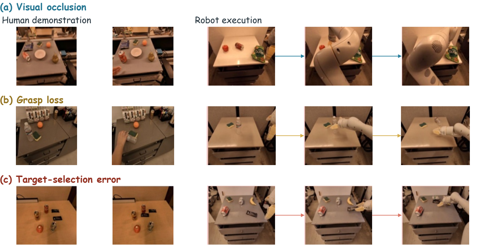
Maintaining a current, task-relevant scene. A repair distinguishes intended changes from observed outcomes. A placement command does not prove completion; later displacement invalidates the remembered pose without changing the instruction. Retrieval recovers unavailable observations [285, 286]; dynamic scene records revise contradicted spatial facts [287–289]. Remaining uncertainty may require a view or reversible probe [290, 291]. VLM-GroNav similarly combines visual terrain examples with slip or sinkage feedback to revise traversal estimates [352]. An open passage and a traversable surface require different evidence.
Validity also requires synchronization. CoreSense checks scope, provenance, time, and consistency [342]. SpatialHarness reconstructs virtual views and geometry for a frozen controller, with different corrections for static, held, and contact-transition states [493]. Exposing occluded relations helps only when reconstruction and synchronization are accurate; construction, transition replay, and policy calls all incur cost.
Connecting intended change to feasible motion. Corrected interpretations need executable continuations. Forward–inverse checks test action–transition agreement; force-conditioned control adds contact measurements [265, 292]. Unsupported motion instead requires a new skill or changed physical setup.
Checking whether a transferred segment still applies. Geometric methods must re-establish reference applicability after failure. DOME and ODIL align starting configurations; staged alignment repeats this at subtask boundaries [33, 37, 177]. After a slip, geometric alignment may persist although the transport prerequisite fails. Entry conditions permit a segment to begin; completion conditions permit progression. Learned subgoal transitions provide the latter within trained long-horizon policies [293].
Failure can invalidate the reference or expose missing competence. Robustness via Retrying revises continuations through registration and predictive control [294]; ScrewMimic uses demonstrated screw motion to guide bimanual learning [295]. Recovery must choose between redirecting existing components and improving the component needed for execution.
5.2 From failure evidence to corrective execution
Assessment identifies a deviation; diagnosis distinguishes its causes; the correction interface determines feasible repairs. Recovery may require a continuation absent from the successful demonstration.
Task-conditioned progress assessment. Failure assessment needs a task-conditioned reference. Action consistency, visual progress, and rollout scores detect deviations [81, 82, 296]. GVL supplies observation–progress examples to a frozen VLM, including human examples for robot trajectories, improving estimates from shuffled frames [83]. FAVOR instead compares observations and executed actions with a WAM’s future-image anchor, interrupts deviating chunks, obtains corrective language, and rechecks execution [467]. Its verifier is trained offline around a frozen WAM. The reference defines intended progress; rechecking establishes whether repair restores it.
Apparent progress can conceal excessive contact force or incorrect operation order. Verification must test both taught requirements and physical acceptability.
Diagnostic evidence acquisition. Diagnosis identifies the cause needed to choose a repair. Multisensory clues and failure knowledge distinguish stalled-action explanations [84, 85]. Clarification and alternative plans resolve intent [86, 297, 298]; tactile feedback reveals resistance absent from RGB [299]. Teaching and interaction resolve different unknowns.
Task-context exploration and question-based teaching formalize evidence acquisition [300, 301]. The next check should discriminate action-relevant causes. Affordance Agent Harness routes perception skills, verifies evidence, and retries before committing a region, using episodic priors for recurring objects [375]. Verification thereby governs what reaches motion control.
Correction granularity and feasibility. Correction granularity follows the cause: change target selection, approach geometry, or action magnitude as needed. Corrective-language training makes instructions actionable [87]; sparse adjustments address magnitude errors around a frozen VLA [142]. Subtask, motion, and pixel-target interfaces expose different resolutions [210]. The correction must also be executable from the reached state (Section 3).
Work | Available evidence | Affected output |
|---|---|---|
| Assessment and assistance
| ||
GVL [83] | Observation–progress examples | Progress estimate |
FAVOR [467] | Future-image anchor; executed actions | Verify; correct; recheck |
IntroPlan [298] | Retrieved reasoning examples | Plan; clarification |
| Corrective execution
| ||
ICPI [9] | Execution errors; correction examples | Motion-primitive parameters |
RACER [87] | Current images; corrective language | Action continuation |
CorrectVLA [142] | Human feedback | Sparse action bias |
| Experience reuse
| ||
DROC [46] | Retrieved language corrections | Plan; skill calls |
Zeva [88] | Action–effect history | Subsequent actions |
ENPIRE [89] | Execution feedback | Executable program |
Iterative in-context policy improvement maps primitive settings, errors, and correction examples to an adjustment through a frozen language model [9]. Relative errors outperform raw states and targets: they identify a change available within the primitive’s range. Neural parameters remain fixed.
When the frozen action policy cannot continue from the failure state, CoRe uses history and counterfactual continuations to choose a rejoin state, then realigns displaced objects before returning control [302]. The teaching still specifies the task; restoration makes an existing skill usable again.
Recovery can reconstruct a reference or revise retained history. RESETTLE triggers on persistent disagreement between independently sampled actions, retrieves a successful same-task demonstration, and combines state servoing with a guarded visual residual for one corrective control step [491]. Its modules are trained offline and frozen during recovery. FARE instead compares continuations from full, recovered, and reset causal caches under the same current observation [400]. Always searching or accepting an unverified prefix can underperform its base policy. Both approaches require a reference compatible with the present state: restoration of a known task differs from acquiring a new procedure. Task graphs and verified subgoal memory preserve completed steps and failed prerequisites [206, 303].
Feedback must identify a revisable decision: progress, action, or retained guidance (Table 12). A useful repair changes that decision while preserving requirements outside its scope, making its conditions of reuse explicit.
5.3 Applicability and reuse of corrections
Reuse retains a conditional lesson: which intervention corrected which failure, and under what conditions. Guidance or executable artifacts preserve it through Equation (19); corrective training can incorporate such lessons into policy weights (Section 4).
Reset rules follow the retained lesson. Language corrections preserve requirements; action–effect history preserves physical response [46, 88]. A workcell reset clears progress, whereas a changed tool may invalidate dynamics but preserve assembly order. Recording observation, intervention, and outcome lets later attempts reassess applicability rather than replay a repair blindly.
Program-based reuse makes repairs executable. ENPIRE’s program-revision branch uses fixed neural models; Zetta retains critics and recovery routines around a frozen policy [89, 90]. Interruptible execution exposes intervention points [304]. Later trials test the repair’s benefit under applicable conditions. Task structure and irreversibility determine what can be repeated, linking recovery to the application demands below.
Takeaways
• Context specifies the recovery reference and helps interpret failure. Physical measurements establish quality; a responsive control interface makes the correction executable.
• Corrective training expands available repairs; contextual recovery selects or revises one from fresh evidence. Reuse requires retaining the correction with its outcome and applicable physical conditions.
6 Applications: What Must Context Resolve?
Applications determine what context must resolve: an intended interaction, an unknown route, a completed prerequisite, or an unfamiliar physical response. These demands specify the needed teaching or observation; repeated task changes additionally impose acquisition and reuse costs. Any method family can serve these applications if its execution interface preserves the required information.
6.1 Task specification in manipulation
In rearrangement, teaching can specify object–container assignments, component order, or tool use. Moving a destination changes the path while preserving its role. The Imitator Game tests this preservation of intent across scene, object, and functional changes [101]. The challenge is to carry the taught requirement through altered geometry and contact conditions.
When an example conveys more than a task label. A demonstration is useful when it specifies choices left open by the goal. A final drawing omits stroke order and tool approach; BPP's DrawAnything study links drawing-task diversity to demonstration-conditioned generalization [54]. In its three-task laundry study, language is more reliable, with some video-conditioned executions choosing the wrong fold. The required path or order determines what teaching must add beyond an endpoint.
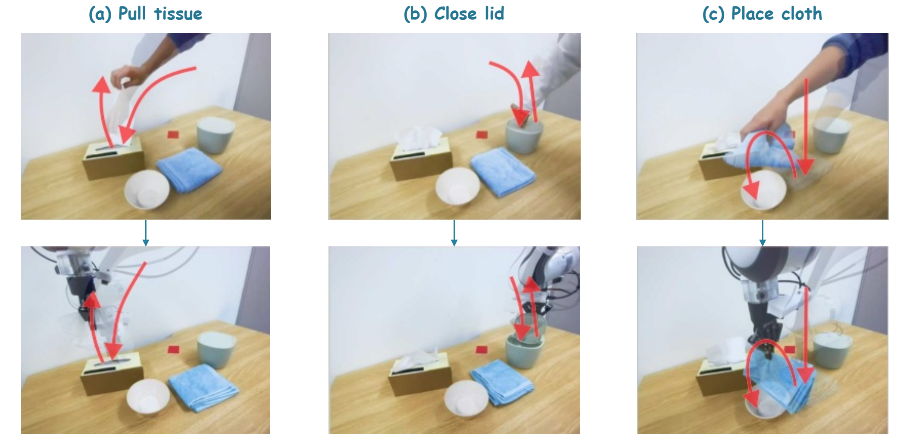
A new workpiece can preserve an assembly relation while changing its grasp; a new fixture changes insertion geometry. Replacing both couples these adjustments (Section 3.5). The application defines allowed substitutions and binding identity, contact, order, and material requirements.
Personalized behavior adds persistent conventions to task specification. Language corrections can retain user preferences and guide subsequent plans [46, 305]. A request to place objects quietly should govern later placements, whereas a correction to one object’s location need not. Such applications require both an acceptable endpoint and adherence to the user’s continuing constraint.
Cross-body teaching adds correspondence requirements. Bimanual action inference can condition one arm's trajectory on the other [92]; sharing an end effector instead reduces physical mismatch [66]. Both must realize the taught contact or cloth relation through feasible coordinated motion.
Figure 19 shows the preserved interaction across human and robot executions: pulling tissue, closing a lid, or placing cloth. The relevant object part and destination remain identifiable while the robot changes its approach and contacts. A handle-specific instruction restricts that variation; an endpoint-only request leaves the grasp open.
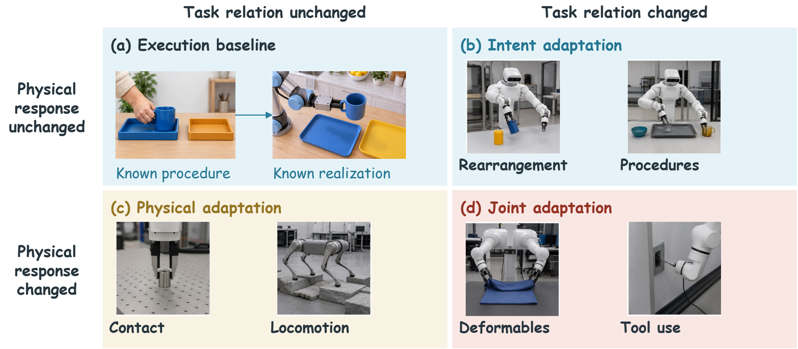
Method choice follows the binding requirement: contact, motion, order, or prerequisites. Training pairs matched solely by endpoint can erase constraints that the user values (Section 4.2). The application determines which intermediate must preserve them.
When intent and physical response change together. Deformable manipulation couples the procedure to a changing scene. A fold alters visible surfaces and accessible contacts, so the correct next action cannot be obtained by repeatedly matching the initial demonstration frame. Geometric and semantic information can jointly condition a folding policy [91]; preserving fold boundaries then provides a more useful correspondence than copying absolute hand trajectories. Instant-Fold’s simulated mode variation and real garment variation examine different parts of this transfer. Its RGB-D and interaction interface, including estimated and potentially corrected human interaction points, also supplies richer information than ordinary RGB demonstration video.
Material changes can preserve the procedure while altering the required force. Visuo-tactile measurements expose contact response [306]. TacZero places numerical touch, images, and within-trial action–result history in a frozen VLM’s context to select Cartesian insertion targets [477]. Calibrated control executes them, with scripted grasp preparation and fixed orientation. PEARS separates slower revision from fast regulation: a frozen VLM revises force intervals from compressed cross-episode outcomes, while a force controller enforces them along manually corrected axes [478]. An online SAC actor and critics additionally learn diffusion-noise steering around the frozen policy. Contextual constraint revision and neural adaptation therefore complement each other. These interfaces connect contact evidence to different control timescales.
Arrangement changes test task relations; changed resistance tests physical realization. A new fold on unfamiliar fabric couples both, as each action changes the geometry for the next. Varying them independently identifies what teaching and feedback contribute.
Figure 20 crosses the two demands: a changed task relation, changed physical response, or both. This view identifies what evidence an application needs before comparing the method used to process it. Navigation extends this question from object interaction to spatial knowledge and traversability.
6.2 Navigation and spatial adaptation
Navigation context can specify a route, reveal an environment, teach an instruction interpretation, or correct a failed passage (Table 13). These information roles can coexist. They complement the method taxonomy in Section 3, which distinguishes how the supplied evidence enters control.
Context type | Evidence and decision | Representative approaches |
|---|---|---|
Route demonstrations | Ordered views or landmarks, sometimes with actions. Follow a demonstrated path or sequence of subgoals. | Zero-Shot Visual Imitation [354]; RPF [355]; sparse visual memory [356] |
Environment observations | Scene previews or earlier visits. Locate objects and connecting passages for new goals. | SPTM [357]; NOLO [350]; ReLIC [203]; NavProbe [381]; SparseNav [394] |
Instruction and decision examples | Instruction–landmark, instruction–subtask, or image–decision pairs. Interpret a new instruction or select a move. | |
Outcome feedback | Outcomes, route records, terrain response, or dialogue. Revise guidance, interrupt motion, or update traversal costs. | VLM-GroNav [352]; CMMR-VLN [360]; HarnessVLN [514]; Talk2Escape [382]; NavGPT-3 [509] |
Route demonstrations specify where to go in sequence. A tour specifies an ordered passage through a building even when execution deviates from recorded camera poses. Zero-Shot Visual Imitation uses demonstration images as subgoals for a pretrained policy, including TurtleBot navigation in unseen offices [354]. RPF encodes views and actions as path memory for noisy motion and changed scenes; sparse visual memory retains fewer views while preserving the action sequence [355, 356]. These references supply visual subgoals or action-bearing routes, aligned with current progress.
Environment observations reveal where places and objects are. Earlier exploration can reveal a building without prescribing the next route. SPTM turns recordings into a visual-location graph; NOLO conditions actions on scene video; ReLIC retains experience across goals in one home [203, 350, 357]. NavProbe retrieves subgoal-relevant spatial evidence, while CLUE tests object and function hypotheses against an online map [381, 404]. Such observations can resolve either an unknown route or an underspecified objective. HomeBody binds remembered locations to navigation and manipulation in shared coordinates [415]. NavHarness carries maps, recovery handovers, and house notes across fresh reasoning sessions; hiding records or supplying incorrect handovers isolates their contributions [427].
Retention also has a recipient and an expiry boundary. MemoryVLN resets episode history but retains a same-environment context bank, using confidence-gated writeback and retrieval with offline-trained action components fixed online [541]. TRISS shares topological visual features during simulated missions; its learned planner uses teammates’ explored locations, and its oracle-scheduled ablation links sharing to higher mission success [535]. These mechanisms reuse local knowledge across episodes or robots; new buildings need fresh observations.
Spatial memory needs acquisition, interpretation, and expiry rules. SparseNav grounds instruction-relevant landmarks [394], NavProbe retrieves subgoal evidence [381], and ECROM conditions negative detections on viewing opportunity [447]. COOL retains people–object interactions and timestamps to infer ownership and choose search targets; active observation refreshes stale evidence [487]. LiSoNav instead moves small objects between episodes. Its IVAM-Nav method binds objects to support surfaces and updates obsolete records through revisits [488]. In its 245-subtask ablation, keeping memory without updating it lowers success below removing cross-task memory. Useful memory preserves both facts and their applicable conditions.
History reaches control through learned action inference or explicit tool requests. LightNav-0 compresses time-marked views into pointing and action tokens [497]; NavMCP connects fixed models through intent, observation, and memory channels, retaining negative evidence and unresolved goals across navigation calls [498]. Its full episodic comparison changes all three channels. HarnessVLN makes evidence validity a condition for execution: event records track progress and failures, while a spatiotemporal graph preserves observation provenance and recency [514]. Before dispatch, its harness checks target support, reachability, and subgoal consistency. Stopping requires semantic, geometric, and progress evidence together. This connects memory management to executable decisions through an existing navigation controller.
Instruction and decision examples teach an interpretation. Example pairs teach how to interpret a navigation request. LM-Nav prompts instruction-to-landmark translation, then grounds the sequence in a graph for a pretrained navigator [358]. ANav distinguishes demands such as passing versus entering a doorway, selecting suitably trained navigators [359]. Select2Plan retrieves image–answer examples for movement or waypoint decisions [351]. Thus examples teach symbolic decomposition or visual choice through existing executors, rather than a route tied to particular places.
Outcome feedback revises what should be attempted next. Feedback revises unsuccessful decisions. CMMR-VLN retains routes and first-error notes; HAM-VLN records failures at visited places [360, 361]. VLM-GroNav updates waypoints and traversal costs from interaction [352]. Talk2Escape detects looping or divergence and requests landmark-grounded human or oracle clarification [382]. These records remain useful while their instruction, location, and physical conditions apply.
Evidence must reach the component controlling motion. NavGPT-3 retains route keyframes and visited places for a planner delegating to a separately trained VLA [509]. Reasoning, acting, and monitoring have separate contexts and permissions. Interruption revokes motion authority; fresh state and renewed authorization permit resumption. Updating a plan must invalidate affected pending commands. Section 7.4 examines the time required to stop physical execution.
The four navigation contexts have different validity boundaries. A new goal can reuse a map but replace a route; a new building invalidates local locations while preserving interpretation conventions; changed terrain can invalidate traversal estimates. Section 7.1 turns these distinctions into controls. Combined navigation and manipulation also require tracking object acquisition after arrival.
6.3 Long procedures and irreversible operations
Long procedures require tracking dependencies. Interaction phases and sequential end-effector goals expose them in RGB-D teaching interfaces [93]. An unfinished step, a completed step, and a failed prerequisite need different continuations even when their images resemble one another. Context must align the demonstrated sequence with actual progress; irreversible steps further constrain valid retries.
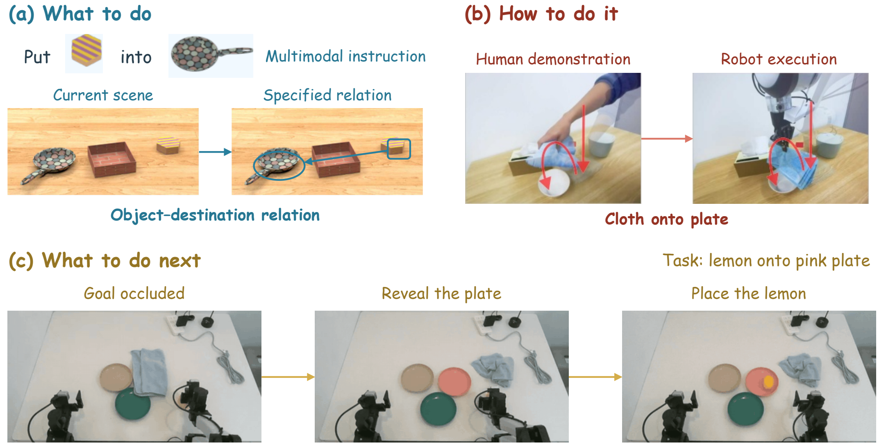
Irreversible procedures add a constraint on how progress and failure can be established. In laboratory workflows, intermediate products must remain valid while the robot decides how to continue. Benchmarks spanning atomic skills, compositions, and extended workflows expose the interaction of procedural inference and dexterity [95]; household planning with low-level embodiment abstracted away isolates dependencies among steps [307]. Varying the supplied procedure within these settings would test whether contextual teaching preserves dependencies through the available executor.
Long procedures also couple memories with different validity periods. Progress memory records which steps have been completed; physical memory estimates how to perform the remaining operation. Zeva’s two-timescale analysis tests reuse of action effects across reset attempts [88]. In a laboratory workflow, however, a physical reset may be impossible: repeating an insertion and repeating a dose have different consequences. The informative next interaction must therefore respect both the taught dependency structure and the state of the intermediate product.
Reversibility determines how the recovery mechanisms in Section 5 can be used. A placement may permit local correction; dispensing or fastening can require inspection before a retry. The application therefore needs evidence of completed operations, alongside the demonstrated dependency structure, to decide whether a failed step can be resumed.
The distinctions in Figure 21 concern what information is missing from the next decision. In (a), task specification identifies the required object–destination relation among alternatives already present in the scene. In (b), interaction guidance conveys the motion relation that should survive the change from a human hand to a robot gripper. In (c), execution-state tracking establishes that the plate has been uncovered, making lemon placement the next feasible step [94]. These examples instantiate the information roles in Section 2: panel (b) combines a specified interaction with cross-embodiment correspondence, while panel (c) updates execution state under an unchanged goal. They are complementary information requirements within a task, and can be supplied together through language, demonstrations, and interaction history.
A new procedure can require either a new arrangement of available operations or a motion the current policy has not acquired. Assembly adaptation through fast weights [10] and GEN-1.5’s brush-to-dustpan example after five minutes of fine-tuning [98] place new evidence into parameters. They provide a useful comparison with fixed-weight teaching: context can select, order, and parameterize available operations, including new motions within the executor’s capabilities; further policy learning can expand those capabilities. This separation localizes long-procedure failures to task interpretation or motor competence.
Long-procedure evaluation must separate adherence to a new ordering from adaptation to changed physical response. Body and dynamics adaptation isolates the second demand: how a familiar requirement is realized when the physical system changes.
6.4 Adaptation to body and dynamics
Body adaptation isolates physical response while keeping the requested task specified. Locomotion makes this separation explicit; manipulation introduces analogous uncertainty through payloads and contact. Their combination in mobile manipulation then requires procedure and progress memory alongside the physical estimate. A direction or speed command can already specify the goal; recent action consequences reveal how the current body and terrain respond. Learned adaptation modules address this physical uncertainty [39], while longer-context experience broadens the setting toward different morphologies, actuator changes, and evidence retained across attempts [40]. A broader range of bodies expands the response variations that the policy must infer from its interaction history.
Locomotion also separates a change in the requested behavior from a change in the body that realizes it. Example-conditioned foot-contact generation can specify a gait-like procedure for a pretrained controller [96]. Active tracking across wheeled, quadrupedal, and aerial platforms instead uses a shared velocity interface, with body-specific realization delegated to lower-level control and visual history identifying the moving target [97]. The shared interface supports cross-platform execution by assigning target tracking to visual history and body-specific motion to lower-level control. The contextual contribution depends on whether the evidence specifies a gait, tracks a target, or identifies an unfamiliar response.
Manipulation introduces analogous uncertainty through a new gripper, payload, or deformable object. RopeFormer retains action–response history across trials on unseen ropes, adapting rotation and whipping with fixed policy weights [363]. MetaPusher instead updates a dynamics model during pushing and revises the plan for the unfamiliar object [367]. The goal can remain fixed in both cases: interaction reveals how to realize it under changed physical conditions. Combining this evidence with demonstrations requires distinguishing a changed task requirement from a changed response.
Mobile manipulation combines procedural teaching, spatial recall, and geometric execution. Cracking Mobile Manipulation adds demonstration-derived skill cards and queried observation history before base and end-effector geometry tools, with the action model frozen [545]. Progressive development-set success rises from 19% to 25% with cards, 29% with memory, then 47% with both tool groups. The sequence exposes distinct contributions, although marginal gains depend on insertion order. Context selects procedural evidence; geometric tools additionally change what the system can execute.
Procedural teaching and response adaptation become especially valuable when the same capabilities serve recurring tasks. Their practical benefit then depends on which acquired knowledge can be reused and which conditions must be checked again.
6.5 Task changeover, teaching, and reuse
Recurring kitting orders can share parts and grasps but differ in placement sequence. A demonstration specifies that difference when a count or destination alone is insufficient. Across batches, the sequence persists while progress resets; a new tool invalidates physical estimates without necessarily changing the order. Changeover combines specification, validation, and retention for later batches.
The changed requirement determines the teaching channel: language for counts, a sequential example for folds, and interaction for material response. Section 5 relates validation needs to precision and irreversibility.
Repeatable execution determines practical value. Retained procedures reduce later preparation, while changed tools or materials require revalidation. Section 7.4 compares teaching and operating costs.
Teaching and reuse interfaces. Teaching can specify a task for existing competence or revise the resources used in later execution (Table 14).
System | Task evidence | Adaptation | Context or artifact |
|---|---|---|---|
GEN-1.5 [98] | Sensors; trajectories | Physical prompting | Demonstration; history |
S1 [99] | Video demonstration | Video conditioning | Demonstration |
GLOW [387] | Single human video | Contextual action generation | Encoded skill context |
HOST [23] | Human video; robot progress | Predict; decode | Demonstration |
ASPIRE [47] | Task; execution traces | Diagnose; repair | Repair guidance |
ENPIRE [89] | Task; physical trial outcomes | Revise code; train policy | Programs; policies |
Sensorimotor and video prompts specify tasks without retraining [98, 99]; HOST instead predicts task evolution before decoding actions [23]. GLOW reports watering and box-storage examples that reuse encoded skill context across changed objects or positions [387]. The qualitative cases illustrate reuse of supplied teaching, while aggregate benchmark scores summarize broader capability. Context interventions isolate the demonstration’s contribution (Section 7.1).
Outcome-driven reuse changes what is retained. ASPIRE preserves repair guidance [47]; ENPIRE can revise a control program or train a policy [89]. Prompt preparation, physical trials, and training incur different changeover costs. Their value depends on whether the change requires another procedure, correction of a recurring failure, or a motion outside existing competence. The next chapter evaluates these contributions to task acquisition and reuse.
Takeaways
• Applications determine the missing information: an object relation, spatial knowledge, procedural state, or physical response. Each requires teaching or feedback that resolves the corresponding uncertainty.
• Unclear requirements call for teaching; uncertain execution conditions call for observation or interaction; missing motor competence calls for an expanded executor or additional skill learning. These deficits require different remedies.
• Task changes create value for new teaching; repeated operations create value for retained procedures. Acquisition and verification costs determine that value, especially when actions are irreversible or time-critical.
7 Evaluation: When Does Context Help?
Evaluation traces context into physical success. Context interventions test whether changed teaching changes behavior; intermediate diagnostics locate losses during execution; retention tests measure benefits on later attempts. Matched scenes, executors, and retry budgets isolate the contribution of context.
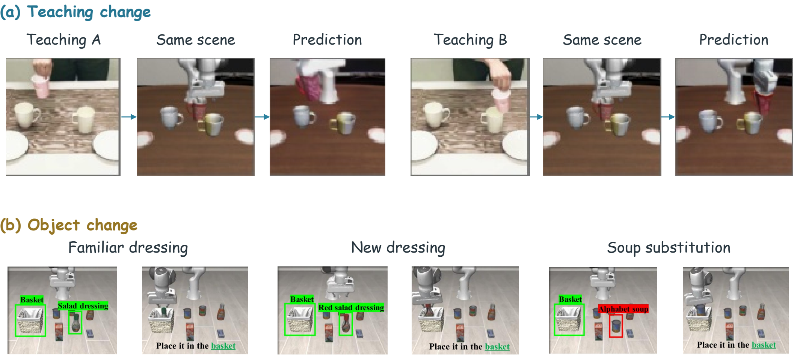
7.1 Context use and transfer across tasks and environments
Changes in tasks, objects, environments, and bodies locate transfer limits. Evidence quantity, retention distance, and distractors test access to required information.
Sensitivity to task-defining context.
Capability | Intervention | Readout | Example resources |
|---|---|---|---|
Context use | Change teaching | Task-consistent actions | |
Relation transfer | Hold out relations | Relation adherence | |
Temporal grounding | Swap event history | Target adherence | GiT [473] |
Evidence retention | Retain or clear history | Recall; memory updates | |
Correction-rule transfer | New object; prior corrections | Per-family success; repeated errors | EMem-Bench [527] |
Hidden-cue retention | Vary cue delay; reactive controls | Memory-dependent success | MIKASA-Robo-VLA [446] |
Cross-attempt reuse | Separate reset types | Gain; interference | |
Physical transfer | Change dynamics | Adaptation; goal fidelity | |
Human-data transfer | Vary human data; fix robot data | Trained-policy success | H2RBench [365] |
Scene robustness | Change scene | Target; outcome | |
Execution steering | Change command | Redirection; success | ReSteer [108] |
Physical execution | Supply target or prerequisites | Target selection; success | |
Route teaching | Change route; retain goal | Path; landmark-order adherence | |
Spatial adaptation | Change preview; reset memory | Success; route efficiency | |
Example interpretation | Change examples; retain query | Parsed subtasks; selected moves | |
Outcome reuse | Remove notes; retain retries | Repeated errors; path cost | |
Traversability | Withhold terrain feedback | Success; physical disturbance | VLM-GroNav [352] |
Composition reuse | History vs. skill summary | Graph-task success | EmbodiedCLBench [521] |
Different demonstrations in the same scene isolate teaching: changing the taught count should change the selected count, whereas changing the demonstrator should preserve it. Successful execution can conceal collapse to one demonstrated mode [515]. Measure adherence alongside completion, using meaning-changing and meaning-preserving interventions, absent context as the prior-only comparison, and a fully specified target to test executability.
Instruction tests distinguish task sensitivity from scene robustness. LIBERO varies spatial, object, goal, and procedural factors, but task-index embeddings perform well when scenes reveal task identity [228, 309]. LIBERO-CF changes feasible instructions within familiar layouts; tested VLAs often retain the scene-associated task [107]. Encoded but Not in Control finds that an alternative target can remain decodable while actions follow that association [468]. A language-transfer study makes this distinction concrete: after offline action-adapter training, high success with correct Greek instructions remains close to success with incorrect instructions in single-goal scenes; a shared-scene, multiple-goal test exposes language dependence [505]. Probes reveal representation; controlled swaps and physical adherence reveal influence. Demonstration swaps similarly change order or relations, whereas robustness tests preserve them across views, appearances, and rephrasing [106, 310]. RoboStressBench separates material, viewpoint, lighting, and geometry stresses to diagnose recognition, reasoning, and planning [376].
Show-Harness’s video supplies order absent from the no-video instruction [31]; equally informative text controls for modality. With matched task information, changing the demonstration tests example dependence, and changing a correction tests feedback use. Discovering an unfamiliar action convention requires more: without supplied conventions, the system succeeds in one of 20 episodes and infers 23.3% of mappings. Interpreting a demonstrated procedure and discovering its action interface require separate evidence.
Progress judgments also depend on context. ProgressCompass separates state recall, sequence position, and recurrence; paired interventions change a frozen model’s progress estimates [532]. SimpleMemVLA v2 masks or replaces earlier video while fixing weights, instruction, current observation, and robot state [45]. Removing a completed event changes the inferred count; replacing a cue redirects output, while irrelevant edits preserve it. TaskAnchor connects history to physical target selection: a human removes and returns a cue object, restoring a similar scene, and the robot selects the corresponding object from another row [507]. The preceding interaction determines the target despite similar current observations. Such rollouts complement inference-time interventions by testing whether recovered context reaches execution.
Figure 22 separates interpretation from realization: UniSkill’s decoded futures expose inferred skills, while LIBERO-PRO’s substitutions test target selection and execution. Both require controlled changes in supplied evidence to attribute the resulting behavior to contextual teaching.
Table 15 pairs evaluation questions with resources. RoboSPA varies spatial and procedural complexity and reports both success and progress [504]; its task-trained policies diagnose execution demands. Contextual tests additionally intervene on deployment-time teaching or retained evidence, whereas the human-data row measures transfer into trained weights, following Figure 14.
Object substitution and relation transfer. Withheld task names need not imply novel relations [227, 311]. VIMA separates combinations and templates; the Imitator Game distinguishes motion from intent [100, 101]. A familiar procedure on another body tests realization, whereas new ordering tests composition. Transfer claims must identify both the unseen relation and available motor competence.
Following Table 6, replace either or both interacting objects while preserving requirements. Compare correct, absent, and alternative demonstrations under equally informative instructions. Object changes measure substitution; demonstration changes measure teaching dependence. Separate interpretation from execution.
FUNCTO separates instance and category changes [172]; object-pair transfer changes both ends of a relation [346]. Visually dissimilar functional substitutes and similar-looking incompatible distractors test whether matching follows the taught interaction. Report training exposure, demonstration count, correspondence assistance, updates, and retries. Training novelty additionally requires known pretraining exposure.
Withholding relations isolates task novelty; substituting objects tests physical transfer. Cross-robot imitation and paired human-video interfaces also change embodiment and observation [12, 312]. Section 7.2 tests retention after the teaching reference is removed.
Paired human–robot resources separate observation from task change. RoboReel links 2,000 four-view recordings to simulated trajectories in ten environments, varying distraction and pose while preserving the demonstrated requirement [312]. H2RBench reconstructs four physical tasks in simulation and varies human-video quantity at a fixed robot-demonstration budget [365]. Its shared training protocol measures transfer into weights; fixed-policy context interventions measure the influence of new teaching.
Navigation across goals and environments. Each navigation context type in Table 13 suggests an intervention. Change the demonstrated route at a fixed destination to test path adherence; remove scene previews or cross-goal memory to test spatial evidence and reuse, as in NOLO and ReLIC [203, 350]. Replace instruction–decision examples under a fixed query to test interpretation. Remove failure notes while preserving backtracking to test feedback, as in HAM-VLN [361]. New buildings test reacquisition beyond stored locations.
Recalling a destination and recognizing arrival are separate capabilities. DroneCATS gives fixed models a prompt-defined action protocol and recent action history, distinguishing target approach from declared completion in AirSim [500]. SatNav compares history selection and compression in satellite-view navigation; adding the initial frame improves oracle arrival but not stopping success [523]. An anchor can therefore improve route evidence without resolving when to stop. Report both attainment and stopping.
Success weighted by path length (SPL) combines goal attainment and route efficiency [353]; prescribed routes additionally need adherence, since shortcuts may violate teaching. Across goals, report reuse, wrong turns, and stopping errors under shared visibility, stopping distance, action discretization, and map access. VLM-GroNav adds trajectory length and IMU energy density to capture terrain cost [352]. Include exploration and retries when measuring total interaction.
Execution settings define transfer scope. NOLO tests unseen simulated layouts but trains and collects context in its physical maze. Select2Plan combines simulated navigation with recorded-rover waypoint assessment [351]; LM-Nav executes physical routes [358]. HAM-VLN uses 100-episode unseen simulation subsets. Report these settings alongside performance.
RoboFollow supplies feasible behaviors from the demonstrated repertoire in shared scenes and separates stage-level intent from execution scores [397]. Layout and semantic recombination tests distinguish instruction grounding from physical completion. Withheld rule families test learning from new examples.
Evidence quantity, retention, and distractors. Example quantity, retention distance, and distractors test different dependencies. More expert episodes add little in LMAct [102]. EmbodiedCLBench compares full histories with skill summaries for composing unseen tasks under fixed weights; a precomputed image–action graph tests decision reuse without live dynamics, and extra examples yield no consistent gain [521]. MIKASA-Robo and RoboMME test within-task retention [103, 313]. MIKASA-Robo-VLA supplies 80 hidden-cue tasks and ten reactive controls; its reference covers 14 tasks [446]. Retention delay measures evidence-to-use time, not episode length, as AMAGO’s short-history MetaWorld case illustrates [202].
Supplying missing records localizes memory failure. MEMOBench separates storage, update, and compression [104]; WorldLines pairs Memory QA with state and precondition probes [374]; EvoEmpirBench combines spatial reasoning with Agent-ExpVer’s cross-task revision [373]. STAR’s turn-point supervision and segment preferences target cascading route errors [452]. Diagnostics test evidence use; rollouts test physical effects.
EmbodiedMemory-Bench separates recall, tracking, failure feedback, and correction-rule generalization in 2,554 simulated episodes [527]. Transferring corrections to an unseen object goes beyond recalling locations or unusable targets; per-family success and repeated errors distinguish these benefits. Its supervised EMem-8B learns memory management, then uses new evidence at evaluation.
7.2 Sources of improvement and comparable evidence
Fourteen reported comparisons (Table 16) connect context use, physical transfer, and later learning to observable outcomes. Their findings motivate controls that attribute gains to supplied evidence, parameter updates, or retained artifacts.
Study | Target | Contrast | Readout | Setting |
|---|---|---|---|---|
ICRT [13] | Training data | DROID-only / multi-task | DROID-only: no progress | Shared test tasks |
BPP [54] | Prompt | Goal image demo | Fidelity (qual.) | Unseen drawings; matched start |
LMAct [102] | Context size | episodes | Often little gain | Games; simulated control |
Show-Harness [31] | API semantics | Arbitrary names; no conventions | successes | Fixed harness |
NOLO [350] | Scene context | No video video | SR: | Habitat; 3 seeds |
MT3 [36] | Action reuse | BC
retrieval; | SR ; demos | New instances; align + interact |
Part-based transfer [346] | Warp granularity | Whole object parts |
| Mug–rack placement; assisted parts |
Demo-JEPA [22] | Action interface | Action head / planning | Known, real: head plan; unseen: plan head | Sim. + real; task-group means |
RAPID [388] | Verification | Scene variants: off on | SR: | 8 tasks; 50 scenes/task; 3 runs |
Zeva [88] | Persistent memory | Off on | SR: – pp | 5 real tasks; brief trace retained |
RTCF [195] | Memory correction | Off on | SR: | Fixed bank; 2,000 episodes/variant |
TraceFlow [390] | Trace guidance | Base guided | Ordered: ; sim. aggregate: unchanged | 1 real packing task; simulation suite |
FARE [400] | History revision | Base selective; always-search ablation | SR: ; always-search: | RoboTwin Easy; fixed checkpoint |
LMPC [117] | Successor training | Base successor | SR: | Held-out teaching tasks |
What reported comparisons establish. The first group separates evidence quantity from usefulness. ICRT links context use to within-scene task alternatives; LMAct finds little benefit from expert-episode quantity alone [13, 102]. BPP favors trajectory-defining drawings, Show-Harness exposes missing action conventions, and NOLO tests scene-preview removal [31, 54, 350]. LIBERO-Agent holds execution fixed while varying video and action context for three agents; gains depend on the agent, and trajectories do not consistently improve on video alone [443]. OpenRUA instead resets workspaces each episode, retaining API documentation and feedback but no demonstrations or prior-episode memory [461]. This tool-competence baseline supports testing the additional value of acquired guidance.
The second group tests execution interfaces. MT3 relies on alignment and replay; part-wise warping uses supplied correspondence [36, 346]. Demo-JEPA’s action-head comparison links preferred realization to task familiarity [22]; RAPID tests program verification beyond the demonstrated scene [388]. Transfer depends on the relation, correspondence assistance, motor competence, and validation conditions.
The third group separates retained experience from better learners. Zeva tests earlier interaction, RTCF and TraceFlow test trace-based correction, and FARE tests selective history revision [88, 195, 390, 400]. TraceFlow retains simulation deficits despite ordering gains; FARE’s always-search variant underperforms its base policy. LMPC instead trains a successor and tests new teaching [117]. Cumulative retry success, as in Zeva’s milestones, measures another quantity. Attribution requires matched interventions.
Controlled attribution. Table 17 separates interventions on the training checkpoint, deployment evidence, adaptive parameters, and retained artifacts. Evidence-acquisition controls additionally test how informative observations are obtained. CodeActionBench standardizes robot APIs, resource budgets, and hidden physical-outcome verification for code-as-policy agents [437]. Such controls distinguish successful tool execution from successful task completion.
Target | Intervention | Readout |
|---|---|---|
Training checkpoint | Checkpoint context | Learned context use |
Task teaching | Original replacement | Requirement adherence |
Retained history | Retain clear | Use of prior evidence |
Control intermediate | Original corrected | Intended action; success |
Neural parameters | Adapt restore | Adaptation gain |
Reusable guidance | Retain withhold | Lesson transfer |
Skill library | Expanded base | Use of new skills |
Active observation | Enabled disabled | Acquisition benefit |
Compare checkpoints under identical context interventions, then vary deployment evidence or retained artifacts. Repeated-task and transfer trials test the resulting dependence in later behavior.
Acquiring the ability to use context. Paired examples, multimodal prompts, sensorimotor streams, and corrective histories train different dependencies [1, 10, 12, 13, 100]. Compare each checkpoint under informative, absent, and meaning-swapped context. Within-checkpoint differences measure evidence use; checkpoint comparisons measure its acquisition. A fully specified task separately tests motor competence.
Using new teaching and retained observations. History and demonstrations require separate interventions. Astranomy varies observation history and video examples independently: richer history helps on its focused subset, while video demonstrations do not improve aggregate success in the separate 28-task comparison [533]. Its direct-call, persistent-agent, and orchestrated interfaces change how context reaches control. These comparisons distinguish retaining execution state from interpreting new teaching; neither benefit follows from the amount of context alone.
Changing an example under a fixed checkpoint, scene, and executor tests whether teaching changes behavior [14, 24]. Clearing history at a matched state instead tests earlier evidence. Dynamics-revealing transitions [39, 363] and remembered task events [42, 44] resolve different unknowns, as memory-focused benchmarks distinguish [103, 104]. Counterfactual Memory Audit compares histories yielding identical current inputs, controls policy-sampling randomness, and tests each selected action under both histories [383]. This separates memory-driven action changes from justified choices and physical benefits.
Adapting neural parameters. Parameter adaptation requires a matched-input comparison and a separate reset. Meta-imitation updates an initialization from demonstrations [7, 8]; fast-weight methods restrict the updated subset and timing [10, 11]. PACE’s demonstration attention also depends on transition-trained fast weights [475]. Restoring those weights separately from removing history identifies their contribution under matched tasks and inputs. SALT’s visual-corruption tests preserve task and embodiment while adapting projection scales [476]; their gains concern execution robustness rather than acquisition of a new task. Interaction and optimization costs complete the comparison.
Reusing guidance and executable skills. Artifact ablations separate retained guidance from expanded motor competence. Withholding lessons tests fresh inference [46, 47]; restoring the original library tests newly acquired routines [50, 52]. Resetting a geometric archive tests acquired references [36]. AGP reuses frozen documents from a stronger agent in a weaker one on the same assembly task [513], illustrating a retained-context intervention across models. For self-reflection systems such as RoboRSI [347], restoring prior skill versions tests the benefit of revisions. Hold task instances, executor, and attempts fixed, then test transfer to new compositions (Table B3).
Acquiring new evidence. Active acquisition tests how context is obtained. VA-Bench agents build their own demonstration summaries before issuing metric actions through a shared controller [343]; shared-summary controls separate summarization from execution. Active cameras also reach beyond the five passive views, so availability and selection are distinct factors. RoboQuest requires investigation before a SUBMIT action [489]. Its scripted oracle knows hidden specifications; evaluated agents probe them, potentially irreversibly. Match evidence and action budgets, reporting both subtask progress and strict completion.
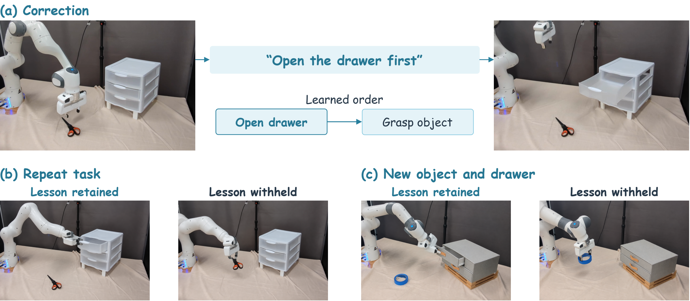
Event history can resolve targets and guide search. LTE’s Spatial Memory Benchmark tests semantic trajectory and long-horizon object retrieval from egocentric recordings [547]; correct frames and localized objects measure evidence recovery. GiT tests the subsequent control step through event-referential instructions under identical current views, comparing against a history-free physical policy [473]. Beyond the Current Scene uses prior 3D locations to initialize an occlusion belief for active grasping [519]. Its small search comparison reduces acquired views without improving already-high grasp success. Retrieval accuracy, search efficiency, and task completion measure successive parts of this path.
Matched retention and reuse tests. SEAR compares retained libraries with no-library and equal-budget restart controls, grading frozen outputs on sealed initial states [542]. Code-as-policy, live agent control, and VLA fine-tuning remain separate modes. Physical practice success exceeds success on novel scenes, and reusable routines transfer more broadly than task-specific solutions. Retention tests therefore need both matched retry budgets and an explicit distance from the practiced task.
In Figure 23, feedback teaches a robot to open a drawer before reaching for scissors [46]. Panel (a) records that constraint; (b,c) propose retaining or removing it on repeated and substituted object–drawer instances. Opening first supplies an adherence readout alongside success and further corrections. MemTransfer varies initial pose, route availability, and history relevance under a shared frozen policy [436], testing when retained knowledge applies.
Hold instructions, initial states, competence, and budgets fixed. Physical resets remove progress; equal retries control additional chances. Selective memory resets measure dependence conditional on other carriers (Figure 6; Table 17). Unknown pretraining limits claims of task novelty.
Separate play from downstream testing [52], and synthesis feedback from fresh validation [90, 218]. Reuse gains, unsuccessful trials, and human corrections together establish whether total learning effort falls.
Adherence and success across repeated trials characterize reuse; physical diagnostics locate its cause.
7.3 Physical realization and learning across attempts
Channel and intermediate interventions trace context into physical outcomes; independent physical and memory resets test later reuse.
Ablate language, vision, proprioception, or contact under a shared task, checkpoint, and history, distinguishing missing measurements from zeros. Measure adherence as well as completion: transporting a cup need not preserve its taught handle grasp.
Intermediate substitutions localize failure by supplying a relevant demonstration segment, corrected correspondence, a task-consistent future, or a correct executable specification. Preserve the interface format and measure whether actions change in the intended direction before testing completion. TRUST makes this distinction concrete: an offline-trained value estimator reweights reasoning-token candidates in a frozen VLA [456]. On 1,509 paired DeepThinkVLA LIBERO-Plus rollouts, improved reasoning accompanies essentially unchanged success (78.86% without steering versus 78.26% with it). Reasoning substitution diagnoses whether an accurate statement reaches the action decoder. Target-selection and restored-precondition tests provide related controls [109, 110]. Such interventions locate where task interpretation diverges from physical execution.
Physical adaptation requires evidence about the changed condition. MemMimic separates event recall from unknown-response adaptation; PACE-Bench varies physics under a stable goal [105, 308]. The video-generation benchmark H2R-Bench tests goal, event, contact, and embodiment consistency before execution [314]. Probe-then-commit audits distinguish action-relevant belief coverage from failure prediction [410]. Watch, Infer, Coordinate instead infers a partner’s physical constraints from joint demonstrations for CEM/MPC on new tasks [441]. Inferred, oracle, and capability-blind inputs to the same planner isolate constraint inference; behavioral cloning tests whether copying motion suffices.
Independent resets separate task continuation, retained evidence, and retry benefits.
For trial-memory adaptation, compares the same success or adherence rate at attempt with memory retained or cleared. Task distribution, physical initialization, executor, other artifacts, previous attempts, and execution budget remain fixed. Per-attempt rates isolate retention benefit; cumulative success also benefits from independent retries. A subsequent tool or dynamics change tests revision of obsolete physical knowledge. RobotUse’s playbook comparison evaluates improvement on the same development tasks [470]; held-out acquisition tests would measure transfer to newly taught procedures.
Recovery gains depend on the retry comparison. Across 3,888 paired RoboTwin episodes, learned correction of a frozen VLA improves one of four tasks by 13.5 percentage points, with no detectable gain on three [480]. On the responsive task, plain reruns recover 43.2% of base failures. Match intervention timing and continuation budgets, and report seed-cluster uncertainty; an undetected difference from scripted retreat does not establish equivalence. Report task-wide success alongside recovery among detected failures.
Failure-state initialization makes recovery comparisons reproducible. RoboRecover reconstructs deviations from action prefixes in 2,000 scenarios [398]. CARE (Corrective Atomic Robotic Execution) instead synthesizes corrections from empirical failure distributions and trains a VLA invoked by geometric monitoring [530]. FSR-Bench disables that synthesis: methods share 50 corrective trajectories per recovery type, new failure states, targets, and horizons. Matched guidance resets would separate contextual reuse from trained recovery.
7.4 Teaching effort, response delay, and reuse cost
Contextual adaptation incurs acquisition, response, and reuse costs. Acquisition includes instruction preparation, demonstrations, exploration, and validation. Its changeover time runs from receiving a specification to satisfying a shared operating criterion; labor, interaction, and resets identify the resources consumed [89]. SAIL’s reconstruction and simulated trials illustrate costs beyond inference [317]. Varying context independently of search budget separates information gains from additional computation [315, 316].
Separating preparation from execution makes these costs comparable. BiGym 2.0 coding agents use one three-view demonstration and bounded interaction to produce frozen programs without runtime LLM calls [479]. Its main nine-task comparison shares controller and observation/action interfaces with policies trained on 60 demonstrations per task. Embodiment context (Section 3.4) changes preparation costs. In iAm.md’s simulated TIAGo task, three discovery calls accompany 49 edits and 94.5 minutes to completion [510]. Reuse preserves interface knowledge while debugging and validation still consume resources. AGP conditions several efficiency measures on success [513]; Real2Gym's execution cost excludes scene construction and skill extraction [518]. RoboFoundry counts adaptation rollouts from the first scored episode [430]. Count failed attempts and amortize preparation over stated uses. InterEvolve also excludes library-building costs [440].
Response delay runs from informative feedback to the affected command. Inference is one component: SimpleMemVLA reduces it from 1.02 to 0.68 seconds without changing outputs [45]. ReSteer identifies where feedback can alter control [108]; NavGPT-3 varies execution overlap and monitor priority to separate inference cadence from trigger-to-halt latency [509]. RobotWorld and Astranomy pause simulated physics during reasoning [522, 533]. Astranomy reports inference latency and success-conditioned token costs; continuous-time deployment and all-attempt cost require different measurements. The separate CARE acceleration study pairs accelerated and reference rollouts to count newly introduced failures, using disjoint calibration and test scenes [526]. Applied to context pruning, this measures what cheaper inference loses under the evaluated task mixture. RoboDawn improves under larger command budgets in both zero- and one-shot settings [364]; demonstration effects require matched budgets. Episode totals measure cumulative cost: BiCICLe’s LiftBall uses 125.3 seconds of median LLM calls [92], while TacZero’s numerical-touch insertion averages 239 seconds waiting for APIs, 349 with motion, and 446 including overhead [477].
Reuse gains depend on recurrence and continued applicability. HumanoidTTT’s accepted-hit preparation gain becomes end-to-end on a recurrence-rich 200-request trace [449]. Misses, qualification, and retention updates belong in total cost; varying request mix and entry conditions tests whether savings persist. For active coaching, demonstration selection and the updated component are separate factors, as RoboCoach’s controlled comparisons illustrate [442]. Later-task acquisition and retained skill performance connect teaching cost to the self-improvement agenda below.
Takeaways
• Context interventions establish dependence on task-defining evidence beyond familiar-scene recognition. Physical execution and held-out relation tests then establish how far that requirement transfers.
• Common task outcomes expose the contributions of training, supplied context, adaptive neural state, and retained knowledge. Acquisition and reuse carry different resource costs.
• Teaching effort, feedback-to-action delay, and cost per accepted execution connect contextual learning to deployment value across repeated attempts.
8 Future Directions: What Limits Transfer and Improvement?
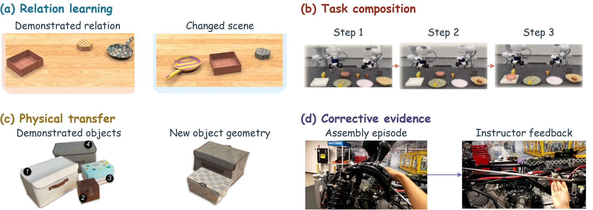
Broader contextual learning must infer unfamiliar rules, preserve binding physical constraints, revise outdated corrections, and improve subsequent learning. We connect these objectives to training, representation, and experience acquisition through behavioral tests.
8.1 From context dependence to a reusable learning rule
Section 2.1 separates familiar-task selection, composition, and unfamiliar-rule inference. Section 4.4.0.0 motivates training relationships that could generalize beyond familiar tasks.
Learning claim | What is already familiar | What the example must establish |
|---|---|---|
Familiar-task selection | Object-to-location assignments | Choose a known left- or right-bin routine |
Compositional transfer | Placement relations; order constraints | Combine familiar color and order rules |
Rule inference | Objects; executable placements | Infer an unfamiliar size-to-slot rule |
Table 18 separates familiar-task selection, composition, and unfamiliar-rule inference. Demonstration benefits under incorrect labels in NLP can reflect task-format recognition [320]; function-learning studies instead show unseen-function inference and connect its breadth to training-task diversity [253, 321]. Robotic tests can hold objects and motor skills fixed while varying what teaching establishes: a familiar bin choice, a new composition, or an excluded size-to-slot mapping. Enough examples must distinguish candidate rules. BPP’s continuous drawing and the Imitator Game’s functional substitutions provide concrete variations [54, 101].
Varying broad pretraining and grounded pairing independently, with executor and task information fixed, would separate task-relation coverage from motor coverage (Section 4.4.0.0). Further factors include relation diversity, interaction experience, model size, library size, and acquisition cost [53]. Relation-level outcomes and continuous errors complement all-steps success, whose thresholds can obscure gradual gains [323].
Cross-modal transfer tests whether an inferred rule survives a change of teaching format. GPT-Policy connects a general VLM to fixed robot tools [94]. Presenting the same unfamiliar rule through text, demonstrations, or both, with matched information and motor capabilities, separates format transfer from unequal task information.
Figure 24 makes these questions observable: (a) infer a taught relation, (b) compose dependent steps, (c) preserve function across changed geometry, and (d) use corrective feedback. Section 8.5 asks whether these operations improve subsequent learning.
8.2 Instruction tuning for more complex contextual learning
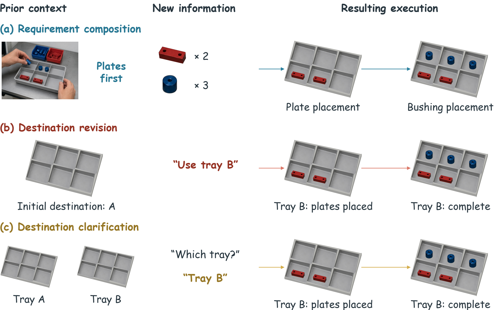
MetaICL and Flan provide precedents for example-based learning and instruction tuning [113, 324]. The robotic objective is to let new teaching select among feasible continuations within a controlled motor repertoire: combine requirements, revise them, and resolve missing information.
Figure 25 uses kitting episodes with comparable parts and skills. Paired, continuous, and corrective records (Section 4.2) supply training formats; intermediate tray states expose requirement adherence.
Requirement binding and composition. Panel (a) combines a demonstrated plate-first order with two plates and three bushings. Reversing the demonstration should reverse intermediate states while preserving inventory. Compositional complexity varies skill order and dependencies; constraint complexity adds binding counts, contacts, or dwell times. Measure individual and joint requirement satisfaction.
Selective revision of a procedure. Panel (b) changes the destination to tray B while retaining order and quantities. DROC’s guidance, RACER’s corrective supervision, and RoboTTT’s separation of failed context from corrective targets support selective revision [10, 46, 87]. Varying correction timing, scope, and precedence tests revision complexity: reaching B while losing the count is overbroad revision. Intervening tasks test whether the correction persists.
Decision-directed information acquisition. Panel (c) leaves both trays feasible but the destination unspecified. Asking resolves this ambiguity before acting, building on question-based teaching and uncertainty-aware assistance [86, 301]. The answer must preserve order and quantity. Other unknowns require a view or probe (Section 5), or motor learning when a skill is unavailable. Behavioral Exploration uses interaction history to select expert-like exploratory behaviors [332]. Training must connect each information-gathering action to the uncertainty it resolves.
Comparing action pretraining, demonstration-conditioned training, and mixed corrective training under common backbones and experience budgets would test these cases. Withheld compositions and corrections measure adherence, physical completion, and later reuse.
8.3 Preserving taught relations across physical change
Cross-object transfer requires knowing which details are binding (Section 3.5). A handleless vessel may support pouring but not a required handle grasp; an adhesive-setting pause cannot be shortened like an incidental pause. Selective invariance preserves requirements while changing permissible details. Cross-category part equivalencies supply candidate substitutions [346]; broader transfer must infer and validate them, including recognizing when no valid substitute exists.
Crossed requirement and object changes locate these limits (Section 7.1). Contrasting demonstrations or clarification establish whether a pause or contact is required; interaction reveals unfamiliar resistance or dynamics [40, 88]. Correspondence locates action; feedback tests its physical effect.
The executor limits physical transfer. Contextual inference can select a new realization within its repertoire; unsupported motion requires motor learning, as in human-video-initialized WHIRL [150]. A hybrid process can preserve a context-inferred relation while learning to realize it.
Navigation separates reusable strategy from local knowledge. Exploration can transfer across buildings; remembered locations belong to one layout. ReLIC retains local experience across goals [203]. Broader transfer must identify which spatial facts remain valid after environmental change.
8.4 Retaining teaching while revising obsolete experience
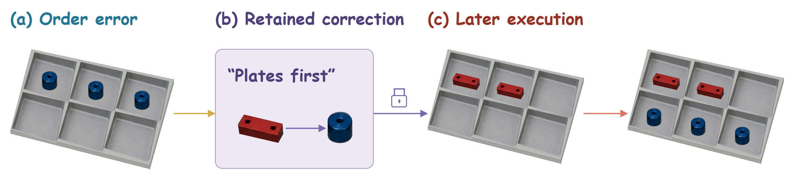
Temporal reuse must accommodate later teaching. Video outlines and planning latents retain different details [31, 325]. A correction can make a discarded contact or pause decisive. Delayed corrections, at matched storage and access costs, test whether compact summaries and retrievable source segments support reinterpretation beyond the original task.
Consolidation into weights adds training after contextual acquisition. The coaching example and the RECAP training framework for connect interaction or correction to subsequent training [273, 281]. Immediate context-driven behavior and persistence after consolidation or reset characterize different stages of acquisition. Retained programs, records, or policy weights can help later tasks, but obsolete corrections can also interfere with new teaching.
Retained plate-first feedback can guide a new kitting layout after its source scene has changed (Figure 26). Keeping, omitting, or replacing the correction tests this dependence. Comparing those interventions after compression tests whether cheaper representations preserve the lesson.
Retained context must remain compatible with both the environment and the interpreter [127]. Robo-COP’s revision after policy adoption or rollback shows how changed capabilities can invalidate earlier failure guidance [485]. This dependency extends to the demonstrated handoff states and embodiment descriptions in Section 3.4: reuse requires their conditions to remain valid for the current executor. Varying stored context and executor version independently tests that compatibility. Section 7.4 defines the cost measures.
8.5 Active coaching and physical recursive self-improvement
Active coaching selects what evidence or practice a learner needs next; physical recursive self-improvement (robot RSI) diagnoses outcomes, revises knowledge or skills, and tests the lesson on subsequent tasks. Their shared aim is a robot that becomes easier to teach and transfers what it learns, linking S4 to S5 in Figure 1.
Update target | Operation | Reusable output | Examples |
|---|---|---|---|
Interaction context | Retain | Action–effect memory | |
Executable artifacts | Revise | Skills; programs | |
Neural components | Fit; retrain | Dynamics; policy | |
Acquisition process | Select; refine | Teaching; learning strategy |
Table 19 locates these operations in context, executable artifacts, neural components, or the acquisition process. RopeFormer and Zeva-Ego retain action–response history for fixed-policy adaptation [362, 363]. Program revision changes reusable behavior; neural consolidation changes the executor. Each route contributes to robot RSI when it improves subsequent acquisition or verification.
Active coaching: choosing what to teach next. RoboCoach gives world models a teaching role: predicted failures identify which subtask demonstrations to request and which skill adapters to update [442]. Its coupling of targeted acquisition and selective adaptation motivates coaching as a research direction beyond generating additional trajectories. LoRA updates consolidate the selected teaching; an ICL-oriented coach could instead choose demonstrations, contrasts, or corrections for a fixed learner’s context. The appropriate intervention depends on whether the failure reflects missing task information or missing motor competence.
A coach must distinguish missing task information from unreliable action. EnvGen, OMNI-EPIC, and SimWorld Studio shape experience from learner performance [261, 330, 331]. WEDGE makes the intervention branch explicit: successful weakness-matched navigation trajectories become worked examples for frozen Gemini, while other agents receive reinforcement learning or fine-tuning [538]. Matched random and hard-example controls test selection. Coaching should choose clarification, examples, or motor practice according to the diagnosed limitation and expected benefit per trial.
Robot RSI: turning self-reflection into transferable capability. RoboRSI supplies a concrete mechanism for this direction. Its task–skill hierarchy assigns execution failures to responsible branches, restricts revision to those branches, and validates changes against earlier executions [347]. Stable sequences become parameterized skills. This links diagnosis to an executable change and preserves successful behavior while extending the repertoire. The strategic next step is to retain the conditions under which a repair works, so later tasks can select, adapt, or reject that lesson.
AdaRSI addresses where such revision stops being sufficient: it refines the harness first, then fine-tunes persistently failing executor skills using self-collected demonstrations [546]. Held-out adoption checks and comparisons with training every substep test whether selected updates justify their cost; a locally useful edit can still harm later scenes. Robot RSI therefore needs a decision rule for when to retain context, revise a procedure, or acquire motor competence, alongside validation of the resulting choice.
Transferable self-reflection recovers a failure’s cause. Changed objects, layouts, and skill compositions test whether a repair survives beyond its original scene; regression tests preserved competence. RoboRSI’s cumulative coverage counts tasks solved at least once, whereas repeated success and new-task acquisition measure other benefits. A 123-round discovery study illustrates how early failures starve later stages of evidence and faulty verification accepts ineffective edits [431].
Learning to become more teachable. LMPC connects accumulated teaching to subsequent acquisition [117]. Within a session, a fixed language model converts instructions and corrections into reward code for model-predictive control. Across sessions, successful interactions train it to predict teaching exchanges; the rollout variant searches for shorter exchanges. Test-task success rises from 39.4% to 66.3%, while mean turns in successful sessions fall from 2.4 to 1.9. For successors evaluated on new tasks, informative, absent, and swapped context separate improved teaching use from stronger prior execution (Section 7.2).
Verification must match the update it supervises. HarnessPAI trains actions from validated programs [396]; TraceFlow retains traces, with gains peaking before its final stacking round [390]. EVO-WAM checks imagined goal attainment and inverse-dynamics consistency before using generated prefixes for parameter updates [525]. These checks test different properties: a successful-looking video can imply actions that fail physically. REVOLVE revises both policies and supervisory judgments [344]; predictive refinement can update values, visual plans, or jointly trained models [208, 326–329]. Subsequent acquisition with earlier skills preserved tests whether these local updates advance robot RSI.
Closing the teaching–reflection loop. Reflection should select the next teaching intervention, whose outcome then tests the diagnosis. A failed insertion might need target clarification or a resistance probe; retaining which helped can reduce later teaching. Guidance [47, 49], practice [114, 141], reward and randomization design [115, 116], and experimentation [89] offer distinct updates. Robot RSI must learn when each intervention and its lesson transfer.
Collective knowledge evolution. S6 extends teaching and reflection across robots (Figure 1). A receiver realizes a taught relation under different kinematics and returns a verified correction. Progress and skill representations preserve content [29, 30, 79]; pooled learning and morphology-aware transfer support realization [57, 131–133]. New-task acquisition, repeated success, and regression measure benefit against teaching, trials, and training costs.
Takeaways
• Task-relation diversity, motor coverage, and model scale address different limits of contextual learning. New compositions test which taught requirements survive transfer.
• Active coaching selects teaching or practice for the learner’s needs. RoboCoach illustrates how prediction can guide this allocation.
• Robot RSI turns verified self-reflection into reusable capability. RoboRSI grounds this direction in scoped skill revision; the central future test is better acquisition of subsequent tasks.
9 Conclusion
ICL for robots connects reusable competence to task-specific requirements through teaching and interaction, with deployed neural parameters fixed. Four interfaces carry this evidence into action: contextual action inference, geometric reference transfer, predicted consequences, and skill or program execution. Their benefits depend on compatible representations, transferable geometry, realizable predictions, and capable executors. Correspondence and memory bind the evidence across situations and time.
Useful context must preserve the distinction that changes execution: a task requirement, an earlier event, or a physical condition. Retention alone is insufficient if evidence cannot reach a supported action or arrive in time to revise it. Across manipulation and navigation, evaluation therefore tests whether teaching redirects behavior, its requirements survive physical change, and retained knowledge benefits later attempts. Acquisition cost determines the practical value of these gains.
Two connected priorities follow: active coaching that selects informative teaching, and physical recursive self-improvement that turns verified self-reflection into transferable skills and learning strategies. RoboCoach and RoboRSI provide concrete starting points [347, 442]. Their longer-term objective is improved acquisition of new tasks, with prior capabilities preserved. Reciprocal teaching across robots extends this objective to collective knowledge evolution, measured against teaching, interaction, and training costs.
Image attribution. Figures combine original vectors, AI-assisted illustrations, and cited task imagery. AI-assisted scenes appear in Figures 1, 10, 20, 23, 25, and 26; the S6 robot illustrations in Figures 1 and 3 are original vector drawings. Source motion and task annotations are preserved.
Method imagery comes from Vid2Robot, SemAnCorr, Zero-WAM, and UniSkill [14, 24, 30, 38]. Additional examples come from ICRT, MemoryVLA, WAM-TTT, DROC, MT3, and CorrectVLA [11, 13, 36, 42, 46, 142]; research examples use VIMA, Instant Policy, and HoloAssist [16, 73, 100]. Acquisition examples use DROID, UMI, Ego2Robot, and MimicGen [58, 62, 74, 222]. Other recordings come from Galaxea Open-World [61], LIBERO-PRO [106], GPT-Policy [94], and HumanAndRobot.

Vid2Robot imagery is adapted under CC BY-SA 4.0; SemAnCorr, Zero-WAM, UniSkill, LIBERO-PRO, VIMA, Instant Policy, HoloAssist, and DROID imagery under CC BY 4.0; and Galaxea imagery under CC BY-NC-SA 4.0. Editable sources include image provenance and institution-mark sources.
References
[1] Y. Duan, M. Andrychowicz, B. C. Stadie, J. Ho, J. Schneider, I. Sutskever, et al. One-Shot Imitation Learning, 2017. https://arxiv.org/abs/1703.07326.
[2] Y. Duan, J. Schulman, X. Chen, P. L. Bartlett, I. Sutskever, and P. Abbeel. RL: Fast Reinforcement Learning via Slow Reinforcement Learning, 2016. https://arxiv.org/abs/1611.02779.
[3] N. Mishra, M. Rohaninejad, X. Chen, and P. Abbeel. A Simple Neural Attentive Meta-Learner, 2017. https://arxiv.org/abs/1707.03141.
[4] K. Rakelly, A. Zhou, D. Quillen, C. Finn, and S. Levine. Efficient Off-Policy Meta-Reinforcement Learning via Probabilistic Context Variables, 2019. https://arxiv.org/abs/1903.08254.
[5] M. Xu, Y. Shen, S. Zhang, Y. Lu, D. Zhao, J. B. Tenenbaum, et al. Prompting Decision Transformer for Few-Shot Policy Generalization, 2022. https://arxiv.org/abs/2206.13499.
[6] M. Laskin, L. Wang, J. Oh, E. Parisotto, S. Spencer, R. Steigerwald, et al. In-context Reinforcement Learning with Algorithm Distillation, 2022. https://arxiv.org/abs/2210.14215.
[7] C. Finn, T. Yu, T. Zhang, P. Abbeel, and S. Levine. One-Shot Visual Imitation Learning via Meta-Learning, 2017. https://arxiv.org/abs/1709.04905.
[8] T. Yu, C. Finn, A. Xie, S. Dasari, T. Zhang, P. Abbeel, et al. One-Shot Imitation from Observing Humans via Domain-Adaptive Meta-Learning, 2018. https://arxiv.org/abs/1802.01557.
[9] M. Van der Merwe and D. K. Jha. In-Context Iterative Policy Improvement for Dynamic Manipulation. In Conference on Robot Learning, volume 305 of Proceedings of Machine Learning Research, pages 3888–3901, 2025. https://proceedings.mlr.press/v305/merwe25a.html.
[10] Y. Jiang, Y. Chebotar, R. Zheng, F. Hu, Y. Ge, J. Wu, et al. RoboTTT: Context Scaling for Robot Policies, 2026. https://arxiv.org/abs/2607.15275.
[11] Y. Feng, B. Han, J. Lyu, K. Liu, Y. Zheng, Y. Wan, W. Liu, S. Han, R. Li, Y. Zhang, F. Liu, X. Shi, L. Liu, Y. Wang, Z. Zhang, and H. Wang. WAM-TTT: Steering World-Action Models by Watching Human Play at Test Time, 2026. https://arxiv.org/abs/2607.06988.
[12] Z. Mandi, F. Liu, K. Lee, and P. Abbeel. Towards More Generalizable One-shot Visual Imitation Learning, 2021. https://arxiv.org/abs/2110.13423.
[13] L. Fu, H. Huang, G. Datta, L. Y. Chen, W. C.-H. Panitch, F. Liu, et al. In-Context Imitation Learning via Next-Token Prediction, 2024. https://arxiv.org/abs/2408.15980.
[14] V. Jain, M. Attarian, N. J. Joshi, A. Wahid, D. Driess, Q. Vuong, et al. Vid2Robot: End-to-end Video-conditioned Policy Learning with Cross-Attention Transformers, 2024. https://arxiv.org/abs/2403.12943.
[15] N. Di Palo and E. Johns. Keypoint Action Tokens Enable In-Context Imitation Learning in Robotics, 2024. https://arxiv.org/abs/2403.19578.
[16] V. Vosylius and E. Johns. Instant Policy: In-Context Imitation Learning via Graph Diffusion, 2024. https://arxiv.org/abs/2411.12633.
[17] K. Sridhar, S. Dutta, D. Jayaraman, and I. Lee. RICL: Adding In-Context Adaptability to Pre-Trained Vision-Language-Action Models. In Proceedings of the Conference on Robot Learning, volume 305 of Proceedings of Machine Learning Research, pages 5022–5038, 2025. https://proceedings.mlr.press/v305/sridhar25a.html.
[18] S. Yang, Z. Liu, X. Li, R. Xiao, K. Zhu, and M. Li. ICI-VLA: In-Context Imitation with Spatiotemporally Aligned Demonstrations for Vision-Language-Action Models, 2026. https://arxiv.org/abs/2609.07581. Version 1, accessed 11 September 2026.
[19] Y. Mu, Y. Zhuang, F. Ni, B. Wang, J. Chen, J. Hao, and P. Luo. Decomposed mutual information optimization for generalized context in meta-reinforcement learning. In Advances in Neural Information Processing Systems, 2022. https://arxiv.org/abs/2210.04209.
[20] F. Ni, J. Hao, Y. Mu, Y. Yuan, Y. Zheng, B. Wang, and Z. Liang. Metadiffuser: Diffusion model as conditional planner for offline meta-rl. In International Conference on Machine Learning, 2023. https://proceedings.mlr.press/v202/ni23a.html.
[21] R. G. Goswami, P. Krishnamurthy, Y. LeCun, and F. Khorrami. OSVI-WM: One-Shot Visual Imitation for Unseen Tasks using World-Model-Guided Trajectory Generation, 2025. https://arxiv.org/abs/2505.20425.
[22] J. He, G. Li, J. Zhang, C. Hou, Z. Che, and S. Zhang. Demo-JEPA: Joint-Embedding Predictive Architecture for One-shot Cross-Embodiment Imitation, 2026. https://arxiv.org/abs/2605.20811.
[23] G. Chen, M. Wang, T. Cui, Z. Zhou, Q. Shao, S. Li, et al. HOST: Robots Acquire Manipulation Skills in Seconds from a Single Human Video, 2026. https://arxiv.org/abs/2607.20033.
[24] J. Zhou, Q. Zhang, G. Xu, C. Fan, Y. Zhao, R. Wang, et al. Zero-WAM: In-Context World-Action Modeling from Human Videos for Open-Ended Task Generalization, 2026. https://arxiv.org/abs/2608.26103.
[25] H. Su, Z. Liu, X. Jin, H. Dou, C. Hu, B. Li, Z. Liu, R. Xu, J. Fang, X. Zhang, Z. Yang, X. Yang, C. Gao, J. Yan, Y. Li, and W. Wu. WorldScape Policy 2.0: Empowering Steerable World Action Modeling with Reasoning-Augmented Memory, 2026. https://arxiv.org/abs/2607.18840.
[26] D. Xu, S. Nair, Y. Zhu, J. Gao, A. Garg, L. Fei-Fei, and S. Savarese. Neural Task Programming: Learning to Generalize Across Hierarchical Tasks, 2017. https://arxiv.org/abs/1710.01813.
[27] J. Liang, W. Huang, F. Xia, P. Xu, K. Hausman, B. Ichter, et al. Code as Policies: Language Model Programs for Embodied Control, 2022. https://arxiv.org/abs/2209.07753.
[28] I. Singh, V. Blukis, A. Mousavian, A. Goyal, D. Xu, J. Tremblay, D. Fox, J. Thomason, and A. Garg. ProgPrompt: Generating Situated Robot Task Plans using Large Language Models, 2022. https://arxiv.org/abs/2209.11302.
[29] M. Xu, Z. Xu, C. Chi, M. Veloso, and S. Song. XSkill: Cross Embodiment Skill Discovery. In Conference on Robot Learning, 2023. https://proceedings.mlr.press/v229/xu23a.html.
[30] H. Kim, J. Kang, H. Kang, M. Cho, S. J. Kim, and Y. Lee. UniSkill: Imitating Human Videos via Cross-Embodiment Skill Representations, 2025. https://arxiv.org/abs/2505.08787.
[31] Y. Chen, Z. Bai, Z. Cao, W. Zeng, K. Q. Lin, Y. Lin, G. Liang, K. Y. Ma, Q. Huang, and M. Z. Shou. Show-Harness: Just a VLM Agent Can Play Robots, 2026. https://arxiv.org/abs/2609.10522v1.
[32] M. Argus, L. Hermann, J. Long, and T. Brox. FlowControl: Optical Flow Based Visual Servoing. In IEEE/RSJ International Conference on Intelligent Robots and Systems, 2020. https://arxiv.org/abs/2007.00291.
[33] E. Valassakis, G. Papagiannis, N. Di Palo, and E. Johns. Demonstrate Once, Imitate Immediately (DOME): Learning Visual Servoing for One-Shot Imitation Learning. In IEEE/RSJ International Conference on Intelligent Robots and Systems, 2022. https://arxiv.org/abs/2204.02863.
[34] N. Di Palo and E. Johns. DINOBot: Robot Manipulation via Retrieval and Alignment with Vision Foundation Models. In IEEE International Conference on Robotics and Automation, 2024. https://arxiv.org/abs/2402.13181.
[35] N. Heppert, M. Argus, T. Welschehold, T. Brox, and A. Valada. DITTO: Demonstration Imitation by Trajectory Transformation. In IEEE/RSJ International Conference on Intelligent Robots and Systems, 2024. https://ditto.cs.uni-freiburg.de/.
[36] K. Dreczkowski, P. Vitiello, V. Vosylius, and E. Johns. Learning a Thousand Tasks in a Day. Science Robotics, 10:eadv7594, 2025. doi: 10.1126/scirobotics.adv7594. https://arxiv.org/abs/2511.10110.
[37] Y. Wang and E. Johns. One-Shot Dual-Arm Imitation Learning. In IEEE International Conference on Robotics and Automation, 2025. https://arxiv.org/abs/2503.06831.
[38] X. Dong, W. Baron, H. Chen, U. Yoo, J. Ichnowski, and W. Zhi. SemAnCorr: Semantic Anchored Correspondence for Zero-Shot Manipulation Skill Transfer, 2026. https://arxiv.org/abs/2607.28382.
[39] A. Kumar, Z. Fu, D. Pathak, and J. Malik. RMA: Rapid Motor Adaptation for Legged Robots, 2021. https://arxiv.org/abs/2107.04034.
[40] M. Liu, D. Pathak, and A. Agarwal. LocoFormer: Generalist Locomotion via Long-context Adaptation, 2025. https://arxiv.org/abs/2509.23745.
[41] S. Wang, J. Shi, S. Fei, Z. Fu, L. Ji, J. Gong, and X. Qiu. In-Context World Modeling for Robotic Control, 2026. https://arxiv.org/abs/2606.26025.
[42] H. Shi, B. Xie, Y. Liu, L. Sun, F. Liu, T. Wang, E. Zhou, H. Fan, X. Zhang, and G. Huang. MemoryVLA: Perceptual-Cognitive Memory in Vision-Language-Action Models for Robotic Manipulation, 2025. https://arxiv.org/abs/2508.19236.
[43] A. Sridhar, J. Pan, S. Sharma, and C. Finn. MemER: Scaling Up Memory for Robot Control via Experience Retrieval, 2025. https://arxiv.org/abs/2510.20328.
[44] M. Torne, K. Pertsch, H. Walke, K. Vedder, S. Nair, B. Ichter, A. Z. Ren, H. Wang, J. Tang, K. Stachowicz, K. Dhabalia, M. Equi, Q. Vuong, J. T. Springenberg, S. Levine, C. Finn, and D. Driess. MEM: Multi-Scale Embodied Memory for Vision Language Action Models, 2026. https://arxiv.org/abs/2603.03596.
[45] C. Yin, W. Xu, J. Yang, S. Tam, H. Liu, Y. Yao, X. Zeng, J. Cui, Y. Wang, Z. Yin, and Y. Lin. SimpleMemVLA: A Simple but Effective Native-Video Memory for Vision-Language-Action Models, 2026. https://arxiv.org/abs/2609.05533v2.
[46] L. Zha, Y. Cui, L.-H. Lin, M. Kwon, M. G. Arenas, A. Zeng, F. Xia, and D. Sadigh. Distilling and Retrieving Generalizable Knowledge for Robot Manipulation via Language Corrections, 2023. https://arxiv.org/abs/2311.10678.
[47] R. Lu, Y. Wu, E. Kou, L. Fu, W. Xiao, A. Mandlekar, Y. Xu, G. Shi, K. Goldberg, A. Chen, M. Chowdhury, Y. Zhu, L. J. Fan, and G. Wang. ASPIRE: Agentic /Skills Discovery for Robotics, 2026. https://arxiv.org/abs/2607.00272.
[48] D. Chen, A. R. Jain, E. Goossen, E. Romig, M. Murray, N. Walker, and M. Cakmak. A Few Words Go a Long Way: Language Guided Robot Policy Synthesis, 2026. https://arxiv.org/abs/2607.23784.
[49] P. Wang, Z. Ma, Y. Chang, X. Luo, Y. Zhang, Z. Wang, X. Yang, S. Feng, Y. Yang, and D. Li. Self-Evolving Embodied Agents via Skill-Harness Evolution, 2026. https://arxiv.org/abs/2608.11350.
[50] G. Tziafas and H. Kasaei. Lifelong Robot Library Learning: Bootstrapping Composable and Generalizable Skills for Embodied Control with Language Models, 2024. https://arxiv.org/abs/2406.18746.
[51] Y. Meng, Z. Sun, M. Fest, X. Li, Z. Bing, and A. Knoll. Growing with Your Embodied Agent: A Human-in-the-Loop Lifelong Code Generation Framework for Long-Horizon Manipulation Skills, 2025. https://arxiv.org/abs/2509.18597.
[52] J. Zhang, J. Ge, H. Yoo, L. Fu, Z. Yang, Y. Liu, et al. Playful Agentic Robot Learning, 2026. https://arxiv.org/abs/2606.19419.
[53] C. Nie, Z. Liu, and H. Wang. Teach and Grow: An Agent-Centered Architecture for General Robot Learning, 2026. https://arxiv.org/abs/2608.17209.
[54] A. Patel, B. Pekarek, J. E. C. Hernandez, and S. Song. What Enables In-Context Behavior Prompting for Manipulation?, 2026. https://arxiv.org/abs/2606.30457.
[55] J. Ding, X. Dai, R. Herzig, N. Hroub, J. Mai, D. Dai, B. Ghanem, and M. Elhoseiny. ContextFlow: In-Context Flow Matching for Robot Manipulation, 2026. https://arxiv.org/abs/2609.06852v1.
[56] H. Walke, K. Black, A. Lee, M. J. Kim, M. Du, C. Zheng, T. Zhao, P. Hansen-Estruch, Q. Vuong, A. He, V. Myers, K. Fang, C. Finn, and S. Levine. BridgeData V2: A Dataset for Robot Learning at Scale, 2023. https://arxiv.org/abs/2308.12952.
[57] Open X-Embodiment Collaboration. Open X-Embodiment: Robotic Learning Datasets and RT-X Models, 2023. https://arxiv.org/abs/2310.08864.
[58] A. Khazatsky, K. Pertsch, S. Nair, A. Balakrishna, S. Dasari, S. Karamcheti, et al. DROID: A Large-Scale In-The-Wild Robot Manipulation Dataset, 2024. https://arxiv.org/abs/2403.12945.
[59] H.-S. Fang, H. Fang, Z. Tang, J. Liu, C. Wang, J. Wang, et al. RH20T: A Comprehensive Robotic Dataset for Learning Diverse Skills in One-Shot, 2023. https://arxiv.org/abs/2307.00595.
[60] AgiBot-World-Contributors. AgiBot World Colosseo: A Large-scale Manipulation Platform for Scalable and Intelligent Embodied Systems, 2025. https://arxiv.org/abs/2503.06669.
[61] T. Jiang, T. Yuan, Y. Liu, C. Lu, J. Cui, X. Liu, S. Cheng, J. Gao, H. Xu, and H. Zhao. Galaxea Open-World Dataset and G0 Dual-System VLA Model, 2025. https://arxiv.org/abs/2509.00576.
[62] C. Chi, Z. Xu, C. Pan, E. Cousineau, B. Burchfiel, S. Feng, et al. Universal Manipulation Interface: In-The-Wild Robot Teaching Without In-The-Wild Robots, 2024. https://arxiv.org/abs/2402.10329.
[63] Y. Liu, Y. Liu, C. Jiang, K. Lyu, W. Wan, H. Shen, B. Liang, Z. Fu, H. Wang, and L. Yi. HOI4D: A 4D Egocentric Dataset for Category-Level Human-Object Interaction, 2022. https://arxiv.org/abs/2203.01577.
[64] P. Banerjee, S. Shkodrani, P. Moulon, S. Hampali, S. Han, F. Zhang, L. Zhang, J. Fountain, E. Miller, S. Basol, R. Newcombe, R. Wang, J. J. Engel, and T. Hodan. HOT3D: Hand and Object Tracking in 3D from Egocentric Multi-View Videos, 2024. https://arxiv.org/abs/2411.19167.
[65] R. Hoque, P. Huang, D. J. Yoon, M. Sivapurapu, and J. Zhang. EgoDex: Learning Dexterous Manipulation from Large-Scale Egocentric Video, 2025. https://arxiv.org/abs/2505.11709.
[66] T. Ohkawa, J. Arima, Y. Noguchi, M. Tateno, M. Sugiura, T. Okubo, K. Ikeuchi, Y. Shin, H. Nishizawa, N. Kanazawa, Y. Wakayama, D. Fukunaga, K. Makihara, T. Motoda, F. Erich, Y. Domae, T. Matsushima, Y. Okumatsu, and K. Ota. YUBI: Yielding Universal Bidigital Interface for Bimanual Dexterous Manipulation at Scale, 2026. https://arxiv.org/abs/2606.10244.
[67] R. Zheng, D. Niu, Y. Xie, J. Wang, M. Xu, Y. Jiang, F. Castañeda, F. Hu, Y. L. Tan, L. Fu, T. Darrell, F. Huang, Y. Zhu, D. Xu, and L. Fan. EgoScale: Scaling Dexterous Manipulation with Diverse Egocentric Human Data, 2026. https://arxiv.org/abs/2602.16710.
[68] K. Grauman, A. Westbury, E. Byrne, Z. Chavis, A. Furnari, R. Girdhar, J. Hamburger, H. Jiang, M. Liu, X. Liu, M. Martin, T. Nagarajan, I. Radosavovic, S. K. Ramakrishnan, F. Ryan, J. Sharma, M. Wray, M. Xu, E. Z. Xu, C. Zhao, S. Bansal, D. Batra, V. Cartillier, S. Crane, T. Do, M. Doulaty, A. Erapalli, C. Feichtenhofer, A. Fragomeni, Q. Fu, A. Gebreselasie, C. Gonzalez, J. Hillis, X. Huang, Y. Huang, W. Jia, W. Khoo, J. Kolar, S. Kottur, A. Kumar, F. Landini, C. Li, Y. Li, Z. Li, K. Mangalam, R. Modhugu, J. Munro, T. Murrell, T. Nishiyasu, W. Price, P. R. Puentes, M. Ramazanova, L. Sari, K. Somasundaram, A. Southerland, Y. Sugano, R. Tao, M. Vo, Y. Wang, X. Wu, T. Yagi, Z. Zhao, Y. Zhu, P. Arbelaez, D. Crandall, D. Damen, G. M. Farinella, C. Fuegen, B. Ghanem, V. K. Ithapu, C. V. Jawahar, H. Joo, K. Kitani, H. Li, R. Newcombe, A. Oliva, H. S. Park, J. M. Rehg, Y. Sato, J. Shi, M. Z. Shou, A. Torralba, L. Torresani, M. Yan, and J. Malik. Ego4D: Around the World in 3,000 Hours of Egocentric Video, 2021. https://arxiv.org/abs/2110.07058.
[69] D. Damen, H. Doughty, G. M. Farinella, A. Furnari, E. Kazakos, J. Ma, D. Moltisanti, J. Munro, T. Perrett, W. Price, and M. Wray. Rescaling Egocentric Vision, 2020. https://arxiv.org/abs/2006.13256.
[70] K. Grauman, A. Westbury, L. Torresani, K. Kitani, J. Malik, T. Afouras, K. Ashutosh, V. Baiyya, S. Bansal, B. Boote, E. Byrne, Z. Chavis, J. Chen, F. Cheng, F.-J. Chu, S. Crane, A. Dasgupta, J. Dong, M. Escobar, C. Forigua, A. Gebreselasie, S. Haresh, J. Huang, M. M. Islam, S. Jain, R. Khirodkar, D. Kukreja, K. J. Liang, J.-W. Liu, S. Majumder, Y. Mao, M. Martin, E. Mavroudi, T. Nagarajan, F. Ragusa, S. K. Ramakrishnan, L. Seminara, A. Somayazulu, Y. Song, S. Su, Z. Xue, E. Zhang, J. Zhang, A. Castillo, C. Chen, X. Fu, R. Furuta, C. Gonzalez, P. Gupta, J. Hu, Y. Huang, Y. Huang, W. Khoo, A. Kumar, R. Kuo, S. Lakhavani, M. Liu, M. Luo, Z. Luo, B. Meredith, A. Miller, O. Oguntola, X. Pan, P. Peng, S. Pramanick, M. Ramazanova, F. Ryan, W. Shan, K. Somasundaram, C. Song, A. Southerland, M. Tateno, H. Wang, Y. Wang, T. Yagi, M. Yan, X. Yang, Z. Yu, S. C. Zha, C. Zhao, Z. Zhao, Z. Zhu, J. Zhuo, P. Arbelaez, G. Bertasius, D. Crandall, D. Damen, J. Engel, G. M. Farinella, A. Furnari, B. Ghanem, J. Hoffman, C. V. Jawahar, R. Newcombe, H. S. Park, J. M. Rehg, Y. Sato, M. Savva, J. Shi, M. Z. Shou, and M. Wray. Ego-Exo4D: Understanding Skilled Human Activity from First- and Third-Person Perspectives, 2023. https://arxiv.org/abs/2311.18259.
[71] R. Goyal, S. E. Kahou, V. Michalski, J. Materzyńska, S. Westphal, H. Kim, V. Haenel, I. Fruend, P. Yianilos, M. Mueller-Freitag, F. Hoppe, C. Thurau, I. Bax, and R. Memisevic. The "something something" video database for learning and evaluating visual common sense, 2017. https://arxiv.org/abs/1706.04261.
[72] F. Sener, D. Chatterjee, D. Shelepov, K. He, D. Singhania, R. Wang, and A. Yao. Assembly101: A Large-Scale Multi-View Video Dataset for Understanding Procedural Activities, 2022. https://arxiv.org/abs/2203.14712.
[73] X. Wang, T. Kwon, M. Rad, B. Pan, I. Chakraborty, S. Andrist, D. Bohus, A. Feniello, B. Tekin, F. V. Frujeri, N. Joshi, and M. Pollefeys. HoloAssist: an Egocentric Human Interaction Dataset for Interactive AI Assistants in the Real World, 2023. https://arxiv.org/abs/2309.17024.
[74] A. Mandlekar, S. Nasiriany, B. Wen, I. Akinola, Y. Narang, L. Fan, Y. Zhu, and D. Fox. MimicGen: A Data Generation System for Scalable Robot Learning using Human Demonstrations, 2023. https://arxiv.org/abs/2310.17596.
[75] S. Nasiriany, A. Maddukuri, L. Zhang, A. Parikh, A. Lo, A. Joshi, A. Mandlekar, and Y. Zhu. RoboCasa: Large-Scale Simulation of Everyday Tasks for Generalist Robots, 2024. https://arxiv.org/abs/2406.02523.
[76] M. Ahn, D. Dwibedi, C. Finn, M. G. Arenas, K. Gopalakrishnan, K. Hausman, B. Ichter, A. Irpan, N. Joshi, R. Julian, S. Kirmani, I. Leal, E. Lee, S. Levine, Y. Lu, I. Leal, S. Maddineni, K. Rao, D. Sadigh, P. Sanketi, P. Sermanet, Q. Vuong, S. Welker, F. Xia, T. Xiao, P. Xu, S. Xu, and Z. Xu. AutoRT: Embodied Foundation Models for Large Scale Orchestration of Robotic Agents, 2024. https://arxiv.org/abs/2401.12963.
[77] C. Qian, R. Fan, Y. Ren, Y. Wang, and E. Johns. SynthICL: Scalable In-context Imitation Learning with Synthetic Data, 2026. https://arxiv.org/abs/2606.08154.
[78] P. Sermanet, C. Lynch, Y. Chebotar, J. Hsu, E. Jang, S. Schaal, and S. Levine. Time-Contrastive Networks: Self-Supervised Learning from Video, 2017. https://arxiv.org/abs/1704.06888.
[79] K. Zakka, A. Zeng, P. Florence, J. Tompson, J. Bohg, and D. Dwibedi. XIRL: Cross-embodiment Inverse Reinforcement Learning, 2021. https://arxiv.org/abs/2106.03911.
[80] K. Kedia, P. Dan, A. Chao, M. A. Pace, and S. Choudhury. One-Shot Imitation under Mismatched Execution, 2024. https://arxiv.org/abs/2409.06615.
[81] C. Agia, R. Sinha, J. Yang, Z.-a. Cao, R. Antonova, M. Pavone, and J. Bohg. Unpacking Failure Modes of Generative Policies: Runtime Monitoring of Consistency and Progress, 2024. https://arxiv.org/abs/2410.04640.
[82] C. Xu, T. K. Nguyen, E. Dixon, C. Rodriguez, P. Miller, R. Lee, P. Shah, R. Ambrus, H. Nishimura, and M. Itkina. Can We Detect Failures Without Failure Data? Uncertainty-Aware Runtime Failure Detection for Imitation Learning Policies, 2025. https://arxiv.org/abs/2503.08558.
[83] Y. J. Ma, J. Hejna, A. Wahid, C. Fu, D. Shah, J. Liang, Z. Xu, S. Kirmani, P. Xu, D. Driess, T. Xiao, J. Tompson, O. Bastani, D. Jayaraman, W. Yu, T. Zhang, D. Sadigh, and F. Xia. Vision Language Models are In-Context Value Learners, 2024. https://arxiv.org/abs/2411.04549.
[84] Z. Liu, A. Bahety, and S. Song. REFLECT: Summarizing Robot Experiences for Failure Explanation and Correction, 2023. https://arxiv.org/abs/2306.15724.
[85] J. Duan, W. Pumacay, N. Kumar, Y. R. Wang, S. Tian, W. Yuan, R. Krishna, D. Fox, A. Mandlekar, and Y. Guo. AHA: A Vision-Language-Model for Detecting and Reasoning Over Failures in Robotic Manipulation, 2024. https://arxiv.org/abs/2410.00371.
[86] A. Z. Ren, A. Dixit, A. Bodrova, S. Singh, S. Tu, N. Brown, P. Xu, L. Takayama, F. Xia, J. Varley, Z. Xu, D. Sadigh, A. Zeng, and A. Majumdar. Robots That Ask For Help: Uncertainty Alignment for Large Language Model Planners, 2023. https://arxiv.org/abs/2307.01928.
[87] Y. Dai, J. Lee, N. Fazeli, and J. Chai. RACER: Rich Language-Guided Failure Recovery Policies for Imitation Learning, 2024. https://arxiv.org/abs/2409.14674.
[88] F. Chen, X. Ding, B. Huang, X. Li, M. Wang, J. He, et al. Zeva: In-Context Causal Learning for Generalizable Embodied Manipulation, 2026. https://arxiv.org/abs/2608.30880.
[89] W. Xiao, J. Xie, T. Zhang, H. Lin, L. Fu, H. Xue, J. Lu, Y. Yang, C. Dai, Z. Wang, J. Wu, G. Wang, S. S. Sastry, K. Goldberg, L. Fan, Y. Zhu, and G. Shi. ENPIRE: Agentic Robot Policy Self-Improvement in the Real World, 2026. https://arxiv.org/abs/2606.19980v1.
[90] X. Ding, L. Mi, M. Huang, Z. Wang, C. Zhang, Z. Hao, et al. Zetta : An Efficient Closed-Loop Embodied Harness for Self-Evolving Physical Intelligence, 2026. https://arxiv.org/abs/2608.16590.
[91] Y. Wang, C. Qian, and E. Johns. Instant-Fold: In-Context Imitation Learning for Deformable Object Manipulation, 2026. https://arxiv.org/abs/2606.04269.
[92] A. Palma, I. Spinelli, V. Prasad, L. Scofano, Y. Jin, G. Chalvatzaki, and F. Galasso. Bimanual Robot Manipulation via Multi-Agent In-Context Learning, 2026. https://arxiv.org/abs/2604.20348.
[93] Z. Chen, C. Gao, L. Shao, J. Shi, J. Huo, and Y. Gao. ManiLong-Shot: Interaction-Aware One-Shot Imitation Learning for Long-Horizon Manipulation. In AAAI Conference on Artificial Intelligence, 2026. https://ojs.aaai.org/index.php/AAAI/article/view/38881.
[94] D. Cheng, T. Yi, Y. Fang, X. Zhang, F. Feng, Y. Li, G. Zhuang, R. Wang, S. Yang, W. Song, W. Xue, M. Wu, J. Gui, J. Wang, and T. Wu. In-context robot learning with vlm agents, 2026. https://arxiv.org/abs/2609.19138. GPT-Policy; first submitted 16 September 2026.
[95] Z. Tang, S. Chen, S. Zhang, P. Yang, Y. Liu, W. Zhao, et al. LabDex: A Hierarchical Benchmark for Dexterous Manipulation in Laboratories, 2026. https://arxiv.org/abs/2608.18618.
[96] Y. Tang, W. Yu, J. Tan, H. Zen, A. Faust, and T. Harada. SayTap: Language to Quadrupedal Locomotion, 2023. https://arxiv.org/abs/2306.07580.
[97] K. Wu, H. Chen, J. Han, H. Liu, C. Wang, Y. Wang, Z. Li, S. Liu, and F. Zhong. AdaTracker: Learning Adaptive In-Context Policy for Cross-Embodiment Active Visual Tracking. IEEE Robotics and Automation Letters, 2026. doi: 10.1109/LRA.2026.3692075. https://arxiv.org/abs/2604.20305.
[98] Generalist Team. GEN-1.5: Embodied Foundation Models are One-Shot Learners. Generalist AI Blog, August 19, 2026. https://generalistai.com/blog/gen-1.5. Accessed September 19, 2026. Industrial technical report.
[99] Skild AI. Introducing S1: In-Context Learning for Robotics. Skild AI official blog, 2026. https://www.skild.ai/blogs/s1. Accessed September 19, 2026. Industrial technical report.
[100] Y. Jiang, A. Gupta, Z. Zhang, G. Wang, Y. Dou, Y. Chen, et al. VIMA: General Robot Manipulation with Multimodal Prompts, 2022. https://arxiv.org/abs/2210.03094.
[101] X. Zhou, Y. Cai, F. Wang, R. Ju, H. Ren, R. Liu, et al. The Imitator Game: Benchmarking Robot Imitative Ability Beyond Action Prediction, 2026. https://arxiv.org/abs/2608.22301.
[102] A. Ruoss, F. Pardo, H. Chan, B. Li, V. Mnih, and T. Genewein. LMAct: A benchmark for in-context imitation learning with long multimodal demonstrations. In Proceedings of the 42nd International Conference on Machine Learning, volume 267 of Proceedings of Machine Learning Research, pages 52303–52344, 2025. https://proceedings.mlr.press/v267/ruoss25a.html.
[103] Y. Dai, H. Fu, J. Lee, Y. Liu, H. Zhang, J. Yang, C. Finn, N. Fazeli, and J. Chai. RoboMME: Benchmarking and understanding memory for robotic generalist policies, 2026. https://arxiv.org/abs/2603.04639.
[104] H. Sun, H. Wang, J. Chen, W. Fang, Z. Su, J. Yi, W. Yi, H. Chen, and Z. Zhao. MEMOBench: A Process Level Memory Benchmark for Robotic Manipulation, 2026. https://arxiv.org/abs/2609.07047. Version 1, accessed 11 September 2026.
[105] Y. Gao, J. J. Liu, S. Li, and S. Song. Gated Memory Policy: In-Context Memorization and Adaptation, 2026. https://arxiv.org/abs/2604.18933.
[106] X. Zhou, Y. Xu, G. Tie, Y. Chen, G. Zhang, D. Chu, P. Zhou, and L. Sun. LIBERO-PRO: Towards robust and fair evaluation of vision-language-action models beyond memorization, 2025. https://arxiv.org/abs/2510.03827.
[107] Y. Fang, Y. Feng, D. Jing, J. Liu, Y. Yang, Z. Wei, D. Szafir, and M. Ding. When Vision Overrides Language: Evaluating and Mitigating Counterfactual Failures in VLAs, 2026. https://arxiv.org/abs/2602.17659.
[108] Z. Chen, A. Tian, L. Wang, B. Joffe, Y. C. Lin, Y. Chen, S. Karamcheti, and D. Xu. ReSteer: Quantifying and Refining the Steerability of Multitask Robot Policies, 2026. https://arxiv.org/abs/2603.17300.
[109] B. Yu, Y. Zhang, H. Liu, S. Lian, Y. Wei, X. Lin, Z. Shen, C. Wu, R. Hu, B. Wang, C. Huang, and K. Chen. RoboSemanticBench: Diagnosing Semantic Grounding in Action Prediction for VLA Models, 2026. https://arxiv.org/abs/2606.02277.
[110] C. Ma, L. Luo, X. Luo, X. Feng, H. Zhang, W. Liu, et al. Behavior-Skill: A Fine-Grained Benchmark for Evaluating Vision-Language-Action Policies in Long-Horizon Tasks, 2026. https://arxiv.org/abs/2608.30536.
[111] S. C. Y. Chan, A. Santoro, A. K. Lampinen, J. X. Wang, A. Singh, P. H. Richemond, J. McClelland, and F. Hill. Data distributional properties drive emergent in-context learning in transformers, 2022. https://arxiv.org/abs/2205.05055.
[112] J. Von Oswald, E. Niklasson, E. Randazzo, J. Sacramento, A. Mordvintsev, A. Zhmoginov, and M. Vladymyrov. Transformers Learn In-Context by Gradient Descent. In International Conference on Machine Learning, volume 202 of Proceedings of Machine Learning Research, pages 35151–35174, 2023. https://proceedings.mlr.press/v202/von-oswald23a.html.
[113] S. Min, M. Lewis, L. Zettlemoyer, and H. Hajishirzi. MetaICL: Learning to Learn In Context. In Proceedings of NAACL-HLT, 2022. https://arxiv.org/abs/2110.15943v2.
[114] K. Bousmalis, G. Vezzani, D. Rao, C. Devin, A. X. Lee, M. Bauza, T. Davchev, Y. Zhou, A. Gupta, A. Raju, A. Laurens, C. Fantacci, V. Dalibard, M. Zambelli, M. Martins, R. Pevceviciute, M. Blokzijl, M. Denil, N. Batchelor, T. Lampe, E. Parisotto, K. Żołna, S. Reed, S. G. Colmenarejo, J. Scholz, A. Abdolmaleki, O. Groth, J.-B. Regli, O. Sushkov, T. Rothörl, J. E. Chen, Y. Aytar, D. Barker, J. Ortiz, M. Riedmiller, J. T. Springenberg, R. Hadsell, F. Nori, and N. Heess. RoboCat: A Self-Improving Generalist Agent for Robotic Manipulation, 2023. https://arxiv.org/abs/2306.11706.
[115] Y. J. Ma, W. Liang, G. Wang, D.-A. Huang, O. Bastani, D. Jayaraman, Y. Zhu, L. Fan, and A. Anandkumar. Eureka: Human-Level Reward Design via Coding Large Language Models, 2023. https://arxiv.org/abs/2310.12931.
[116] Y. J. Ma, W. Liang, H.-J. Wang, S. Wang, Y. Zhu, L. Fan, O. Bastani, and D. Jayaraman. DrEureka: Language Model Guided Sim-To-Real Transfer, 2024. https://arxiv.org/abs/2406.01967.
[117] J. Liang, F. Xia, W. Yu, A. Zeng, M. G. Arenas, M. Attarian, M. Bauza, M. Bennice, A. Bewley, A. Dostmohamed, C. K. Fu, N. Gileadi, M. Giustina, K. Gopalakrishnan, L. Hasenclever, J. Humplik, J. Hsu, N. Joshi, B. Jyenis, C. Kew, S. Kirmani, T.-W. E. Lee, K.-H. Lee, A. H. Michaely, J. Moore, K. Oslund, D. Rao, A. Ren, B. Tabanpour, Q. Vuong, A. Wahid, T. Xiao, Y. Xu, V. Zhuang, P. Xu, E. Frey, K. Caluwaerts, T. Zhang, B. Ichter, J. Tompson, L. Takayama, V. Vanhoucke, I. Shafran, M. Mataric, D. Sadigh, N. Heess, K. Rao, N. Stewart, J. Tan, and C. Parada. Learning to Learn Faster from Human Feedback with Language Model Predictive Control, 2024. https://arxiv.org/abs/2402.11450.
[118] M. J. Kim, K. Pertsch, S. Karamcheti, T. Xiao, A. Balakrishna, S. Nair, R. Rafailov, E. Foster, G. Lam, P. Sanketi, Q. Vuong, T. Kollar, B. Burchfiel, R. Tedrake, D. Sadigh, S. Levine, P. Liang, and C. Finn. OpenVLA: An Open-Source Vision-Language-Action Model, 2024. https://arxiv.org/abs/2406.09246.
[119] K. Black, N. Brown, D. Driess, A. Esmail, M. Equi, C. Finn, N. Fusai, L. Groom, K. Hausman, B. Ichter, S. Jakubczak, T. Jones, L. Ke, S. Levine, A. Li-Bell, M. Mothukuri, S. Nair, K. Pertsch, L. X. Shi, J. Tanner, Q. Vuong, A. Walling, H. Wang, and U. Zhilinsky. : A Vision-Language-Action Flow Model for General Robot Control, 2024. https://arxiv.org/abs/2410.24164.
[120] NVIDIA, J. Bjorck, F. Castañeda, N. Cherniadev, X. Da, R. Ding, L. J. Fan, Y. Fang, D. Fox, F. Hu, S. Huang, J. Jang, Z. Jiang, J. Kautz, K. Kundalia, L. Lao, Z. Li, Z. Lin, K. Lin, G. Liu, E. Llontop, L. Magne, A. Mandlekar, A. Narayan, S. Nasiriany, S. Reed, Y. L. Tan, G. Wang, Z. Wang, J. Wang, Q. Wang, J. Xiang, Y. Xie, Y. Xu, Z. Xu, S. Ye, Z. Yu, A. Zhang, H. Zhang, Y. Zhao, R. Zheng, and Y. Zhu. GR00T N1: An Open Foundation Model for Generalist Humanoid Robots, 2025. https://arxiv.org/abs/2503.14734.
[121] T. B. Brown, B. Mann, N. Ryder, M. Subbiah, J. Kaplan, P. Dhariwal, A. Neelakantan, P. Shyam, G. Sastry, A. Askell, S. Agarwal, A. Herbert-Voss, G. Krueger, T. Henighan, R. Child, A. Ramesh, D. M. Ziegler, J. Wu, C. Winter, C. Hesse, M. Chen, E. Sigler, M. Litwin, S. Gray, B. Chess, J. Clark, C. Berner, S. McCandlish, A. Radford, I. Sutskever, and D. Amodei. Language models are few-shot learners, 2020. https://arxiv.org/abs/2005.14165.
[122] B. D. Argall, S. Chernova, M. Veloso, and B. Browning. A Survey of Robot Learning from Demonstration. Robotics and Autonomous Systems, 2009. doi: 10.1016/j.robot.2008.10.024. https://publications.ri.cmu.edu/a-survey-of-robot-learning-from-demonstration.
[123] H. Ravichandar, A. S. Polydoros, S. Chernova, and A. Billard. Recent Advances in Robot Learning from Demonstration. Annual Review of Control, Robotics, and Autonomous Systems, 2020. doi: 10.1146/annurev-control-100819-063206. https://www.annualreviews.org/content/journals/10.1146/annurev-control-100819-063206.
[124] Q. Dong, L. Li, D. Dai, C. Zheng, J. Ma, R. Li, H. Xia, J. Xu, Z. Wu, B. Chang, X. Sun, L. Li, and Z. Sui. A Survey on In-context Learning. In Conference on Empirical Methods in Natural Language Processing, pages 1107–1128, 2024. doi: 10.18653/v1/2024.emnlp-main. 64. https://aclanthology.org/2024.emnlp-main.64/.
[125] A. Moeini, J. Wang, J. Beck, E. Blaser, S. Whiteson, R. Chandra, et al. A Survey of In-Context Reinforcement Learning, 2025. https://arxiv.org/abs/2502.07978.
[126] J. Ma, E. Zhang, H. Yang, D. Li, C. Xu, G. Wang, et al. Robot Learning from Human Videos: A Survey, 2026. https://arxiv.org/abs/2604.27621.
[127] A. Run and Z. Ding. In-Context Reinforcement Learning under Non-Stationarity: A Survey, 2026. https://arxiv.org/abs/2607.11906.
[128] B. Hou, G. Li, J. Jia, T. An, X. Guo, S. Leng, H. Geng, Y. Ze, T. Harada, P. Torr, O. Mees, M. Pollefeys, Z. Liu, J. Wu, P. Abbeel, J. Malik, Y. Du, and J. Yang. World Model for Robot Learning: A Comprehensive Survey, 2026. https://arxiv.org/abs/2605.00080.
[129] Z. Wang, B. Wang, H. Zhang, T. Du, T. Chen, G. Sun, Y. He, Z. Shen, W. Ye, and A. Li. Vision-Language-Action in Robotics: A Survey of Datasets, Benchmarks, and Data Engines. Transactions on Machine Learning Research, 2026. https://arxiv.org/abs/2604.23001.
[130] Y. Domae, K. Shirai, H. Oh, R. Nakajo, T. Motoda, K. Makihara, M. Murooka, T. Yagi, Y. Bando, and R. Hanai. The Embodiment Gap in Robot Foundation Models. Transactions on Machine Learning Research, 2026. https://arxiv.org/abs/2608.18433.
[131] X. Liu, D. Pathak, and K. Kitani. REvolveR: Continuous Evolutionary Models for Robot-to-robot Policy Transfer. In Proceedings of the 39th International Conference on Machine Learning, volume 162 of Proceedings of Machine Learning Research, pages 13995–14007, 2022. https://proceedings.mlr.press/v162/liu22p.html.
[132] R. Doshi, H. Walke, O. Mees, S. Dasari, and S. Levine. Scaling Cross-Embodied Learning: One Policy for Manipulation, Navigation, Locomotion and Aviation, 2024. https://arxiv.org/abs/2408.11812.
[133] S. Gupta, D. H. Salunkhe, and A. Billard. Demonstrate once, execute on many: Kinematic intelligence for cross-robot skill transfer. Science Robotics, 11(113):eaea1995, 2026. doi: 10.1126/scirobotics. aea1995. https://doi.org/10.1126/scirobotics.aea1995.
[134] R. E. Fikes and N. J. Nilsson. STRIPS: A New Approach to the Application of Theorem Proving to Problem Solving. Artificial Intelligence, 2(3–4):189–208, 1971. doi: 10.1016/0004-3702(71)90010-5. https://www.sciencedirect.com/science/article/pii/0004370271900105.
[135] R. A. Brooks. A Robust Layered Control System for a Mobile Robot. Technical Report A.I. Memo 864, Massachusetts Institute of Technology, Artificial Intelligence Laboratory, 1985. https://people.csail.mit.edu/brooks/papers/AIM-864.pdf.
[136] O. Khatib. A Unified Approach for Motion and Force Control of Robot Manipulators: The Operational Space Formulation. IEEE Journal on Robotics and Automation, 3(1):43–53, 1987. doi: 10.1109/JRA.1987.1087068. https://khatib.stanford.edu/publications/pdfs/Khatib_1987_RA.pdf.
[137] L. P. Kaelbling and T. Lozano-Pérez. Hierarchical Task and Motion Planning in the Now. In IEEE International Conference on Robotics and Automation, pages 1470–1477, 2011. doi: 10.1109/ICRA.2011.5980391. https://people.csail.mit.edu/tlp/pdf/2011/hpnICRA11Final.pdf.
[138] A. Marzinotto, M. Colledanchise, C. Smith, and P. Ögren. Towards a Unified Behavior Trees Framework for Robot Control. In IEEE International Conference on Robotics and Automation, 2014. https://www.csc.kth.se/~ccs/Publications/icra14b.html.
[139] S. Levine, C. Finn, T. Darrell, and P. Abbeel. End-to-End Training of Deep Visuomotor Policies, 2015. https://arxiv.org/abs/1504.00702.
[140] D. Kalashnikov, A. Irpan, P. Pastor, J. Ibarz, A. Herzog, E. Jang, D. Quillen, E. Holly, M. Kalakrishnan, V. Vanhoucke, and S. Levine. QT-Opt: Scalable Deep Reinforcement Learning for Vision-Based Robotic Manipulation, 2018. https://arxiv.org/abs/1806.10293.
[141] A. Sharma, A. M. Ahmed, R. Ahmad, and C. Finn. Self-Improving Robots: End-to-End Autonomous Visuomotor Reinforcement Learning, 2023. https://arxiv.org/abs/2303.01488.
[142] O. Kwon, P. Ortega-Kral, A. Bucker, and J. Oh. Training-Free Action Correction for VLA Model Failures via Language Feedback, 2026. https://arxiv.org/abs/2608.29967.
[143] T. Lesort, V. Lomonaco, A. Stoian, D. Maltoni, D. Filliat, and N. Díaz-Rodríguez. Continual Learning for Robotics: Definition, Framework, Learning Strategies, Opportunities and Challenges, 2019. https://arxiv.org/abs/1907.00182.
[144] T. Hospedales, A. Antoniou, P. Micaelli, and A. Storkey. Meta-Learning in Neural Networks: A Survey. IEEE Transactions on Pattern Analysis and Machine Intelligence, 44(9):5149–5169, 2022. doi: 10.1109/TPAMI.2021.3079209. https://arxiv.org/abs/2004.05439.
[145] Y. Hu, S. Liu, Y. Yue, G. Zhang, B. Liu, F. Zhu, J. Lin, H. Guo, S. Dou, Z. Xi, S. Jin, J. Tan, Y. Yin, J. Liu, Z. Zhang, Z. Sun, Y. Zhu, H. Sun, B. Peng, Z. Cheng, X. Fan, J. Guo, X. Yu, Z. Zhou, Z. Hu, J. Huo, J. Wang, Y. Niu, Y. Wang, Z. Yin, X. Hu, Y. Liao, Q. Li, K. Wang, W. Zhou, Y. Liu, D. Cheng, Q. Zhang, T. Gui, S. Pan, Y. Zhang, P. Torr, Z. Dou, J.-R. Wen, X. Huang, Y.-G. Jiang, and S. Yan. Memory in the Age of AI Agents, 2025. https://arxiv.org/abs/2512.13564.
[146] W. Yu, J. Tan, C. K. Liu, and G. Turk. Preparing for the Unknown: Learning a Universal Policy with Online System Identification, 2017. https://arxiv.org/abs/1702.02453.
[147] A. Zhou, E. Jang, D. Kappler, A. Herzog, M. Khansari, P. Wohlhart, Y. Bai, M. Kalakrishnan, S. Levine, and C. Finn. Watch, Try, Learn: Meta-Learning from Demonstrations and Reward, 2019. https://arxiv.org/abs/1906.03352.
[148] E. Jang, A. Irpan, M. Khansari, D. Kappler, F. Ebert, C. Lynch, et al. BC-Z: Zero-Shot Task Generalization with Robotic Imitation Learning, 2022. https://arxiv.org/abs/2202.02005.
[149] J. Pari, N. M. Shafiullah, S. P. Arunachalam, and L. Pinto. The Surprising Effectiveness of Representation Learning for Visual Imitation. In Robotics: Science and Systems, 2022. https://www.roboticsproceedings.org/rss18/p010.pdf.
[150] S. Bahl, A. Gupta, and D. Pathak. Human-to-Robot Imitation in the Wild. arXiv preprint arXiv:2207.09450, 2022. https://human2robot.github.io/resources/paper.pdf.
[151] H. Fei, Y. Zhou, J. Li, X. Li, Q. Xu, B. Li, S. Wu, et al. On Path to Multimodal Generalist: General-Level and General-Bench, 2025. https://arxiv.org/abs/2505.04620.
[152] J. Park, J. Park, T. Kim, S. Choi, D. Han, and S. Yun. Retrieve, Don’t Retrain: Extending Vision Language Action Models to New Tasks at Test Time, 2026. https://arxiv.org/abs/2606.15631.
[153] Y. Yin, Z. Wang, Y. Sharma, D. Niu, T. Darrell, and R. Herzig. In-Context Learning Enables Robot Action Prediction in LLMs, 2024. https://arxiv.org/abs/2410.12782.
[154] K. Sridhar, S. Dutta, D. Jayaraman, and I. Lee. REGENT: A Retrieval-Augmented Generalist Agent That Can Act In-Context in New Environments. In International Conference on Learning Representations, 2025. https://arxiv.org/abs/2412.04759.
[155] S. Park, H. Bharadhwaj, and S. Tulsiani. DemoDiffusion: One-Shot Human Imitation using pre-trained Diffusion Policy, 2025. https://arxiv.org/abs/2506.20668.
[156] X. Zhang and A. Boularias. One-Shot Imitation Learning with Invariance Matching for Robotic Manipulation. In Robotics: Science and Systems, 2024. https://www.roboticsproceedings.org/rss20/p134.html.
[157] S. James, M. Bloesch, and A. J. Davison. Task-Embedded Control Networks for Few-Shot Imitation Learning, 2018. https://arxiv.org/abs/1810.03237.
[158] S. Dasari and A. Gupta. Transformers for One-Shot Visual Imitation, 2020. https://arxiv.org/abs/2011.05970.
[159] G. Chen, M. Wang, Q. Shao, Z. Zhou, W. Mao, T. Cui, M. Zhu, Y. Deng, L. Yang, Z. Zhang, Y. Yang, H. Chen, and Y. Yue. See Once, Then Act: Vision-Language-Action Model with Task Learning from One-Shot Video Demonstrations, 2025. https://arxiv.org/abs/2512.07582.
[160] R. Huang, C. Zeng, W. Tang, J. Cai, C. Lu, and P. Cai. Mimic Intent, Not Just Trajectories. In Robotics: Science and Systems, 2026. https://www.roboticsproceedings.org/rss22/p206.html.
[161] Q. She, H. Yu, Z. Li, and P. Tan. MatchingPolicy: Correspondence-Aware Policy Enables Cross-Object In-Context Learning, 2026. https://arxiv.org/abs/2608.16715.
[162] J. Yang, W. Huang, J. Zhang, M. Hu, and H. Guo. In-Context VLA: Endowing Vision-Language-Action Models with Language via In-Context Post-Training and Agentic Tool Use, 2026. https://arxiv.org/abs/2608.05738.
[163] S. Xu, Y. Wang, Z. Wang, D. Zhu, C. Xia, C. Du, D. Liu, T. Huang, and C. Xu. StellaVLA: In-Context Structured Demonstration for Generalizable Vision-Language-Action Models, 2026. https://arxiv.org/abs/2608.11671.
[164] M. Chang and S. Gupta. One-shot Visual Imitation via Attributed Waypoints and Demonstration Augmentation, 2023. https://arxiv.org/abs/2302.04856.
[165] Y. Zhu, A. Lim, P. Stone, and Y. Zhu. Vision-based Manipulation from Single Human Video with Open-World Object Graphs, 2024. https://arxiv.org/abs/2405.20321.
[166] L. Fu, J. Yu, K. El-Refai, E. Kou, H. Xue, H. Huang, et al. CaP-X: A Framework for Benchmarking and Improving Coding Agents for Robot Manipulation, 2026. https://arxiv.org/abs/2603.22435.
[167] F. Torabi, G. Warnell, and P. Stone. Behavioral Cloning from Observation, 2018. https://arxiv.org/abs/1805.01954.
[168] S. H. Allu, Jishnu Jaykumar P, N. Khargonkar, T. Summers, J. Yao, and Y. Xiang. Hrt1: One-shot human-to-robot trajectory transfer for mobile manipulation, 2025. https://arxiv.org/abs/2510.21026.
[169] M. Vecerik, C. Doersch, Y. Yang, T. Davchev, Y. Aytar, G. Zhou, R. Hadsell, L. Agapito, and J. Scholz. RoboTAP: Tracking Arbitrary Points for Few-Shot Visual Imitation, 2023. https://arxiv.org/abs/2308.15975.
[170] P. Vitiello, K. Dreczkowski, and E. Johns. One-Shot Imitation Learning: A Pose Estimation Perspective. In Conference on Robot Learning, 2023. https://proceedings.mlr.press/v229/vitiello23a.html.
[171] O. Biza, S. Thompson, K. R. Pagidi, A. Kumar, E. van der Pol, R. Walters, T. Kipf, J.-W. van de Meent, L. L. S. Wong, and R. Platt. One-shot Imitation Learning via Interaction Warping. In Conference on Robot Learning, 2023. https://proceedings.mlr.press/v229/biza23a.html.
[172] C. Tang, A. Xiao, Y. Deng, T. Hu, W. Dong, H. Zhang, D. Hsu, and H. Zhang. FUNCTO: Function-Centric One-Shot Imitation Learning for Tool Manipulation, 2025. https://arxiv.org/abs/2502.11744.
[173] Y. Liu, J. Mao, J. Tenenbaum, T. Lozano-Pérez, and L. P. Kaelbling. One-Shot Manipulation Strategy Learning by Making Contact Analogies, 2024. https://arxiv.org/abs/2411.09627.
[174] C. de Farias, L. Figueredo, R. Laha, M. Adjigble, B. Tamadazte, R. Stolkin, S. Haddadin, and N. Marturi. GIFT: Geometry-Induced Functional Transfer for Category-level Object Manipulation, 2025. https://arxiv.org/abs/2503.15371.
[175] Z. Zhu, Y. Chen, X. Liang, H. Bae, Y. Wang, Z. Yuan, R. Wu, and H. Dong. Sparse Meets Dense: Correspondence Guided Robotic Manipulation with Rigid-Deformable Interactions, 2026. https://arxiv.org/abs/2608.01083.
[176] J. Oh, K. Kawaharazuka, and K. Okada. VLAff: Vision-Language-Affordance Model for Unified Actionable Affordances. In IEEE/RSJ International Conference on Intelligent Robots and Systems, 2026. https://arxiv.org/abs/2608.05215. Accepted.
[177] V. Wichitwechkarn, E. Williams, C. Fox, and R. Choudhary. Annotation-Free One-Shot Imitation Learning for Multi-Step Manipulation Tasks, 2025. https://arxiv.org/abs/2509.24972.
[178] S. Wang, J. Shi, Z. Fu, X. He, F. Liu, C. Yang, Y. Zhou, Z. Fei, J. Gong, J. Fu, M. Z. Shou, X. Huang, X. Qiu, and Y.-G. Jiang. World Action Models: The Next Frontier in Embodied AI, 2026. https://arxiv.org/abs/2605.12090.
[179] A. Srinivas, A. Jabri, P. Abbeel, S. Levine, and C. Finn. Universal Planning Networks, 2018. https://arxiv.org/abs/1804.00645.
[180] X. Li, X. He, L. Zhang, M. Wu, X. Li, and Y. Liu. A Comprehensive Survey on World Models for Embodied AI, 2025. https://arxiv.org/abs/2510.16732.
[181] T. Nguyen, W. Yuan, S. Wei, H. Li, D. Seita, and Y. Wang. ICLR: In-Context Imitation Learning with Visual Reasoning, 2026. https://arxiv.org/abs/2603.07530.
[182] J. Son, J. Kim, K. Kam, J. Coholich, S. J. Kim, J. Kim, C. D. Kim, J. Cho, D. Fox, and Z. Kira. SeeTraceAct: Visibility-Aware Latent Planning from Cross-Embodiment Demonstration Videos, 2026. https://arxiv.org/abs/2606.02745.
[183] S. Choi, J. Jung, S. Kim, Y. Lee, and Y. Yu. PonderPounce: A Pretrained MLLM as an Episode Context Engine for Robot Control, 2026. https://arxiv.org/abs/2608.24115.
[184] W. Huang, C. Wang, R. Zhang, Y. Li, J. Wu, and L. Fei-Fei. VoxPoser: Composable 3D Value Maps for Robotic Manipulation with Language Models, 2023. https://arxiv.org/abs/2307.05973.
[185] M. Ahn, A. Brohan, N. Brown, Y. Chebotar, O. Cortes, B. David, C. Finn, C. Fu, K. Gopalakrishnan, K. Hausman, A. Herzog, D. Ho, J. Hsu, J. Ibarz, B. Ichter, A. Irpan, E. Jang, R. J. Ruano, K. Jeffrey, S. Jesmonth, N. J. Joshi, R. Julian, D. Kalashnikov, Y. Kuang, K.-H. Lee, S. Levine, Y. Lu, L. Luu, C. Parada, P. Pastor, J. Quiambao, K. Rao, J. Rettinghouse, D. Reyes, P. Sermanet, N. Sievers, C. Tan, A. Toshev, V. Vanhoucke, F. Xia, T. Xiao, P. Xu, S. Xu, M. Yan, and A. Zeng. Do As I Can, Not As I Say: Grounding Language in Robotic Affordances, 2022. https://arxiv.org/abs/2204.01691.
[186] W. Huang, F. Xia, T. Xiao, H. Chan, J. Liang, P. Florence, A. Zeng, J. Tompson, I. Mordatch, Y. Chebotar, P. Sermanet, N. Brown, T. Jackson, L. Luu, S. Levine, K. Hausman, and B. Ichter. Inner Monologue: Embodied Reasoning through Planning with Language Models, 2022. https://arxiv.org/abs/2207.05608.
[187] C.-Y. Lin, J.-W. Chen, H.-E. Chang, H.-A. Chen, S.-H. Chang, C.-P. Huang, F.-E. Yang, M.-H. Chen, Y.-T. Chen, Y.-C. F. Wang, and S.-H. Sun. PhysCaP: Grounding Code-as-Policy Agent with Physics-Informed Exploration, 2026. https://arxiv.org/abs/2608.21031.
[188] Y. Feng, N. Leung, J. Wang, L. Yang, H. Qi, and P. Culbertson. A minimalist retargeting-guided reinforcement learning recipe for dexterous manipulation, 2026. https://arxiv.org/abs/2607.11874.
[189] X. Fang, B.-R. Huang, J. Mao, J. Shone, J. B. Tenenbaum, T. Lozano-Pérez, and L. P. Kaelbling. Keypoint Abstraction using Large Models for Object-Relative Imitation Learning, 2024. https://arxiv.org/abs/2410.23254.
[190] S. Haldar and L. Pinto. Point Policy: Unifying Observations and Actions with Key Points for Robot Manipulation, 2025. https://arxiv.org/abs/2502.20391.
[191] T. Li, S. Sun, S. S. Aditya, and N. Figueroa. Elastic Motion Policy: An Adaptive Dynamical System for Robust and Efficient One-Shot Imitation Learning, 2025. https://arxiv.org/abs/2503.08029.
[192] W. Yuan, J. Duan, V. Blukis, W. Pumacay, R. Krishna, A. Murali, A. Mousavian, and D. Fox. Robopoint: A vision-language model for spatial affordance prediction for robotics, 2024. https://arxiv.org/abs/2406.10721.
[193] D. Qu, H. Song, Q. Chen, Y. Yao, X. Ye, Y. Ding, Z. Wang, J. Gu, B. Zhao, D. Wang, and X. Li. Spatialvla: Exploring spatial representations for visual-language-action model. In Robotics: Science and Systems, 2025. https://arxiv.org/abs/2501.15830.
[194] F. Chaumette and S. Hutchinson. Visual servo control, part i: Basic approaches. IEEE Robotics & Automation Magazine, 13(4):82–90, 2006. doi: 10.1109/MRA.2006.250573. https://web.mit.edu/amcp/OldFiles/drg/Chaumette_Part_I.pdf.
[195] Y. Fan, Y. Cao, P. Gao, H. Gao, G. Guo, Z. Zhang, J. Tan, B. Chen, Z. Zou, and X. Wang. Retrieve in Time, Correct in Frequency, 2026. https://arxiv.org/abs/2608.04527.
[196] L. Li, R. Yang, and D. Luo. FOCAL: Efficient Fully-Offline Meta-Reinforcement Learning via Distance Metric Learning and Behavior Regularization, 2020. https://arxiv.org/abs/2010.01112.
[197] H. Yuan and Z. Lu. Robust Task Representations for Offline Meta-Reinforcement Learning via Contrastive Learning, 2022. https://arxiv.org/abs/2206.10442.
[198] H. Li, F. Shen, D. Chen, L. Yang, X. Wang, J. Shi, Z. Bing, Z. Liu, and A. Knoll. ReMem-VLA: Empowering Vision-Language-Action Model with Memory via Dual-Level Recurrent Queries, 2026. https://arxiv.org/abs/2603.12942.
[199] E. Cherepanov, N. Kachaev, D. Zelezetsky, A. Bulatov, A. Pshenitsyn, Y. Kuratov, A. Skrynnik, A. I. Panov, and A. K. Kovalev. VLA: On Recurrent Memory for Partially Observable Manipulation in VLA Models, 2026. https://arxiv.org/abs/2606.12497.
[200] G. Yang, Z. Tu, Y. Yang, S. Mao, J. Dong, T. Chen, J. Peng, J. Xiong, J. Cao, J. Dai, W. Zhou, Y. Mu, and T. Wang. EventVLA: Event-Driven Visual Evidence Memory for Long-Horizon Vision-Language-Action Policies, 2026. https://arxiv.org/abs/2606.20092.
[201] H. Oh, A. M. Salcedo-Vázquez, I. G. Ramirez-Alpizar, and Y. Domae. Robust Instant Policy: Leveraging Student’s t-Regression Model for Robust In-context Imitation Learning of Robot Manipulation. In IEEE/RSJ International Conference on Intelligent Robots and Systems, pages 7973–7980, 2025. doi: 10.1109/IROS60139.2025.11247005. https://arxiv.org/abs/2506.15157.
[202] J. Grigsby, L. Fan, and Y. Zhu. AMAGO: Scalable In-Context Reinforcement Learning for Adaptive Agents. In International Conference on Learning Representations, 2024. https://arxiv.org/abs/2310.09971.
[203] A. Elawady, G. Chhablani, R. Ramrakhya, K. Yadav, D. Batra, Z. Kira, and A. Szot. ReLIC: A Recipe for 64k Steps of In-Context Reinforcement Learning for Embodied AI, 2024. https://arxiv.org/abs/2410.02751.
[204] R. Shah, Y. Li, F. Bello, Y. Zhu, and R. Martín-Martín. Memory Retrieval in Visuomotor Policies for Long-Horizon Robot Control, 2026. https://arxiv.org/abs/2606.25136.
[205] J. Yang, Y. Lu, Y. Su, Y. Zhong, Y. Xie, Y. Zhang, et al. TemporalFlow-VLA: Learning Physically Grounded Execution History for Long-Horizon Robot Manipulation, 2026. https://arxiv.org/abs/2608.26821.
[206] H. Gao, Z. Ni, X. Wen, S. Xu, and R. Li. AGM: Achievement-Grounded Memory for Closed-Loop Agents with Frozen VLA Policies, 2026. https://arxiv.org/abs/2608.29537.
[207] Y. Zhang, H. Zhang, F. Gao, X. Li, Z. Liu, C. Zhu, J. Qiu, Y. Yan, J. Liu, W. Tang, Z. Fang, Y. Nie, C. Wei, Y. Wang, W. Ding, and C. Yu. Harness VLA: Steering Frozen VLAs into Reliable Manipulation Primitives via Memory-Guided Agents, 2026. https://arxiv.org/abs/2607.08448v4.
[208] V. Giridhar, A. Khandelwal, J. A. Collins, I. Georgiev, and A. Garg. Beyond Imitation: Self-Improving Robot Policies via Off-Policy Q-Planning, 2026. https://arxiv.org/abs/2608.21204.
[209] H. Shi, W. Li, B. Xie, Y. Wang, R. Zhou, T. Wang, X. Zhang, P. Luo, and G. Huang. MemoryVLA++: Temporal Modeling via Memory and Imagination in Vision-Language-Action Models, 2026. https://arxiv.org/abs/2606.09827.
[210] W. Chen, J. S. Bhatia, C. Glossop, N. Mathihalli, R. Doshi, A. Tang, D. Driess, K. Pertsch, and S. Levine. Steerable Vision-Language-Action Policies for Embodied Reasoning and Hierarchical Control, 2026. https://arxiv.org/abs/2602.13193.
[211] H. Liu, X. Li, S. Yao, P. Shi, T. Zhou, J.-B. Huang, F. Huang, and J. Mao. Guava: An Effective and Universal Harness for Embodied Manipulation, 2026. https://arxiv.org/abs/2606.18363.
[212] L. Galanti, D. Shah, and T. Dao. Addressing the Orchestration Gap in Generalist Robots via Physical Agency, 2026. https://arxiv.org/abs/2607.21725.
[213] H. Singh, R. J. Das, M. Han, P. Nakov, and I. Laptev. MALMM: Multi-Agent Large Language Models for Zero-Shot Robotics Manipulation, 2024. https://arxiv.org/abs/2411.17636.
[214] A. Curtis, N. Kumar, J. Cao, T. Lozano-Pérez, and L. P. Kaelbling. Trust the PRoC3S: Solving Long-Horizon Robotics Problems with LLMs and Constraint Satisfaction. In Proceedings of The 8th Conference on Robot Learning, volume 270 of Proceedings of Machine Learning Research, pages 1362–1383, 2025. https://proceedings.mlr.press/v270/curtis25a.html.
[215] G. Sarch, L. Jang, M. J. Tarr, W. W. Cohen, K. Marino, and K. Fragkiadaki. VLM Agents Generate Their Own Memories: Distilling Experience into Embodied Programs of Thought. In Advances in Neural Information Processing Systems, volume 37, 2024. https://papers.nips.cc/paper_files/paper/2024/hash/8ac50fd0a4eeeb1f077b17bb7c5353c3-Abstract-Conference.html.
[216] R. Ju, X. Wang, X. Ding, Y. Yang, H. Wu, S. Jiang, Q. Zhang, H. Wen, X. Li, W. Wang, K. Li, Y. Liu, H. Dai, W. Wang, and T. Cao. EmbodiSkill: Skill-Aware Reflection for Self-Evolving Embodied Agents, 2026. https://arxiv.org/abs/2605.10332.
[217] S. Xie, Y. Zhang, R. Wang, and X. Chen. Uni-Skill: Building Self-Evolving Skill Repository for Generalizable Robotic Manipulation, 2026. https://arxiv.org/abs/2603.02623.
[218] V. Kumar. Act-Observe-Rewrite: Multimodal Coding Agents as In-Context Policy Learners for Robot Manipulation, 2026. https://arxiv.org/abs/2603.04466.
[219] J. Hu, M. Shridhar, C. Lu, D. Shah, H.-T. L. Chiang, J. Tan, and A. Xie. What Matters in Orchestrating Robot Policies: A Systematic Study of Hierarchical VLA Agents, 2026. https://arxiv.org/abs/2606.10267.
[220] R. Li, Y. Zhou, Y. Zhu, K. Chen, J. Wang, S. Wang, K. Hu, M. Yu, B. Jiang, Z. Su, J. Ma, X. He, Y. Shen, Y. Yang, G. Ren, M. Yao, W. Wang, and Y. Mu. RoboClaw: An Agentic Framework for Scalable Long-Horizon Robotic Tasks, 2026. https://arxiv.org/abs/2603.11558.
[221] Y. Ye, Y. Fu, Y. Lv, B. Hou, J. Cen, L. Kong, D. Zheng, T. Chen, J. Liu, Z. Cao, Y. Lou, W. Chow, X. Sun, Y. Wang, K. Ge, X. Chi, X. Zhang, Z. Pang, Y. Zhong, S. Han, Z. Lu, W. Yuan, Q. Chen, M. Y. Wang, Y. Mu, Z. Liu, J. Yang, P. Luo, and S. Zhang. Data Pyramid for Embodied Manipulation: A Survey, 2026. https://arxiv.org/abs/2607.24744.
[222] Y. Wang, P. Lin, X.-H. Chen, H. Yuan, Z. Liang, Y. Huang, A. Chen, Z. Lei, J. Zhang, T. Zhang, H. Li, T. Zhang, C. Xiao, Z. Jiao, and Q. Jin. Ego2Robot: Scalable Robot Data Synthesis from Egocentric Human Data, 2026. https://arxiv.org/abs/2608.02580.
[223] Simple AI, Y. Wei, J. Ma, J. Wang, W. Zhou, Y. Zuo, K. Rui, M. Li, J. Zhang, Z. Pan, X. Wang, H. Jia, H. Du, Z. Zeng, J. Ma, G. Qin, D. Zhang, and X. Li. HiFi-UMI: Learning Deployable Manipulation Policies from High-Fidelity UMI Data Alone, 2026. https://arxiv.org/abs/2607.25895.
[224] Zhaxizhuoma, K. Liu, C. Guan, Z. Jia, Z. Wu, X. Liu, T. Wang, S. Liang, P. Chen, P. Zhang, H. Song, D. Qu, D. Wang, Z. Wang, N. Cao, Y. Ding, B. Zhao, and X. Li. Fastumi: A scalable and hardware-independent universal manipulation interface with dataset, 2024. https://arxiv.org/abs/2409.19499.
[225] H. Ha, Y. Gao, Z. Fu, J. Tan, and S. Song. Umi on legs: Making manipulation policies mobile with manipulation-centric whole-body controllers. In Conference on Robot Learning, 2024. https://arxiv.org/abs/2407.10353.
[226] S. Luo, Y. Li, Y. Hu, C. Yu, C. Xu, J. Zhang, G. Yao, T. Huang, R. He, and Z. Wang. Omniumi: Towards physically grounded robot learning via human-aligned multimodal interaction, 2026. https://arxiv.org/abs/2604.10647.
[227] S. James, Z. Ma, D. R. Arrojo, and A. J. Davison. RLBench: The Robot Learning Benchmark & Learning Environment, 2019. https://arxiv.org/abs/1909.12271.
[228] B. Liu, Y. Zhu, C. Gao, Y. Feng, Q. Liu, Y. Zhu, and P. Stone. LIBERO: Benchmarking Knowledge Transfer for Lifelong Robot Learning, 2023. https://arxiv.org/abs/2306.03310.
[229] J. Gu, F. Xiang, X. Li, Z. Ling, X. Liu, T. Mu, Y. Tang, S. Tao, X. Wei, Y. Yao, X. Yuan, P. Xie, Z. Huang, R. Chen, and H. Su. Maniskill2: A unified benchmark for generalizable manipulation skills. In International Conference on Learning Representations, 2023. https://arxiv.org/abs/2302.04659.
[230] T. Chen, Z. Chen, B. Chen, Z. Cai, Y. Liu, Z. Li, et al. Robotwin 2.0: A scalable data generator and benchmark with strong domain randomization for robust bimanual robotic manipulation, 2025. https://arxiv.org/abs/2506.18088.
[231] A. Vaswani, N. Shazeer, N. Parmar, J. Uszkoreit, L. Jones, A. N. Gomez, L. Kaiser, and I. Polosukhin. Attention is all you need. In Advances in Neural Information Processing Systems, volume 30, 2017. https://arxiv.org/abs/1706.03762.
[232] G. Reddy. The mechanistic basis of data dependence and abrupt learning in an in-context classification task, 2023. https://arxiv.org/abs/2312.03002.
[233] R. Yu, P. Zhang, S. Liu, B. Liu, M. Kang, S. Li, L. Shi, E. Ma, P. Yang, C. Pan, J. Chen, D. Liu, R. Sun, M. Guo, B. Zhang, H. Zhou, Z. Xu, V. Chen, H. Huang, J. Wang, D. Kuzi, A. Zhai, H. Su, R. Gan, L. Liang, H. Wang, and Q. Wang. Wall-OSS-0.5 Technical Report, 2026. https://arxiv.org/abs/2605.30877v2.
[234] P. de Haan, D. Jayaraman, and S. Levine. Causal Confusion in Imitation Learning. In Advances in Neural Information Processing Systems, volume 32, 2019. https://papers.neurips.cc/paper_files/paper/2019/hash/947018640bf36a2bb609d3557a285329-Abstract.html.
[235] M. Torne, A. Tang, Y. Liu, and C. Finn. Learning Long-Context Diffusion Policies via Past-Token Prediction, 2025. https://arxiv.org/abs/2505.09561.
[236] D. Kalashnikov, J. Varley, Y. Chebotar, B. Swanson, R. Jonschkowski, C. Finn, S. Levine, and K. Hausman. MT-Opt: Continuous Multi-Task Robotic Reinforcement Learning at Scale, 2021. https://arxiv.org/abs/2104.08212.
[237] F. Ebert, Y. Yang, K. Schmeckpeper, B. Bucher, G. Georgakis, K. Daniilidis, C. Finn, and S. Levine. Bridge Data: Boosting Generalization of Robotic Skills with Cross-Domain Datasets, 2021. https://arxiv.org/abs/2109.13396.
[238] AgiBot World Team. AgiBot World 2026. Official dataset documentation; accessed 13 September 2026, 2026. https://huggingface.co/datasets/agibot-world/AgiBotWorld2026.
[239] AGIBOT. AGIBOT Releases AGIBOT WORLD 2026 Theme 3 for Real-World Robot Reinforcement Learning. Official release, 1 September 2026, September 2026. https://agibot.com/article/231/detail/95.html.
[240] K. Wu, C. Hou, J. Liu, Z. Che, X. Ju, Z. Yang, M. Li, Y. Zhao, Z. Xu, G. Yang, S. Fan, X. Wang, F. Liao, Z. Zhao, G. Li, Z. Jin, L. Wang, J. Mao, N. Liu, P. Ren, Q. Zhang, Y. Lyu, M. Liu, J. He, Y. Luo, Z. Gao, C. Li, C. Gu, Y. Fu, D. Wu, X. Wang, S. Chen, Z. Wang, P. An, S. Qian, S. Zhang, and J. Tang. RoboMIND: Benchmark on Multi-embodiment Intelligence Normative Data for Robot Manipulation, 2024. https://arxiv.org/abs/2412.13877.
[241] C. Hou, K. Wu, J. Liu, Z. Che, D. Wu, F. Liao, G. Li, J. He, Q. Feng, Z. Jin, C. Gu, Z. Liu, N. Han, X. Mi, Y. Lv, Y. Fu, G. Dai, L. Gu, T. Li, Y. Zhang, Y. Zhang, X. Wang, S. Fan, M. Li, Z. Zhao, N. Liu, Z. Xu, P. Ren, J. Ji, H. Liu, K. Cheng, S. Zhang, and J. Tang. RoboMIND 2.0: A Multimodal, Bimanual Mobile Manipulation Dataset for Generalizable Embodied Intelligence, 2025. https://arxiv.org/abs/2512.24653.
[242] S. Wu, X. Liu, S. Xie, P. Wang, X. Li, B. Yang, Z. Li, K. Zhu, H. Wu, Y. Liu, Z. Long, R. Xu, Y. Wang, C. Liu, D. Wang, Z. Ni, X. Yang, Y. Liu, R. Feng, L. Zhang, D. Huang, C. Jin, A. Yin, X. Wang, Z. Sun, J. Zhao, M. Du, M. Cao, X. Chen, H. Cheng, X. Zhang, Y. Fu, N. Chen, C. Chi, S. Chen, H. Lyu, X. Hao, Y. Wang, B. Lei, D. Liu, X. Yang, Y. Jiao, T. Pan, Y. Zhang, S. Wang, Z. Zhang, X. Liu, J. Zhang, C. Meng, Z. Zhang, J. Gao, S. Wang, X. Leng, Z. Xie, Z. Zhou, P. Huang, W. Yang, Y. Guo, Y. Zhu, S. Zheng, H. Cheng, X. Ding, Y. Yue, H. Wang, C. Chen, J. Pang, Y. Qian, H. Geng, L. Gao, H. Li, B. Fang, G. Huang, Y. Yang, H. Dong, H. Wang, H. Zhao, Y. Mu, D. Hu, H. Zhao, T. Huang, S. Zhang, Y. Lin, Z. Wang, and G. Yao. RoboCOIN: An Open-Sourced Bimanual Robotic Data Collection for Integrated Manipulation, 2025. https://arxiv.org/abs/2511.17441.
[243] H. Bharadhwaj, J. Vakil, M. Sharma, A. Gupta, S. Tulsiani, and V. Kumar. RoboAgent: Generalization and Efficiency in Robot Manipulation via Semantic Augmentations and Action Chunking, 2023. https://arxiv.org/abs/2309.01918.
[244] J. Xu, Q. Li, Y. Shen, Y. Ren, T. Davies, S. He, Z. Wang, Y. Yang, R. Cheng, and H. Dong. Scaling Bimanual Household Manipulation from 1,500 hours of Demonstrations to On-Policy Corrections, 2026. https://arxiv.org/abs/2609.03591.
[245] R. Shah, S. Liu, Q. Wang, Z. Jiang, S. Kumar, M. Seo, et al. MimicDroid: In-Context Learning for Humanoid Robot Manipulation from Human Play Videos, 2025. https://arxiv.org/abs/2509.09769.
[246] H. Li, G. Zhao, Y. Liu, H. Hou, G. Ye, T. Fang, C. Liu, S. Huang, J. Liu, X. Wang, and H. Li. ACE-Ego-0: Unifying Egocentric Human and Robotic Data for VLA Pretraining, 2026. https://arxiv.org/abs/2606.17200.
[247] X. R. Team, J. Guo, P. Jin, J. Li, P. Li, Y. Li, F. Liu, W. Peng, O. Qin, Y. Su, N. Sun, Q. Sun, R. Suo, H. Wang, Y. Wang, R. Wu, C. Xia, L. Zhang, J. Zhao, G. Chen, W. Chen, X. He, B. Li, Q. Li, Z. Li, H. Qu, W. Song, D. Xiang, Y. Xie, P. Xu, H. Ye, W. Ye, H. Zhao, and Q. Zhou. Xiaomi-Robotics-1: Scaling Vision-Language-Action Models with over 100K Hours of Real-World Trajectories, 2026. https://arxiv.org/abs/2607.15330.
[248] R. Punamiya, S. Kareer, Z. Liu, J. Citron, R.-Z. Qiu, X. Cai, A. Gavryushin, J. Chen, D. Liconti, L. Y. Zhu, P. Aphiwetsa, B. Li, A. Cheluva, P. Kuppili, Y. Liu, D. Patel, A. Gao, H.-Y. Chung, R. Co, R. Zbizika, J. Liu, X. Xu, H. Xiong, G. Chen, S. Oliani, W. Xuan, C. Yang, X. Wang, J. Fort, R. Newcombe, J. Gao, J. Chong, G. Matsuda, A. Doriwala, M. Pollefeys, R. Katzschmann, X. Wang, S. Song, J. Hoffman, and D. Xu. EgoVerse: An Egocentric Human Dataset for Robot Learning from Around the World, 2026. https://arxiv.org/abs/2604.07607.
[249] Z. Li, B. Yang, C. Miao, K. Zhu, H. Chen, Q. Guan, Z. Wu, W. Zhan, Y. Sun, Z. Huang, Z. Shan, Z. Jin, J. Hong, T. Wang, Y. Feng, Y. Liu, Y. Wang, Y. Yang, Z. Zhou, M. Luo, H. Cheng, B. Zhang, J. Li, J. Cai, G. Yao, J. Zhang, C. Lin, R. Xu, L. Yu, C. Shen, C. Shen, and Z. Li. Open-AoE: An Open Egocentric Manipulation Dataset and Toolchain for Embodied Learning, 2026. https://arxiv.org/abs/2607.14183.
[250] Y. Cao, H. Xie, B. Wen, R. Yao, Y. Liu, Y. Huang, Z. Liao, Y. Wang, H. Liu, X. Tian, D. Su, L. Zhuo, D. Tao, X. Wang, L. Pan, and Z. Liu. ACE-Data-0: Human-Centric Ambient Capture as Embodied Data Engine, 2026. https://arxiv.org/abs/2607.28625.
[251] C. Wang, L. Fan, J. Sun, R. Zhang, L. Fei-Fei, D. Xu, Y. Zhu, and A. Anandkumar. MimicPlay: Long-Horizon Imitation Learning by Watching Human Play, 2023. https://arxiv.org/abs/2302.12422.
[252] OpenAI. Public summary of training content for GPT-6 Astra. EU AI Act training-content summary, version 1, September 2026. https://cdn.openai.com/pdf/gpt-6-astra-eu-ai-act-public-summary-of-training-content.pdf. Updated September 2, 2026; Section 1.3, page 2.
[253] A. Raventós, M. Paul, F. Chen, and S. Ganguli. Pretraining task diversity and the emergence of non-Bayesian in-context learning for regression, 2023. https://arxiv.org/abs/2306.15063.
[254] S. K. S. Ghasemipour, A. Wahid, J. Tompson, P. Sanketi, and I. Mordatch. Self-Improving Embodied Foundation Models, 2025. https://arxiv.org/abs/2509.15155.
[255] H. Qian, Y. Chen, Y. Xie, K. Ren, P. Chanrungmaneekul, G. Wang, B. Wen, C. Wei, and K. Hang. RoboTok: A Scalable Data Engine for Internet Demonstration Video Retrieval and Dexterous Manipulation Learning, 2026. https://arxiv.org/abs/2609.03199v2.
[256] N. Lin, T. Ohkawa, S. Chen, R. Wen, Z. Li, L. Huang, Z. Zhu, Y. Bao, Y. Li, M. Cai, X. Ma, W. Xu, and Y. Sato. SiMDex: Mining Similar Egocentric Videos for Cross-Embodiment Dexterous Manipulation, 2026. https://arxiv.org/abs/2608.04196.
[257] H. Zhou, R. Wang, Y. Tai, Y. Deng, G. Liu, and K. Jia. You Only Teach Once: Learn One-Shot Bimanual Robotic Manipulation from Video Demonstrations. In Robotics: Science and Systems, 2025. https://www.roboticsproceedings.org/rss21/p149.html.
[258] H. Zhou and K. Jia. One-Shot Real-World Demonstration Synthesis for Scalable Bimanual Manipulation. In Robotics: Science and Systems, 2026. https://www.roboticsproceedings.org/rss22/p001.html.
[259] S. Yang, W. Yu, J. Zeng, J. Lv, K. Ren, C. Lu, D. Lin, and J. Pang. Novel Demonstration Generation with Gaussian Splatting Enables Robust One-Shot Manipulation. In Robotics: Science and Systems, 2025. https://www.roboticsproceedings.org/rss21/p146.html.
[260] A. Bonardi, S. James, and A. J. Davison. Learning One-Shot Imitation from Humans without Humans, 2019. https://arxiv.org/abs/1911.01103.
[261] H. Kang, X. Ye, Y. Liu, S. H. Mantri, L. Mao, J. Fleming, et al. SimWorld Studio: Automatic Environment Generation with Evolving Coding Agent for Embodied Agent Learning, 2026. https://arxiv.org/abs/2605.09423.
[262] W. Wang, Z. Li, Y. Lei, D. Martinez, X. Gao, Y. Jiang, et al. SUN: Persistent Programs For Language-Grounded Control-to-Learning-to-Real Policies, 2026. https://arxiv.org/abs/2608.31167.
[263] S. Nasiriany, S. Nasiriany, A. Maddukuri, and Y. Zhu. RoboCasa365: A Large-Scale Simulation Framework for Training and Benchmarking Generalist Robots, 2026. https://arxiv.org/abs/2603.04356.
[264] P. Zhao, J. Lin, T. Rupprecht, A. Akbari, C. Yang, R. Chowdhury, et al. PhyWorld: Physics-Faithful World Model for Video Generation, 2026. https://arxiv.org/abs/2605.19242.
[265] Y. Liu, F. Feng, L. Kong, W. Lu, J. Tang, K. Zhang, et al. World Action Verifier: Self-Improving World Models via Forward-Inverse Asymmetry, 2026. https://arxiv.org/abs/2604.01985.
[266] M. Shi, L. Chen, J. Chen, Y. Lu, C. Liu, G. Ren, P. Luo, D. Huang, M. Yao, and H. Li. Is Diversity All You Need for Scalable Robotic Manipulation?, 2025. https://arxiv.org/abs/2507.06219v1.
[267] S. Ross, G. J. Gordon, and J. A. Bagnell. A Reduction of Imitation Learning and Structured Prediction to No-Regret Online Learning. In Proceedings of the Fourteenth International Conference on Artificial Intelligence and Statistics, volume 15, pages 627–635, 2011. https://proceedings.mlr.press/v15/ross11a.html.
[268] M. Laskey, J. Lee, R. Fox, A. Dragan, and K. Goldberg. DART: Noise Injection for Robust Imitation Learning, 2017. https://arxiv.org/abs/1703.09327.
[269] R. Hoque, A. Balakrishna, E. Novoseller, A. Wilcox, D. S. Brown, and K. Goldberg. ThriftyDAgger: Budget-Aware Novelty and Risk Gating for Interactive Imitation Learning, 2021. https://arxiv.org/abs/2109.08273.
[270] D. Li, J. Lei, H. Wang, L. Liu, Y. Yang, Z. Wang, et al. Learning Actionable Manipulation Recovery via Counterfactual Failure Synthesis, 2026. https://arxiv.org/abs/2603.13528.
[271] Y. Li, Z. Zhou, Y. Chen, Y. Guo, J. Liu, S. Zhang, et al. Hi-WM: Human-in-the-World-Model for Scalable Robot Post-Training, 2026. https://arxiv.org/abs/2604.21741.
[272] B. Sukhija, O. Groth, M. Shridhar, T. Hertweck, M. Bloesch, M. Wulfmeier, et al. EXIMO: VLM Guided Exploration of VLA Policies, 2026. https://arxiv.org/abs/2608.19891.
[273] Physical Intelligence et al. : a VLA That Learns From Experience, 2025. https://arxiv.org/abs/2511.14759.
[274] T. Z. Zhao, V. Kumar, S. Levine, and C. Finn. Learning Fine-Grained Bimanual Manipulation with Low-Cost Hardware, 2023. https://arxiv.org/abs/2304.13705.
[275] Octo Model Team, D. Ghosh, H. Walke, K. Pertsch, K. Black, O. Mees, S. Dasari, J. Hejna, T. Kreiman, C. Xu, J. Luo, Y. L. Tan, L. Y. Chen, P. Sanketi, Q. Vuong, T. Xiao, D. Sadigh, C. Finn, and S. Levine. Octo: An Open-Source Generalist Robot Policy, 2024. https://arxiv.org/abs/2405.12213.
[276] A. Brohan, N. Brown, J. Carbajal, Y. Chebotar, J. Dabis, C. Finn, K. Gopalakrishnan, K. Hausman, A. Herzog, J. Hsu, J. Ibarz, B. Ichter, A. Irpan, T. Jackson, S. Jesmonth, N. J. Joshi, R. Julian, D. Kalashnikov, Y. Kuang, I. Leal, K.-H. Lee, S. Levine, Y. Lu, U. Malla, D. Manjunath, I. Mordatch, O. Nachum, C. Parada, J. Peralta, E. Perez, K. Pertsch, J. Quiambao, K. Rao, M. Ryoo, G. Salazar, P. Sanketi, K. Sayed, J. Singh, S. Sontakke, A. Stone, C. Tan, H. Tran, V. Vanhoucke, S. Vega, Q. Vuong, F. Xia, T. Xiao, P. Xu, S. Xu, T. Yu, and B. Zitkovich. RT-1: Robotics Transformer for Real-World Control at Scale, 2022. https://arxiv.org/abs/2212.06817.
[277] A. Brohan, N. Brown, J. Carbajal, Y. Chebotar, X. Chen, K. Choromanski, T. Ding, D. Driess, A. Dubey, C. Finn, P. Florence, C. Fu, M. G. Arenas, K. Gopalakrishnan, K. Han, K. Hausman, A. Herzog, J. Hsu, B. Ichter, A. Irpan, N. Joshi, R. Julian, D. Kalashnikov, Y. Kuang, I. Leal, L. Lee, T.-W. E. Lee, S. Levine, Y. Lu, H. Michalewski, I. Mordatch, K. Pertsch, K. Rao, K. Reymann, M. Ryoo, G. Salazar, P. Sanketi, P. Sermanet, J. Singh, A. Singh, R. Soricut, H. Tran, V. Vanhoucke, Q. Vuong, A. Wahid, S. Welker, P. Wohlhart, J. Wu, F. Xia, T. Xiao, P. Xu, S. Xu, T. Yu, and B. Zitkovich. RT-2: Vision-Language-Action Models Transfer Web Knowledge to Robotic Control, 2023. https://arxiv.org/abs/2307.15818.
[278] L. Wang, X. Chen, J. Zhao, and K. He. Scaling Proprioceptive-Visual Learning with Heterogeneous Pre-trained Transformers, 2024. https://arxiv.org/abs/2409.20537.
[279] S. Liu, L. Wu, B. Li, H. Tan, H. Chen, Z. Wang, K. Xu, H. Su, and J. Zhu. RDT-1B: a Diffusion Foundation Model for Bimanual Manipulation, 2024. https://arxiv.org/abs/2410.07864.
[280] S. Kareer, K. Pertsch, J. Darpinian, J. Hoffman, D. Xu, S. Levine, C. Finn, and S. Nair. Emergence of Human to Robot Transfer in Vision-Language-Action Models, 2025. https://arxiv.org/abs/2512.22414.
[281] Physical Intelligence et al. : a Steerable Generalist Robotic Foundation Model with Emergent Capabilities, 2026. https://arxiv.org/abs/2604.15483.
[282] A. D. Vuong, M. N. Vu, D. An, and I. Reid. Action Tokenizer Matters in In-Context Imitation Learning. In IEEE/RSJ International Conference on Intelligent Robots and Systems, pages 13490–13496, 2025. doi: 10.1109/IROS60139.2025.11246836. https://arxiv.org/abs/2503.01206.
[283] F. J. Fateh, A. S. Ali, M. Popattia, U. Nizamani, A. Konin, M. Z. Zia, and Q.-H. Tran. A Hierarchical Spatiotemporal Action Tokenizer for In-Context Imitation Learning in Robotics, 2026. https://arxiv.org/abs/2604.15215.
[284] Y. Hong, J. Liu, H. Yin, M. Li, L. Guibas, L. Fei-Fei, et al. ESI-Bench: Towards Embodied Spatial Intelligence that Closes the Perception-Action Loop, 2026. https://arxiv.org/abs/2605.18746.
[285] H. J. Lillemark, B. Huang, F. Zhan, Y. Du, and T. A. Keller. Flow Equivariant World Models: Memory for Partially Observed Dynamic Environments, 2026. https://arxiv.org/abs/2601.01075.
[286] Z. Zheng, J. Yu, X. Peng, jun shi, M. Li, C. Zhang, et al. Mem-World: Memory-Augmented Action-Conditioned World Models for Persistent Robot Manipulation, 2026. https://arxiv.org/abs/2606.18960.
[287] Y. Lee, H. Ju, and G. Kim. LT-Mem: Volatility-Aware Spatio-Temporal Memory for Lifelong Scene Understanding, 2026. https://arxiv.org/abs/2608.19059.
[288] M. Liao, C. Ye, J. Fei, and W. Lin. DSG: Dynamic 3D Scene Graph Construction for Embodied Agents in Changing Indoor Environments, 2026. https://arxiv.org/abs/2609.00619.
[289] R. Tang, C. Zou, G. Wu, J. Wei, W. Chen, and J. Zhu. HitMem: Hierarchical Temporal 3D Memory with Multi-Modal Context-Aware Retrieval for Dynamic Environments, 2026. https://arxiv.org/abs/2609.00950.
[290] L. Li, M. Zhu, Z. Zhao, H. Zhao, K. Liu, L. Zhong, et al. Where to Look: Can Foundation Models Reach a Target Viewpoint Through Active Exploration?, 2026. https://arxiv.org/abs/2606.01247.
[291] V. Bhat, S. Chen, A. Zook, X. Yang, S. Birchfield, V. Blukis, et al. PROBE: Manipulation-Grounded Visual Question Answering with VLM Agents, 2026. https://arxiv.org/abs/2608.17129.
[292] Z. Mai, C. Wang, C. Zeng, S. Mao, H. Zhang, S. Zhou, and C. Yang. CR-VLA-Force: Learning Control-aware Compliance VLA Model for Robust Contact-rich Robotic Manipulation, 2026. https://arxiv.org/abs/2609.05832v1.
[293] S. Jain, S. Sachdeva, and R. Paul. Enabling Long(er) Horizon Imitation for Manipulation Tasks by Modeling Subgoal Transitions. In Conference on Robot Learning, 2025. https://proceedings.mlr.press/v305/jain25b.html.
[294] F. Ebert, S. Dasari, A. X. Lee, S. Levine, and C. Finn. Robustness via Retrying: Closed-Loop Robotic Manipulation with Self-Supervised Learning. In Conference on Robot Learning, 2018. https://proceedings.mlr.press/v87/ebert18a.html.
[295] A. Bahety, P. Mandikal, B. Abbatematteo, and R. Martín-Martín. ScrewMimic: Bimanual Imitation from Human Videos with Screw Space Projection. In Robotics: Science and Systems, 2024. https://www.roboticsproceedings.org/rss20/p078.html.
[296] H. Zhang, Y. Lu, B. Wang, X. Kang, Y.-L. Kuo, Z. Cheng, et al. Foresight: Failure Detection for Long-Horizon Robotic Manipulation with Action-Conditioned World Model Latents, 2026. https://arxiv.org/abs/2606.23085.
[297] T. Matsushima, N. Kondo, Y. Iwasawa, K. Nasuno, and Y. Matsuo. Modeling Task Uncertainty for Safe Meta-Imitation Learning. Frontiers in Robotics and AI, 7:606361, 2020. doi: 10.3389/frobt.2020.606361. https://doi.org/10.3389/frobt.2020.606361.
[298] K. Liang, Z. Zhang, and J. F. Fisac. Introspective Planning: Aligning Robots’ Uncertainty with Inherent Task Ambiguity, 2024. https://arxiv.org/abs/2402.06529.
[299] J. Zhou, B. Zhao, Y. Zhang, Y. Chen, W. Chen, Q. Li, et al. TacForcing: Streaming Action Generation with Execution-Time Tactile Feedback, 2026. https://arxiv.org/abs/2608.25798.
[300] J. Zhang, J. Wang, H. Hu, T. Chen, Y. Chen, C. Fan, and C. Zhang. MetaCURE: Meta Reinforcement Learning with Empowerment-Driven Exploration, 2020. https://arxiv.org/abs/2006.08170.
[301] M. Cakmak and A. L. Thomaz. Designing Robot Learners that Ask Good Questions. In ACM/IEEE International Conference on Human-Robot Interaction, 2012. https://homes.cs.washington.edu/~mcakmak/pdfs/2012/cakmak2012hri.pdf.
[302] Y. Zhang, D. Liu, K. Ye, C. Song, X. Li, M. Hariri, V. Singh, Y. Yin, and V. Chaudhary. Imagining Recovery: Inference-Time Counterfactual Realignment for Vision-Language-Action Models, 2026. https://arxiv.org/abs/2608.14822.
[303] S. Xu, R. Jin, H. Zhou, B. Yue, G. Qiao, Y. Tai, et al. From Reaction to Anticipation: Proactive Failure Recovery through Agentic Task Graph for Robotic Manipulation, 2026. https://arxiv.org/abs/2605.11951.
[304] S. Chen, H. Hadfield, A. Zook, M. A. Uy, C. H. Song, E. Coumans, X. Yang, F. Ladhak, Q. Qu, S. Birchfield, J. Tremblay, and V. Blukis. VoLo: A Physical Orchestrator for Open-Vocabulary Long-Horizon Manipulation, 2026. https://arxiv.org/abs/2606.07723.
[305] H. Li, Z. Jiao, X. Liu, H. Liu, and Z. Zheng. In-situ Value-aligned Human-Robot Interactions with Physical Constraints, 2025. https://arxiv.org/abs/2508.07606.
[306] B. Jing, M. Wang, R. Hao, C. Ge, H. Shen, J. He, et al. SoftVTBench: A Deformation-Aware Visuo-Tactile Dataset and Benchmark for Deformable-Object Manipulation, 2026. https://arxiv.org/abs/2608.18701.
[307] Z. Zhu, L. Guo, Y. Mei, B. Pang, Z. Zhang, X. He, et al. When Robots Do the Chores: A Benchmark and Agent for Long-Horizon Household Task Execution, 2026. https://arxiv.org/abs/2605.14504.
[308] Y. Zhan, B. He, Z. Tang, and C. Xiao. PACE-Bench: Benchmarking Physics Adaptation via Code Evolution in Dynamic Environments, 2026. https://arxiv.org/abs/2608.14441.
[309] T. Jiang, X. Tan, S. Wheeler, L. Sun, T. W. Ayalew, and M. Walter. What Are We Actually Benchmarking in Robot Manipulation?, 2026. https://arxiv.org/abs/2606.04233.
[310] S. Fei, S. Wang, J. Shi, Z. Dai, J. Cai, P. Qian, L. Ji, X. He, S. Zhang, Z. Fei, J. Fu, J. Gong, and X. Qiu. LIBERO-Plus: In-depth robustness analysis of vision-language-action models, 2025. https://arxiv.org/abs/2510.13626.
[311] T. Yu, D. Quillen, Z. He, R. Julian, A. Narayan, H. Shively, A. Bellathur, K. Hausman, C. Finn, and S. Levine. Meta-World: A Benchmark and Evaluation for Multi-Task and Meta Reinforcement Learning, 2019. https://arxiv.org/abs/1910.10897.
[312] W. Gu, A. Gupta, A. Sah, R. Varghese, L. S. Vanam, P. Adireddi, P. Karkus, and N. Gopalan. Monkey See, Can Monkey Do? A Benchmark for Evaluating Robot Skill Learning by Observation, 2026. https://arxiv.org/abs/2609.08209. Version 1, accessed 11 September 2026.
[313] E. Cherepanov, N. Kachaev, A. K. Kovalev, and A. I. Panov. Memory, Benchmark & Robots: A Benchmark for Solving Complex Tasks with Reinforcement Learning, 2025. https://arxiv.org/abs/2502.10550.
[314] D. Rong, Y. Shi, C. Ma, J. Cao, Z. Wang, Z. Zhang, et al. H2R-Bench: Benchmarking Human-to-Robot Manipulation Video Generation in World Models, 2026. https://arxiv.org/abs/2608.13049.
[315] J. Kwok, C. Agia, R. Sinha, M. Foutter, S. Li, I. Stoica, A. Mirhoseini, and M. Pavone. RoboMonkey: Scaling Test-Time Sampling and Verification for Vision-Language-Action Models, 2025. https://arxiv.org/abs/2506.17811.
[316] X. Cai, Y. Cai, B. Chen, J. Chen, Z. Chen, S. Feng, et al. $_0$-VLA: a Hierarchical Robot Foundation Model with World-Model-Guided Test-Time Computation, 2026. https://arxiv.org/abs/2608.16885.
[317] M. Sato, Y. Iwasawa, Y. Tang, and S. Kuroki. SAIL: Test-Time Scaling for In-Context Imitation Learning with VLM, 2026. https://arxiv.org/abs/2603.08269.
[318] S. M. Xie, A. Raghunathan, P. Liang, and T. Ma. An explanation of in-context learning as implicit Bayesian inference, 2021. https://arxiv.org/abs/2111.02080.
[319] Y. Chen, C. Zhao, Z. Yu, K. McKeown, and H. He. Parallel Structures in Pre-training Data Yield In-Context Learning. In Proceedings of the 62nd Annual Meeting of the Association for Computational Linguistics (Volume 1: Long Papers), pages 8582–8592, 2024. doi: 10.18653/v1/2024.acl-long.465. https://aclanthology.org/2024.acl-long.465/.
[320] S. Min, X. Lyu, A. Holtzman, M. Artetxe, M. Lewis, H. Hajishirzi, and L. Zettlemoyer. Rethinking the role of demonstrations: What makes in-context learning work? In Proceedings of the 2022 Conference on Empirical Methods in Natural Language Processing, pages 11048–11064, 2022. doi: 10.18653/v1/2022.emnlp-main.759. https://aclanthology.org/2022.emnlp-main.759/.
[321] S. Garg, D. Tsipras, P. Liang, and G. Valiant. What can transformers learn in-context? a case study of simple function classes, 2022. https://arxiv.org/abs/2208.01066.
[322] L. Shen, A. Mishra, and D. Khashabi. Position: Do Pretrained Transformers Learn In-Context by Gradient Descent? In International Conference on Machine Learning, volume 235 of Proceedings of Machine Learning Research, pages 44712–44740, 2024. https://proceedings.mlr.press/v235/shen24d.html.
[323] R. Schaeffer, B. Miranda, and S. Koyejo. Are emergent abilities of large language models a mirage?, 2023. https://arxiv.org/abs/2304.15004.
[324] H. W. Chung, L. Hou, S. Longpre, B. Zoph, Y. Tay, W. Fedus, et al. Scaling Instruction-Finetuned Language Models, 2022. https://arxiv.org/abs/2210.11416v5.
[325] C.-P. Huang, Y. Man, Z. Yu, M.-H. Chen, J. Kautz, Y.-C. F. Wang, and F.-E. Yang. Fast-ThinkAct: Efficient Vision-Language-Action Reasoning via Verbalizable Latent Planning, 2026. https://arxiv.org/abs/2601.09708v2.
[326] C. Luo, Z. Zeng, M. Jia, Y. Du, and C. Sun. Self-Improving Loops for Visual Robotic Planning, 2025. https://arxiv.org/abs/2506.06658.
[327] Y. Guo, T. Lee, L. X. Shi, J. Chen, P. Liang, and C. Finn. VLAW: Iterative Co-Improvement of Vision-Language-Action Policy and World Model, 2026. https://arxiv.org/abs/2602.12063.
[328] X. Liu, Z. Bai, H. Ci, K. Y. Ma, and M. Z. Shou. World-VLA-Loop: Closed-Loop Learning of Video World Model and VLA Policy, 2026. https://arxiv.org/abs/2602.06508.
[329] H. Bi, Z. Zhou, Y. Tang, J. Pang, S. Huang, H. Liu, R. Wang, S. Huang, Y. Wang, Y. Cheng, R. Zhao, Z. Li, H. Tan, X. Liu, J. Wan, J. Liu, M. Zhao, F. Bao, and J. Zhu. Motus2: A Self-Evolving General World Model for Dexterous Manipulation, 2026. https://arxiv.org/abs/2608.30237.
[330] A. Zala, J. Cho, H. Lin, J. Yoon, and M. Bansal. EnvGen: Generating and Adapting Environments via LLMs for Training Embodied Agents, 2024. https://arxiv.org/abs/2403.12014.
[331] M. Faldor, J. Zhang, A. Cully, and J. Clune. OMNI-EPIC: Open-endedness via Models of human Notions of Interestingness with Environments Programmed in Code, 2024. https://arxiv.org/abs/2405.15568.
[332] A. Wagenmaker, Z. Zhou, and S. Levine. Behavioral Exploration: Learning to Explore via In-Context Adaptation, 2025. https://arxiv.org/abs/2507.09041.
[333] L. Zintgraf, K. Shiarlis, M. Igl, S. Schulze, Y. Gal, K. Hofmann, and S. Whiteson. VariBAD: A Very Good Method for Bayes-Adaptive Deep RL via Meta-Learning, 2019. https://arxiv.org/abs/1910.08348.
[334] X. Li, T. Lai, X. Huang, R. Pang, S. Shen, J. Chen, Z. Pan, C. Xu, F. Gao, and Y. Cao. TADreamer: Zero-Shot Language-Guided 3D Navigation for Terrestrial-Aerial Bimodal Robots via Video Imagination, 2026. https://arxiv.org/abs/2609.19824.
[335] R. Wang, H.-L. Hsu, S. Mehta, J. Kim, Z. Dou, and M. Pajic. GAVEL: Graph World Models for Verified and Efficient Long-Horizon LLM Task Planning, 2026. https://arxiv.org/abs/2609.19315.
[336] J. Huang, Y. Hu, Z. Li, R. Qi, Y. Xiao, Y. Wu, T. Ba, Z. Zhang, and Y. Zhang. StageGuard: Learning Stage Transitions for Long-Horizon Robot Tasks via Agentic Distillation, 2026. https://arxiv.org/abs/2609.20791.
[337] W. Xie, M. Hong, Y. Wang, Y. Ji, Y. Zhou, S. Wu, S. Sirejiding, H. Zhou, Y.-C. Chen, M. Ling, Y. Ding, and H. Lu. Navi-Agent: Unlocalized Monocular Navigation Agent, 2026. https://arxiv.org/abs/2609.20388.
[338] W. Li, Y. Chen, W. Li, and Q. Wu. LIFD: Anchored Diffusion for 3D-Aware Scene Memory in Robotic Manipulation, 2026. https://arxiv.org/abs/2609.19796.
[339] K. Agrawal, M. A. Rahman, R. A. Yeh, and Z. Kingston. SkipVLA: Skipping VLA Steps with Classical Planning for Fast Robot Manipulation, 2026. https://arxiv.org/abs/2609.20648.
[340] S. Kuroki and Y. Tang. Learning and Transferring Closed-Loop Robot Software, 2026. https://arxiv.org/abs/2609.19906.
[341] Z. Han, Y. Zeng, J. Zhang, Z. Zhao, Y. Wang, Y. Jin, S. Li, S. Chen, W. Huang, R. Li, H. Shen, and H. Dong. HIL-UMI: Bringing Human-in-the-Loop Post-Training of Vision-Language-Action Models to Universal Manipulation Interface, 2026. https://arxiv.org/abs/2609.20659.
[342] Z. Li. CoreSense: Traceable Failure Recall and Conflict-Aware Belief Gating for Auditable Robot Decisions, 2026. https://arxiv.org/abs/2609.19512.
[343] Z. Zhang, J. Jin, Y. Wang, Z. Zhang, H. Diao, L. Wang, and H. Lu. VABench: Measuring Embodied Spatial Intelligence through Visual Demonstrations, Active Perception, and Metric Control, 2026. https://arxiv.org/abs/2609.19554.
[344] H. Liu, Q. Li, Y. Ding, J. Wen, K. Ren, Y. Ma, T. Jian, Z. Wang, Z. Yu, X. Li, and Z. Song. REVOLVE: An Automated Closed-Loop Framework for Evolving Robot Manipulation with Minimal Human Intervention, 2026. https://arxiv.org/abs/2609.14633.
[345] A. Simeonov, Y. Du, Y.-C. Lin, A. Rodriguez Garcia, L. P. Kaelbling, T. Lozano-Perez, and P. Agrawal. SE(3)-Equivariant Relational Rearrangement with Neural Descriptor Fields. In Proceedings of The 6th Conference on Robot Learning, volume 205 of Proceedings of Machine Learning Research, pages 835–846, 2023. https://proceedings.mlr.press/v205/simeonov23a.html.
[346] S. Thompson, O. Biza, and G. Konidaris. One-Shot Cross-Geometry Skill Transfer through Part Decomposition, 2026. https://arxiv.org/abs/2604.15455.
[347] Z. Wen, Y. Chen, Y. Cao, W. Chen, Y. Zou, W. Yu, F. Kuang, H. Xue, J. Lv, C. Wen, and C. Lu. RoboRSI: Stable, efficient, and reusable robot self-evolution in complex real-world environments, 2026. https://arxiv.org/abs/2610.12424.
[348] Y. Chen, Z. Huai, S. Li, Y. Wang, H. Zhang, Y. Zhang, H. Chen, J. Gong, Y.-G. Jiang, and X. Qiu. ETA: A New Agentic Paradigm for Embodied Tasks, 2026. https://arxiv.org/abs/2608.03924.
[349] J. Huang, Y. Hu, Z. Li, R. Qi, Y. Xiao, Z. Zhang, M. Coates, T. Cao, and Y. Zhang. RoboHarness: Memory-Driven Orchestration of Heterogeneous Robot Policies for Long-Horizon Planning, 2026. https://arxiv.org/abs/2607.18060.
[350] B. Zhou, Z. Zhang, J. Wang, and Z. Lu. NOLO: Navigate Only Look Once. In 2025 IEEE/RSJ International Conference on Intelligent Robots and Systems (IROS), pages 17162–17169. IEEE, October 2025. doi: 10.1109/iros60139.2025.11246428. http://dx.doi.org/10.1109/IROS60139.2025.11246428.
[351] D. Buoso, L. Robinson, G. Averta, P. Torr, T. Franzmeyer, and D. De Martini. Select2Plan: Training-Free ICL-Based Planning Through VQA and Memory Retrieval. IEEE Robotics and Automation Letters, 10(11):11267–11274, November 2025. ISSN 2377-3774. doi: 10.1109/lra. 2025.3606790. http://dx.doi.org/10.1109/LRA.2025.3606790.
[352] M. Elnoor, K. Weerakoon, G. Seneviratne, R. Xian, T. Guan, M. K. M Jaffar, V. Rajagopal, and D. Manocha. VLM-GroNav: Robot Navigation Using Physically Grounded Vision-Language Models in Outdoor Environments. In 2025 IEEE International Conference on Robotics and Automation (ICRA), pages 2391–2398. IEEE, May 2025. doi: 10.1109/icra55743.2025. 11128264. http://dx.doi.org/10.1109/ICRA55743.2025.11128264.
[353] P. Anderson, A. Chang, D. S. Chaplot, A. Dosovitskiy, S. Gupta, V. Koltun, J. Kosecka, J. Malik, R. Mottaghi, M. Savva, and A. R. Zamir. On Evaluation of Embodied Navigation Agents, 2018. https://arxiv.org/abs/1807.06757.
[354] D. Pathak, P. Mahmoudieh, G. Luo, P. Agrawal, D. Chen, Y. Shentu, E. Shelhamer, J. Malik, A. A. Efros, and T. Darrell. Zero-Shot Visual Imitation. In ICLR, 2018. https://arxiv.org/abs/1804.08606.
[355] A. Kumar, S. Gupta, D. Fouhey, S. Levine, and J. Malik. Visual Memory for Robust Path Following. In S. Bengio, H. Wallach, H. Larochelle, K. Grauman, N. Cesa-Bianchi, and R. Garnett, editors, Advances in Neural Information Processing Systems, volume 31. Curran Associates, Inc., 2018. https://proceedings.neurips.cc/paper_files/paper/2018/file/66368270ffd51418ec58bd793f2d9b1b-Paper.pdf.
[356] H. Yoo, N. Kim, J. Park, and S. Oh. Path-Following Navigation Network Using Sparse Visual Memory. In 2020 20th International Conference on Control, Automation and Systems (ICCAS), pages 883–886. IEEE, October 2020. doi: 10.23919/iccas50221.2020.9268247. http://dx.doi.org/10.23919/ICCAS50221.2020.9268247.
[357] N. Savinov, A. Dosovitskiy, and V. Koltun. Semi-parametric topological memory for navigation. In International Conference on Learning Representations (ICLR), 2018. https://arxiv.org/abs/1803.00653.
[358] D. Shah, B. Osiński, B. Ichter, and S. Levine. LM-Nav: Robotic Navigation with Large Pre-Trained Models of Language, Vision, and Action. In K. Liu, D. Kulic, and J. Ichnowski, editors, Proceedings of The 6th Conference on Robot Learning, volume 205 of Proceedings of Machine Learning Research, pages 492–504. PMLR, 14–18 Dec 2023. https://proceedings.mlr.press/v205/shah23b.html.
[359] P. Chen, X. Sun, H. Zhi, R. Zeng, T. H. Li, G. Liu, M. Tan, and C. Gan. Nav: Action-Aware Zero-Shot Robot Navigation by Exploiting Vision-and-Language Ability of Foundation Models, 2023. https://arxiv.org/abs/2308.07997.
[360] H. Li, X. Dong, H. Jiang, Y. Zhou, and X. Ma. CMMR-VLN: Vision-and-Language Navigation via Continual Multimodal Memory Retrieval, 2026. https://arxiv.org/abs/2603.07997.
[361] A. Liu, B. Liu, H. Ding, Y. Jiang, Y. Chen, F. Tang, C. Leng, H. Zhang, and J. Cheng. HAM-VLN: Harnessing Hierarchical Agentic Memory for Zero-Shot Vision-and-Language Navigation, 2026. https://arxiv.org/abs/2607.29600.
[362] B. Huang, X. Ding, F. Chen, K. Li, W. Sun, H. Wu, Y. Liu, and T. Cao. Zeva-Ego: Egocentric Mid-Training with In-Context Causal Learning for Robot Manipulation, 2026. https://arxiv.org/abs/2609.24411.
[363] M. Wu, K. Yao, S. Luan, M. Tomizuka, and Y. Chen. RopeFormer: Cross-Trial Adaptation from Interaction History for Dynamic Rope Manipulation, 2026. https://arxiv.org/abs/2609.23432.
[364] M.-H. Guo, Z.-H. Mo, J.-J. Wang, Y. Zhang, K. Wang, Y.-X. Deng, J.-P. Zhang, Y. Rao, and S.-M. Hu. Transferring the Intelligence of VLMs to Robotic Control, 2026. https://arxiv.org/abs/2609.22966.
[365] C. Xiao, H. Zhan, S. Krishna, P. Meng, M. Z. Irshad, S. Zakharov, and D. Held. H2RBench: A Real-to-Sim Benchmark for Evaluating Human-to-Robot Transfer, 2026. https://arxiv.org/abs/2609.24778.
[366] K. Soni, A. Sehgal, V. Dave, and E. Rueckert. Sandwich-Residuals: Parameter-Efficient Test-time Adaptation of World Models, 2026. https://arxiv.org/abs/2609.21740.
[367] D. Lee, S. Golestaneh, J. Singh, Z. Zhong, A. Kapoutsis, and C. Chamzas. MetaPusher: Meta Learning and Planning for Nonprehensile Manipulation of Unseen Objects with Rapid Online Adaption, 2026. https://arxiv.org/abs/2609.21122.
[368] Z. Gao, Y. Zhan, M. Khoshnazar, J. Schäfer, and M. Beetz. KnowDemo: Knowledge-Guided Robot Demonstration Generation from Human Videos, 2026. https://arxiv.org/abs/2609.21229.
[369] G. Jena, K. Wanaskar, V. Jain, A. Chadha, V. Sharma, and A. Das. Weights or Skills? A Survey of Robot-Learning Techniques: from Action-Predicting Weights to Robots that Write their Own Skills, 2026. https://arxiv.org/abs/2608.01851.
[370] Z. Lu, H. Zhai, G. Wang, H. Zeng, J. Yang, J. Liu, L. Cheng, Y. Zhang, Y. Qiu, Z. Cheng, I. Laptev, D. Xu, B. Riviere, G. Loianno, E. Xing, and X. Zuo. World-action models for robot learning and control: A survey, 2026. https://arxiv.org/abs/2609.16074.
[371] W. Li. In-Context Learning from Demonstrations for Robotic Manipulation: A Survey. Preprints.org, manuscript 202609.0780, version 1, September 2026. https://www.preprints.org/manuscript/202609.0780.
[372] R. Shao, W. Li, L. Zhang, R. Zhang, Z. Liu, R. Chen, and L. Nie. Large VLM-based vision-language-action models for robotic manipulation: A survey, 2025. https://arxiv.org/abs/2508.13073.
[373] P. Zhao, L. Wang, M. Wang, C. Chen, F. Zhou, and H. Huang. EvoEmpirBench: Dynamic Spatial Reasoning with Agent-ExpVer. Proceedings of the AAAI Conference on Artificial Intelligence, 40(43):36564–36572, 2026. doi: 10.1609/aaai.v40i43.40979. https://ojs.aaai.org/index.php/AAAI/article/view/40979.
[374] Y. Zhang, J. Su, H. Huang, Y. Chang, T. Zhou, X. Xu, Y. Xu, Y. Li, Z. Li, and Y.-C. Chen. WorldLines: Benchmarking and Modeling Long-Horizon Stateful Embodied Agents, 2026. https://arxiv.org/abs/2606.18847.
[375] H. Huang, J. Shi, Y. Li, and Y. Chen. Affordance Agent Harness: Verification-Gated Skill Orchestration, 2026. https://arxiv.org/abs/2605.00663.
[376] L. Wu, Y. Zhao, J. Zhang, S. Chen, W. Chen, Z. Chen, T. Xu, Q. He, H. Hu, H. Huang, Y. Wei, W. Li, Y. Li, and Y.-C. Chen. RoboStressBench: Benchmarking VLM Robustness to Physical Visual Stress in Embodied Scenes, 2026. https://arxiv.org/abs/2606.00828.
[377] Z. Li, Y. Zhang, W. Li, H. Huang, C. Wang, S. Deng, Y. Wei, T. Zhang, B. Xie, B. Zhou, Y. Chang, K. Zhou, Y.-C. Chen, J. Cheng, and Y. Li. Robo-Harness K1: Harnessing Robot-Use Agents via Perception Augmentation, 2026. https://arxiv.org/abs/2609.29389.
[378] Z. Li, Y. Zhang, H. Huang, B. Zhou, W. Li, C. Wang, Y. Chang, Y. Wei, T. Zhang, Y.-C. Chen, K. Zhou, Y. Li, and J. Cheng. RACaP: Agentic Reasoning, Acting, and Coding as Policies for Evolvable Robot Learning, 2026. https://arxiv.org/abs/2609.29394.
[379] T. D. Pala, N. Majumder, B. Goh, R. Yee, J. Yang, L. Chen, and S. Poria. MemBodied: Recurrent Associative Memory for Vision-Language-Action Models, 2026. https://arxiv.org/abs/2609.28256.
[380] H. You, Z. Shen, Y. Liu, Z. Zheng, L. Zha, K. Yamazaki, M. Zhang, S. Huang, J. Sun, Q. Chen, L. He, K. Liu, H. Chang, K. Fragkiadaki, D. Shah, M. Schwager, P. Henderson, I. Abraham, and C. Xu. EmbodiedSWE: Coding Agents for Long Horizon Dexterous Robotics, 2026. https://arxiv.org/abs/2609.27308.
[381] J. Liu, S. Yao, J. Gu, and L. Xu. NavProbe: Evidence-Grounded Reasoning with Active Memory Retrieval for Zero-Shot Navigation, 2026. https://arxiv.org/abs/2609.27526.
[382] Z. Li, S. Lin, Y. Shao, J. Zhang, X. Shi, S. Li, and Q. Wu. Talk2Escape: Conversational Grounding for Vision-and-Language Navigation, 2026. https://arxiv.org/abs/2609.28296.
[383] J. Zhang, Y. Xiang, and C. Chen. Memory That Changes Action Is Not Memory That Guides It: Counterfactual Auditing of History-Conditioned Robot Policies, 2026. https://arxiv.org/abs/2609.27247.
[384] Y. Wang, G. Zhang, and J. Wang. Task-Prototype Guided Flow Matching for Few-Shot Generalization in Vision-Language Robot Manipulation, 2026. https://arxiv.org/abs/2609.27780.
[385] D. Yi, P. Sun, C. Rong, J. Wang, X. Dai, X. Yue, and X. Lin. Watch, Recall, Act: Always-On Robots in Concurrent Embodied Streams, 2026. https://arxiv.org/abs/2609.28429.
[386] Y. Zhang, H. Huang, Y. Chang, J. Su, B. Zhou, Y. Xu, W. Chen, T. Zhou, C. Wang, T. Zhang, Y. Wei, W. Li, S. Deng, Y. Li, Y.-C. Chen, and Z. Li. World Action Agent: Harnessing VLMs for Robot Manipulation via World Action Rehearsal, 2026. https://arxiv.org/abs/2609.29964.
[387] Knowin AI. GLOW: A generative learning framework for general-purpose embodied intelligence. Online technical report, September 2026. https://knowinai.com/tech.html. Accessed September 26, 2026.
[388] Y. Liu, J. Mao, D. Hsu, L. P. Kaelbling, and T. Lozano-Pérez. Rapid: Robot agentic programming from demonstrations, 2026. https://arxiv.org/abs/2609.30249.
[389] M. Adang, T. Chen, L. Osterberg, A. Swann, and M. Schwager. Training-free behavior cloning, 2026. https://arxiv.org/abs/2609.30134.
[390] J. Zhang, R. Liu, Y. Zhang, and Y. Yang. Traceflow: Guiding frozen flow-matching robot policies with success and failure traces, 2026. https://arxiv.org/abs/2609.20646.
[391] H. Zhang, C. Lin, T.-H. Wang, Z. Xu, and C. Gan. Self-adaptive vla for robust robot deployment, 2026. https://arxiv.org/abs/2609.30092.
[392] H. Xu, Z. He, H. Wang, J. Xu, and H. Dong. Mimir: A neuro-symbolic memory system with dynamic grounding for embodied agents in interactive environments, 2026. https://arxiv.org/abs/2608.04933.
[393] J. B. Jedlicki, T. Dieudonné, and H. Yang. Occ4m: Object-centric 4d memory for spatiotemporal reasoning in long-horizon manipulation, 2026. https://arxiv.org/abs/2609.28798.
[394] Q. Chen, J. Kang, R. Lin, Z. Zhang, E. Feng, C. Zheng, X. Dong, and J. Lin. Sparsenav: Instruction-conditioned sparse semantic perception for training-free vision-language navigation, 2026. https://arxiv.org/abs/2609.26408.
[395] N. Dashora, D. Chen, I. Shenfeld, J. Marangola, P. Agrawal, and M. Simchowitz. Workspace models: Lightweight robotic memory via saliency-driven supervision, 2026. https://arxiv.org/abs/2609.20820.
[396] X. Wang, W. Wu, M. Zhang, Z. Wang, K. Shao, J. Luan, Y. Li, Q. Li, S. Gu, H. Zhou, S. Shi, F. Ni, S. Lu, W. Meng, K. Li, J. Wu, K. Zhao, S. Guo, G. Li, Y. Tang, Z. Zhang, Y. Xie, and H. Qu. Harnesspai: An evolving harness for physical ai, 2026. https://arxiv.org/abs/2609.29166.
[397] C. Guo, Y. Xie, B. Tan, Z. Chang, Z. Yin, Q. Ma, Y. Wang, C. Liang, and Z. Zhang. Robofollow: Unveiling the instruction following mirage in embodied agents, 2026. https://arxiv.org/abs/2609.25636.
[398] Y. Li, C. Zhao, Z. Wang, J. Wang, C. Shao, Y. Lin, H. Shen, and J. Zhang. Roborecover: Benchmarking robot policy recovery under execution deviations, 2026. https://arxiv.org/abs/2609.28952.
[399] S. Zhao, H. Xie, W. Zhao, C. Zhang, H. Wang, C. Wang, Q. Liu, and S. Zhang. Memory as plans: World-action modeling with memory-grounded planning, 2026. https://arxiv.org/abs/2609.11561.
[400] L. Li, L. Chen, Kwunhang, Wong, J. Lei, S. Jin, S. Du, C. Zhang, S. Ma, W. Zhang, J. Xiao, Kwang-Ting, and Cheng. Causal-history test-time scaling for failure recovery in autoregressive world-action models, 2026. https://arxiv.org/abs/2609.18016.
[401] Y. Hu, F. Chen, X. Cao, and R. Detry. 2am: Grounding agent-side memory as guidance for steerable action models in long-horizon manipulation, 2026. https://arxiv.org/abs/2609.11308.
[402] R. Li, W. He, C. Lu, X. Chen, and X.-Y. Zhang. HIRE: History-Conditioned Interaction Reasoning and High-Rate Execution for Visually Aliased Precision Manipulation, 2026. https://arxiv.org/abs/2609.30828.
[403] S. M. Kim, J. Seo, H. Heo, J. Lee, Y. Lee, and Y. M. Kim. POIL: Point-based One-Shot Imitation Learning with Stable Dynamical Systems, 2026. https://arxiv.org/abs/2609.30404.
[404] Z. Ravichandran, J. Diller, F. Cladera, V. Murali, G. J. Pappas, and V. Kumar. Actively Resolving Contextual Uncertainty for Underspecified Tasks in Natural Language, 2026. https://arxiv.org/abs/2609.30428.
[405] M. Merler, B. Li, J. Roy, Y. Liang, Q. Wang, Y. Huang, and T. Silver. Coding Agents for Generalized Task and Motion Planning Problems, 2026. https://arxiv.org/abs/2609.30233.
[406] R. Yang, M. Yu, and C. Fan. Representation-Guided Generation and Integration of Executable Programs for Robot Manipulation, 2026. https://arxiv.org/abs/2609.31337.
[407] S. Choi, S. Ye, N. Bui, A. Shrivastava, K. Ryu, D. Tirumala, M. Wulfmeier, and N. Mehr. HuGo: LLMs as Whole-Body Policy Code Designers for Humanoid Loco-Manipulation, 2026. https://arxiv.org/abs/2609.30594.
[408] C. Li, Y. Di, Y. Li, R. Zhang, M. Li, and X. Ji. DualManip: Agentic Dynamic Manipulation via Dual-Path Semantic Reasoning and Geometric Adaptation, 2026. https://arxiv.org/abs/2609.31112.
[409] J. Siburian, C. C. Beltran-Hernandez, T. Matsushima, Y. Iwasawa, M. Hamaya, and M. Nishimura. PHASE: Compliance-Enabled Tactile Phase Retrieval for Few-Shot Insertion Learning, 2026. https://arxiv.org/abs/2609.30889.
[410] M. Abouagour and B.-C. Min. Audit Before You Commit: Locating Belief Failures in Active Identification for One-Shot Manipulation, 2026. https://arxiv.org/abs/2609.30608.
[411] A. Irshayyid, F. Lin, C. Li, and J. Chen. Privacy-Preserving Prompted Policy Search for Robotic Control, 2026. https://arxiv.org/abs/2609.30554.
[412] Q. Wang, K. Feng, G. Shi, X. Wu, A. Li, and D. Manocha. Causeway: Restoring Task Accessibility for Instruction Switching in VLA Policies, 2026. https://arxiv.org/abs/2609.30913.
[413] A. Ajith, G. Narayanan, K. Coelho, T. Zhao, Y. Shahapurkar, B. Zhu, M. Erdogan, T. Krubasik, C. Chamzas, and E. Solowjow. RoboMonitor: Label-Efficient Runtime Monitoring of Robot Task Execution via Predictive Representation Learning, 2026. https://arxiv.org/abs/2609.30715.
[414] H. Yan, Z. Xiang, H. Jiang, Z. Zhang, Q. Wang, W. Guo, Y. Guo, B. Shi, and H. Tang. DeltaWAM: Delta World Action Models for Bimanual Manipulation, 2026. https://arxiv.org/abs/2609.28811.
[415] G. Huh, C. Gu, T. E. Truong, C. K. Liu, and G. Tevet. HomeBody: A Humanoid That Explores, Remembers, and Acts on Its Own, 2026. https://tml.stanford.edu/homebody/.
[416] P. Gupta, H. Admoni, and A. Bajcsy. Adapting by Analogy: OOD Generalization of Visuomotor Policies via Functional Correspondence, 2025. https://arxiv.org/abs/2506.12678.
[417] P. Vanjani, M. Hatab, C. Mizrakli, V. Shaj, Z. Li, M. Reuss, and R. Lioutikov. ReCAT: Remember, Count, and Time: Structured Recurrent Memory for Robot Manipulation, 2026. https://arxiv.org/abs/2609.35200.
[418] X. Zhao, Y. Shan, T. Yang, R. Lei, Y. Zhao, J. Fan, Z. Feng, and P. Jia. DRAM: Delta-rule Recurrent Associative Memory for Robot Manipulation Policies, 2026. https://arxiv.org/abs/2609.32453.
[419] W. Li, J. Yang, Y. Chen, W. Zhang, and Q. Wu. RecastVLA: From Past Interaction to Future Control with Adaptive Policy States, 2026. https://arxiv.org/abs/2609.32155.
[420] V. Vosylius and E. Johns. Few-Shot In-Context Imitation Learning via Implicit Graph Alignment, 2023. https://arxiv.org/abs/2310.12238.
[421] E. Chun, Y. Du, A. Simeonov, T. Lozano-Perez, and L. Kaelbling. Local Neural Descriptor Fields: Locally Conditioned Object Representations for Manipulation, 2023. https://arxiv.org/abs/2302.03573.
[422] A. Simeonov, Y. Du, A. Tagliasacchi, J. B. Tenenbaum, A. Rodriguez, P. Agrawal, and V. Sitzmann. Neural Descriptor Fields: SE(3)-Equivariant Object Representations for Manipulation, 2021. https://arxiv.org/abs/2112.05124.
[423] H. Liu, S. Yao, H. Chen, J. Gao, J. Mao, J.-B. Huang, and Y. Du. SIMPACT: Simulation-Enabled Action Planning using Vision-Language Models, 2025. https://arxiv.org/abs/2512.05955.
[424] F. Liu, K. Fang, P. Abbeel, and S. Levine. MOKA: Open-World Robotic Manipulation through Mark-Based Visual Prompting, 2024. https://arxiv.org/abs/2403.03174.
[425] Z. Mandi, S. Jain, and S. Song. RoCo: Dialectic Multi-Robot Collaboration with Large Language Models, 2023. https://arxiv.org/abs/2307.04738.
[426] T. Dieudonné, J. B. Jedlicki, and H. Yang. Where Memory Belongs: Ledger, an Object Ledger for Memory-Augmented VLAs, 2026. https://arxiv.org/abs/2609.34554.
[427] X. Zhao, J. Zhou, S. Lin, G. Zhou, Z. Li, X. Yan, J. Liu, A. v. d. Hengel, and Q. Wu. NavHarness: Towards Lifelong Embodied Navigation, 2026. https://arxiv.org/abs/2609.34276.
[428] S. Kim, J. Lee, M. Kim, B. Kim, and N. Kwak. Recursive Harness Distillation across Agents for Robot Manipulation, 2026. https://arxiv.org/abs/2609.33378.
[429] S. He, L. Xie, Y. Cao, P. Chen, K. Duan, J. Ge, X. Huo, J. Shao, and Q. Tian. Robot Manipulation with GPT-6-Astra: Body Knowledge, Experience Reuse, Emergent Skills, and Sim2Real Transfer, 2026. https://arxiv.org/abs/2609.31770.
[430] J. Liang, S. Liao, S. Zhang, D. Hou, Y. Cai, X. Deng, C. He, W. Huang, R. Tan, Z. Wang, L. Yu, X. Tian, G. Sartoretti, J. Luo, Y. Mu, W. Wu, W. Li, and C. Lv. RoboFoundry: System-as-Policy Evolution for Self-Learning Embodied Agents, 2026. https://arxiv.org/abs/2609.32862.
[431] J. Wang. What Stops Recursive Self-Improvement in Robotics? Lessons from 123 Rounds of Agentic Skill Discovery, 2026. https://arxiv.org/abs/2609.31760.
[432] S. Aarya, Z. Xi-Jia, C. Huang, J. Kim, H. Xue, H. Leen, R. Yakunin, A. Garg, and Z. Kira. CAPEX: Efficiently Distilling Foundation Model Behavior into Deployable Robot Policies through Experience-Adaptive Reasoning, 2026. https://arxiv.org/abs/2609.33007.
[433] P. Liu, Z. Guo, M. Warke, S. Chintala, C. Paxton, N. M. M. Shafiullah, and L. Pinto. DynaMem: Online Dynamic Spatio-Semantic Memory for Open World Mobile Manipulation, 2024. https://arxiv.org/abs/2411.04999.
[434] S. C. Raparthy, E. Hambro, R. Kirk, M. Henaff, and R. Raileanu. Generalization to New Sequential Decision Making Tasks with In-Context Learning, 2023. https://arxiv.org/abs/2312.03801.
[435] L. X. Shi, Y. Jiang, J. Grigsby, L. J. Fan, and Y. Zhu. Cross-Episodic Curriculum for Transformer Agents, 2023. https://arxiv.org/abs/2310.08549.
[436] H. Tang, X. Dai, G. Shao, Z. Guo, J. Li, K. Ma, Y. Tang, and H. Huang. MemTransfer: Benchmarking Memory Beyond Matched Experience in Embodied Decision-Making, 2026. https://arxiv.org/abs/2609.32313.
[437] Y. Lyu, X. Jiang, W. Li, S. Lu, and G. Zhang. CodeActionBench: Evaluating Agentic Code-as-Policy for Embodied Manipulation, 2026. https://arxiv.org/abs/2609.33807.
[438] F. Liu, Y. Shen, A. Cheng, W. Mi, C. Tang, C. Liu, Y. Xiang, T. Li, Y.-L. Li, and Y. Tang. RoboICL: Embodied In-Context Learning with GPT-6 Astra, 2026. https://arxiv.org/abs/2609.34261.
[439] Y.-J. Wang, H. Jiang, S. Deng, H. Xue, W. Ye, R. Duan, N. Haghtalab, S. S. Sastry, P. Abbeel, and H. Qi. Reconstruct, Practice, Go Real: Guided Self-Improvement for Embodied Agents, 2026. https://arxiv.org/abs/2610.02204.
[440] Z. Lin, S. Xu, L. Bian, Y.-X. Wang, and L.-Y. Gui. InterEvolve: Test-Time Evolution of Reward Programs for Humanoid Loco-Manipulation, 2026. https://arxiv.org/abs/2610.02196v2.
[441] S. Ye, Z. Zhang, V. Tadiparthi, H. N. Mahjoub, E. M. Pari, T. Shu, H. Bharadhwaj, and N. Agarwal. Watch, Infer, Coordinate: Inferring Robot Partner Constraints for Zero-Shot Coordination, 2026. https://arxiv.org/abs/2610.02170.
[442] J. Liu, Y. Chen, Y. Liu, J. Zhang, R. Chen, S. Xie, G. Yao, M. Xu, S. Cui, and C. Zhang. RoboCoach: World Models as Active Coaches for Compositional Robot Skills, 2026. https://arxiv.org/abs/2609.39685.
[443] Z. Diao, Y. Chen, S. Xie, T. Lu, W. Peng, G. Zhong, H. Xu, Z. Ye, Z. Wu, and Y.-G. Jiang. LIBERO-Agent: Evaluating General-Purpose Agents for Direct Embodied Manipulation, 2026. https://arxiv.org/abs/2609.39507.
[444] X. Yu, E. Yu, M. Wang, H. Du, S. V. Albrecht, and H. Soh. Divide-and-Remember: Recursive Action-Relevant Memory for Long-Horizon VLA Policies, 2026. https://arxiv.org/abs/2610.00982.
[445] Y. Liu, K. Wang, M. Schwager, Y. Xu, and J. Wu. ECoMEM: Explicit Concept Memory for Memory-Dependent Robot Control, 2026. https://arxiv.org/abs/2610.00801.
[446] E. Cherepanov, N. Kachaev, A. I. Panov, and A. K. Kovalev. MIKASA-Robo-VLA: Benchmarking Memory in VLA Models for Long-Horizon Manipulation, 2026. https://arxiv.org/abs/2610.00604.
[447] J. Wang, Z. Xue, C. Jizhuo, P. Shiqi, and H. Soh. Retrospective Open-Vocabulary Memory for Long-Term Object Search, 2026. https://arxiv.org/abs/2610.00330.
[448] Z. Jin, Y. Zhang, Y. Liu, M. Liu, B. Chen, W. Ye, S. Liu, and M. Pavone. DeepJEPA: Scaling World Models from Within, 2026. https://arxiv.org/abs/2610.00368.
[449] J. Yang, Y. Wu, Y. Li, Z. Zhang, and H. Tang. HumanoidTTT: Test-Time Capability Reuse for Efficient Humanoid Control, 2026. https://arxiv.org/abs/2610.00198.
[450] H. Huang, C. Qin, Z. Liu, K. Ma, J. Chen, H. Fang, C. Ban, H. Sun, and Z. He. Trusted Unified Feature-Neighborhood Dynamics for Multi-View Classification, 2024. https://arxiv.org/abs/2409.00755.
[451] M. Zheng, Y. Xu, H. Huang, X. Ma, Y. Liu, W. Shu, Y. Pang, F. Tang, Q. Chen, H. Yang, and S.-N. Lim. VideoGen-of-Thought: Step-by-step generating multi-shot video with minimal manual intervention, 2024. https://arxiv.org/abs/2412.02259.
[452] P. Zhao, L. Wang, C. Chen, P. Wang, F. Zhou, R. Li, and H. Huang. STAR: Mitigating Cascading Errors in Spatial Reasoning via Turn-point Alignment and Segment-level DPO, 2026. https://arxiv.org/abs/2604.00558.
[453] H. Huang, C. Qin, Y. Li, and Y. Chen. Find, Fix, Reason: Context Repair for Video Reasoning, 2026. https://arxiv.org/abs/2604.16243.
[454] J. Du, Y. Liu, H. Guo, J. Wang, H. Huang, Y. Ni, and Z. Li. DependEval: Benchmarking LLMs for Repository Dependency Understanding. In Findings of the Association for Computational Linguistics: ACL 2025, pages 7150–7179, 2025. doi: 10.18653/v1/2025.findings-acl.373. https://aclanthology.org/2025.findings-acl.373/.
[455] Z. He, J. Palacios, Z. Wang, C. Li, K. Lee, M. Ciocarlie, C. K. Liu, and J. Wu. DITTO-X: Forward and Reverse Teleoperation for Dexterous Manipulation and Human Intervention, 2026. https://arxiv.org/abs/2610.00781.
[456] S. Karnik, J. J. Lee, A. Gupta, and S. Bansal. When Reasoning Helps Action: Monitoring and Steering Chain-of-Thought in Vision-Language-Action Policies, 2026. https://arxiv.org/abs/2610.00601.
[457] T. Yang, Y. Na, Y. Cho, and S.-E. Yoon. Same Scene, Different Task: Skill Alignment for Compositional Generalization in VLAs, 2026. https://arxiv.org/abs/2610.00524.
[458] S. Sagar and R. Senanayake. Test-Time Adaptation of Manipulation Policies Under Actuator Degradation, 2026. https://arxiv.org/abs/2609.36182.
[459] J. Hu, Z. He, Z. Li, and Y. Fang. Keep the Effect, Drop the Actor: Programmable Effect-to-Execution World-Action Models, 2026. https://arxiv.org/abs/2610.02398.
[460] S. Gong, X. Zhai, Y. Zhang, R. Cui, Y. Huang, Y. Fu, D. Lyu, C. Li, X. Song, P. Lin, C. Wang, M. Jia, Y. Deng, J. Fang, B. Liang, J. Li, Y. Gao, H. Liu, and D. Zhou. Rethinking World-Action Model for Compositional and In-Context Robotic Manipulation, 2026. https://arxiv.org/abs/2610.02368.
[461] Z. Chu, E. T. Barr, C. Le Goues, P. O’Hearn, M. Harman, F. Sarro, and H. Ye. OpenRUA: Robot-Use Agents Are Zero-Shot Visuomotor Policies, 2026. https://arxiv.org/abs/2610.02459.
[462] X. He, S. Ma, C. Yu, Y. Chen, Y. Huang, Y. N. Wu, Y. Yang, and C. Jiang. Skill2Real: Agentic Skill Learning for Zero-Shot Sim-to-Real Robot Manipulation, 2026. https://arxiv.org/abs/2610.02788.
[463] C. Li, Z. Zhao, R. Li, Y. Gao, K. Liu, J. Li, D. Wang, T. Si, M. Pan, W. Ouyang, and D. Zhou. RoboBridge: A Self-Evolving Embodied Agent Framework for Sim-to-Real Transfer, 2026. https://arxiv.org/abs/2610.02717.
[464] B. Kim, A. Trevithick, R. Wang, and P. Ammanabrolu. Bridging Frontier Reasoning and Robot Execution: From Autonomous Demonstration Generation to Dense Language Supervision, 2026. https://arxiv.org/abs/2610.03615.
[465] W. Bao, X. Liu, B. Xu, and Y. Shang. Recursive Video In-Context Learning for Agentic Robot, 2026. https://arxiv.org/abs/2610.06843.
[466] J. Wang, C. P. Chan, W. Zeng, S. Zhang, J. Jiao, and D. Kanoulas. MarvisNav: Making Memory Visible on Route Choices for Zero-Shot Object Navigation, 2026. https://arxiv.org/abs/2610.06510.
[467] Z. Qin, Z. Tan, and X. Wang. Future Anchored Verification and Online Recovery for World Action Models, 2026. https://arxiv.org/abs/2610.06280.
[468] S. Jiang, J. Cao, Q. He, F. Deng, K. Wu, J. Sun, J. Wang, Q. Zhang, Q. Zheng, C. Song, P. Luo, and A. F. Luo. Encoded but Not in Control: Revealing the Grounding Gap in Vision-Language Robot Policies, 2026. https://arxiv.org/abs/2610.06235.
[469] Y. Na, Z. Zhong, J. He, J. Li, H. Yan, J. Wang, J. Zhu, Y. Zheng, T. Huang, and H. Li. EvoMem-VLA: State-Evolution Memory for Long-Horizon Robot Manipulation, 2026. https://arxiv.org/abs/2610.05418.
[470] J. Lee, I. Baek, S. Kim, S. Jeon, M. Kim, B. Kim, and N. Kwak. RobotUse: Allocating Computation, Context, and Decisions, 2026. https://arxiv.org/abs/2610.04929.
[471] H. Wang, G. Zhang, R. R. Kompella, G. Liu, and Y. Yan. Test-Time Training as Residual Memory for Robot Policies, 2026. https://arxiv.org/abs/2610.04701.
[472] S. Zhu, C. He, and J. Harder. RAGrasp: Geometry-Semantic Template Retrieval and Grasp Transfer, 2026. https://arxiv.org/abs/2610.04438.
[473] Y. Wang, Y. Yang, G. Xu, S. Lin, N. Kang, P. Lu, X. Chen, Z. Xue, P. Deng, X. Liu, C. Yang, and Z. Lu. Grounded in Time: A Multi-Source Dataset and Benchmark for Temporal Grounding in Robotic Manipulation, 2026. https://arxiv.org/abs/2610.04255.
[474] S. Tian, H. Luo, Y. Li, Y. Song, Y. Liu, and Y. Li. ProactiveVLA: Augmenting Embodied Memory through Proactive Environment Exploration, 2026. https://arxiv.org/abs/2610.06999.
[475] Y. Chen, J. Shi, L. Chen, Z. Zhou, and R. Xiong. PACE: Stage-Consistent Long-Horizon Robot Manipulation via Progress-Aligned Context for Execution, 2026. https://arxiv.org/abs/2610.07917.
[476] A. Lee, J. Seo, Y. Jang, and T. Gong. Adapting Vision-Language-Action Models to Unknown Visual Disruptions During Execution, 2026. https://arxiv.org/abs/2610.07946.
[477] K. Tanaka. TacZero: Training-Free Peg Insertion Using a General-Purpose Vision-Language Model with Tactile Feedback, 2026. https://arxiv.org/abs/2610.07621.
[478] K. Song, Y. Wang, Y. Chen, T. Ding, J. Tian, T. Gong, D. Ma, and J. Pan. PEARS: Physical-Prior-Guided Efficient Adaptation via Failure Reasoning and Diffusion Steering for Tactile Manipulation, 2026. https://arxiv.org/abs/2610.08784.
[479] Z. Zhang, Z. Zhu, Z. Chen, Z. Tuya, and S. James. BiGym 2.0: Benchmarking Learned and Agent-Developed Policies for Humanoid Household Manipulation, 2026. https://arxiv.org/abs/2610.07594.
[480] C. Sheng, Z. Jiang, L. Yang, N. Bai, and Z. Tang. Does a Learned Corrector Beat a Simple Retreat? Evidence from a Frozen VLA, 2026. https://arxiv.org/abs/2610.06921.
[481] Z. Liu, J. Köster, Z. Zheng, and S. Khajavi. When Does Retrieval Help? A Study of In-Context Adaptation in Vision-Language-Action Models, 2026. https://arxiv.org/abs/2610.05492.
[482] Y. Zou, C. Shi, G. Xu, W. Yu, W. Chen, Y. Pan, C. Lu, and C. Wen. RoboPrompt: Intuitive Robot Policy Steering with Sparse Human Input, 2026. https://arxiv.org/abs/2610.10534.
[483] W. Huang, B. Zhang, C. Liu, I. Liu, S. Yang, W. Mao, L. Wang, Y. Xiao, W. Lin, Q. Hu, B. Chu, S. Liu, L. Fan, X. Qi, S. Han, and Y. Chen. Long-WAM: Scaling the Context of World-Action Models, 2026. https://arxiv.org/abs/2610.10528.
[484] W. Tian, Z. Zhang, Z. Liu, F. Liu, Q. Liu, and L. Wang. PhysEvo: Astra Can Act, Let It, 2026. https://arxiv.org/abs/2610.08995.
[485] X. Zhang, M. Wang, E. Bauer, H.-X. Yu, H. Huang, J. Wu, and M. Pavone. Co-Evolving Robot Orchestrators and Policies through Deployment, 2026. https://arxiv.org/abs/2610.09228.
[486] C. Zhang, E. Nan, A. Akbari, L. Zhao, L. Wang, C. Wang, W. Chen, Y. Wang, and G. Yuan. CIRRA: Dual-Level Continual Instruction Reconciliation with Ongoing Execution for Embodied Robot Agents in Interactive Household Tasks, 2026. https://arxiv.org/abs/2610.08862.
[487] S. Huber, R. Hammele, and S. Pirk. COOL: Curiosity-Driven Object Ownership Learning for Personalized Robotic Assistance, 2026. https://arxiv.org/abs/2610.09358.
[488] J. Huang, Z. Zhou, Z. Ni, H. Wang, G. Lu, J. Yu, and W. Pei. Lifelong small-object navigation in changing object layouts: a benchmark and method, 2026. https://arxiv.org/abs/2610.10125.
[489] L. Renhang, N. Majumder, T. D. Pala, and S. Poria. RoboQuest: Generalist Physical Agents that Search, Inspect and Test, 2026. https://arxiv.org/abs/2610.10388.
[490] J. Xu, X. Hu, M. Chen, P. Gao, Y. Ye, and Y. Shi. World Models Dream of Success: Diagnosing and Repairing Failure Insensitivity in Robot World Models, 2026. https://arxiv.org/abs/2610.09134.
[491] Y. Chen, S. Yang, Z. Wang, J. Ye, C. Lu, P. Chen, S. Liu, Z. Tian, and J. Jia. RESETTLE: Robotic Recovery through Disagreement-Triggered Retrieval and Efficient Corrective Control, 2026. https://arxiv.org/abs/2610.12185.
[492] M. Khoshnazar, M. D. Tezerjani, D. Qu, Z. Gao, Y. Zhan, J. Schäfer, A. Melnik, Q. Yang, and M. Beetz. CAPABLE: Capability-Aware Policy Adaptation via Behavioral Latent Encoding, 2026. https://arxiv.org/abs/2610.11971.
[493] J. Wang, Y. Yu, B. Zhu, Z. Yang, and J. Chen. SpatialHarness: Test-Time Spatial Scaffolding for Fine Robotic Manipulation, 2026. https://arxiv.org/abs/2610.12457.
[494] K. Hu, S. Hu, F. Hong, Z. Chen, and Z. Liu. Embodied Turing Machines: Stateful Code for Robot Recursive Self-Improvement, 2026. https://arxiv.org/abs/2610.12369.
[495] J. Lee, S. Kim, Y. Park, J. Cheon, Y. Jung, Y. You, H. J. Kim, J.-B. Huang, F. Huang, Y. Jang, and S. Lee. Dex-One2Many: Learning Dexterous Manipulation from a Single Human Demonstration, 2026. https://arxiv.org/abs/2610.12470.
[496] H. Yu, D. D. Yuan, J. Zhang, C. Chen, Y. Feng, M. Baldonado, S. Cousins, L. Fei-Fei, J. Wu, and E. Adeli. OpenWAM: An Open Framework for Composable World-Action Models, 2026. https://arxiv.org/abs/2610.07922.
[497] S. Wang, A. Luo, F. Huang, J. Xu, X. Wang, Y. Wang, Q. Ma, F. Yang, R. Mei, J. Wei, J. Hu, X. Liu, H. Chen, Y. Shao, Y. Lin, Z. Li, L. Pan, X. Liu, Y. Ma, and T. Fan. LightNav-0: Eliciting VLM Spatial Intelligence for Generalist Embodied Navigation, 2026. https://arxiv.org/abs/2608.30935v2.
[498] Z. Lei, G. Zhou, X.-H. Chen, J. Zhang, Y. Huang, H. Yin, H. Yuan, Q. Wu, W. Li, and S. Chen. Scaffolding Foundation Models into Physical-World Agents Pushes the Frontier of Long-Horizon Navigation, 2026. https://arxiv.org/abs/2608.30396v1.
[499] X. Wu, Y. Yang, S. Zhou, H. Sun, J. Liu, S. Yu, J. Zhang, W. Li, B. Wang, G. Ma, L. Song, R. Liao, S. Zheng, W. Tang, X. Qi, Y. Li, Y. Zhang, Z. Tian, H. Huang, and N. Duan. ZimaBlue: Evolving Generalizable World Action Models through Scalable Video Pre-training, 2026. https://arxiv.org/abs/2609.00188v1.
[500] J. Park, M. Lee, S. Seo, M. Yim, H. Yoon, D. Ryu, D. Kim, M. Song, J. Byun, S. Chang, T. Kil, J. Kim, B. Lee, and G. Kim. Evaluating Multimodal LLMs as Generalist Vision-Language-Action Agents for Drone Control: Commanding, Approaching, Tracking and Searching, 2026. https://arxiv.org/abs/2609.01404v1.
[501] M. Moriya, S. Raab, Y. Vinker, and T. Dekel. FoldingAgent: Inferring Parametric Origami Procedures from Demonstration Videos, 2026. https://arxiv.org/abs/2609.00377v1.
[502] W. Wang, W. Zhang, Y. Lin, Y. Yuan, T. Lin, J. Mao, Z. Fan, M. Gao, Y. Dai, W. Li, Z. Lv, Z. Dong, Y. Niu, J. Zhu, J. Xiao, C. Li, and Y. Zhuang. EmbodiedSkills: A Unified Framework for Orchestrating, Training, and Deploying VLA Agents, 2026. https://arxiv.org/abs/2609.01281v1.
[503] H. Zhao, M. Xu, Z. Jin, Y. Hao, S. Cui, and X. Han. CosmoH2G: A Hand-to-Gripper Transfer Dataset and Baseline Method for Object Manipulation with Complex Spatial Movements, 2026. https://arxiv.org/abs/2609.07498v1.
[504] Z. Fan, B. Zhang, Y. Lin, Y. Yuan, J. Lin, L. Liang, Z. Huang, W. Zhang, J. Li, S. Tang, J. Xiao, and Y. Zhuang. RoboSPA: Can VLA Models Go Beyond Simple Scenes and Short-Horizon Tasks?, 2026. https://arxiv.org/abs/2609.05324v1.
[505] A. Kirouane, G. Giaples, and C. Petrocheilos. Measuring Language Transfer in Robot Policies: Adding Greek to a Cosmos3 Vision-Language-Action Policy, 2026. https://arxiv.org/abs/2609.07470v1.
[506] Y. Yang, Z. Han, F. Ozyurt, Z. Yang, H. Yang, J. Cao, H. Zhen, Y. Du, and C. Gan. SyncWorld: Visual Calibration Enables World Models as Zero-Shot Simulators, 2026. https://arxiv.org/abs/2609.09155v1.
[507] H. Liu, W. Zhou, B. Yue, Y. Su, R. Wang, Z. Zhang, D. Lu, W. Gao, X. Xing, and K. Jia. TaskAnchor: Grounding Task State in Reactive VLAs for Long-Horizon Manipulation, 2026. https://arxiv.org/abs/2609.23580v3.
[508] C. Yang, H. Xu, W. Chen, S. Ren, J. Zheng, H. Zhang, T. Li, and G. Tian. PMTRM: Pseudo-Memory Temporal Re-encoding Module for Embodied Policy Learning, 2026. https://arxiv.org/abs/2610.11168v1.
[509] G. Zhou, Y. Hong, J. Zhang, X. Zhao, J. Zhou, Z. Lei, Z. Wang, C. Zhao, X. Chen, S. Gould, A. van den Hengel, and Q. Wu. NavGPT-3: Harnessing Context in a Hierarchical Navigation Runtime, 2026. https://arxiv.org/abs/2610.10787v1.
[510] V. Guarino, E. Musumeci, V. Suriani, and D. Nardi. iAm.md: Robot Skill Self-Assessment through Agentic Introspection for Unknown Open-Vocabulary Domains, 2026. https://arxiv.org/abs/2610.10962v1.
[511] R. Tamura, X. Dong, U. Yoo, Y. Mao, R. Mir, J. Francis, and J. Ichnowski. SkillWeave: Weaving Heterogeneous Demonstrations into Long-Horizon Manipulation Skills, 2026. https://arxiv.org/abs/2610.12046v1.
[512] S. Hegde, A. Popov, E. Aljalbout, and N. Smolyanskiy. LeWAM: A JEPA World Action Model with Diffusion-Steering-Based MPC, 2026. https://arxiv.org/abs/2610.12407v1.
[513] M. Jia, Y. Lin, X. Zhang, Z. Zhang, X. Liu, and M. Jiang. Agent as Policy for Robotic Manipulation, 2026. https://arxiv.org/abs/2609.12541v3.
[514] Y. Chen, L. Che, Z. Huang, W. Fu, C. Wang, X. Cao, D. Liu, Y. Yang, J. Su, and L.-Z. Guo. HarnessVLN: Unifying Training-Free Embodied Navigation through an Agent Harness, 2026. https://arxiv.org/abs/2609.15195v3.
[515] L. Mazza, M. Datres, A. Rodriguez, S. Bodenstedt, G. Kutyniok, and S. Speidel. Understanding Multimodality in Generative Behavioral Cloning, 2026. https://arxiv.org/abs/2605.22493v2.
[516] Z. Wang, Y. Lei, D. Jiang, P. Luo, M. Wang, Z. Liang, and S. Liu. Beyond Future Prediction: Denoising as Generative Adaptation for Robot Control, 2026. https://arxiv.org/abs/2609.28339v1.
[517] M. Li, M. Han, W. Zhao, H. Wang, X. Liu, S. Shang, J. Zhou, M. Sun, H. Pan, M. Xu, Y. Liu, L. Fan, and Z. Zhang. In-context Robot Learning Made Simple: A Democratized Recipe for Manipulation Tasks, 2026. https://arxiv.org/abs/2609.38173v2.
[518] K. Ren, Y. Xu, K. Song, L. Xu, B. Dai, M. Yu, and T. Lu. Real2Gym: Building Gyms from Videos, Bringing Skills to Robots, 2026. https://arxiv.org/abs/2609.37089v1.
[519] H. Lee, H. Jung, E. Cha, D. Lee, Y.-C. F. Wang, J. Choe, and J. Park. Beyond the Current Scene: Event-Referential Grasping with Active View Selection, 2026. https://arxiv.org/abs/2609.39375v1.
[520] Galbot Team, X. Chen, X. Cheng, Y. Deng, L. Ding, S. Dong, X. Gao, H. Jia, Z. Li, Z. Li, Y. Lian, S. Liang, C. Lin, D. Liu, J. Liu, Q. Liu, Y. Ma, Z. Qi, J. Su, H. Wang, R. Xu, T. Xu, X. Xu, Z. Xu, M. Yan, S. Yan, L. Yi, R. Yu, J. Zhang, Y. Zhang, Z. Zhang, Z. Zhang, Y. Zheng, and W. Zhu. Systematically Exploring the Capabilities of GPT-6 Astra as Embodied Policies, 2026. https://arxiv.org/abs/2609.38537v1.
[521] J. Huang, Y. Chen, R. Liu, K. He, X. He, R. Huang, Z. Zheng, Z. Zhang, and Y. Zhong. EmbodiedCLBench: Evaluating Continual Learning for Self-Evolving Embodied Agents, 2026. https://arxiv.org/abs/2610.13021v1.
[522] Z. Yang, C. Li, X. Hu, Y. Liu, W. Huang, J. Sun, H. Li, Z. Wu, Y. Huang, F. Huang, H. Sun, J. Liu, J. Tong, M. Huang, S. Hu, S. Huang, T. Bai, X. Wang, Y. Lin, Z. Tang, Z. Zhang, Z. Chen, X. Song, J. Dai, B. Chen, J. Ji, F. Zhan, M. Hu, W. Xue, Y. Zhang, H. Hu, T.-Y. Ho, and Y. Guo. RobotWorld: Benchmarking Multimodal Agents for Robot Use Across Diverse Tasks and Embodiments, 2026. https://arxiv.org/abs/2610.10409v1.
[523] J. Jiang, C. Hua, Z. Chen, Y. Wu, Z. Yang, J. Song, and X. Hu. SatNav: A Scalable Benchmark for Long-Horizon UAV Vision-Language Navigation from Satellite Imagery, 2026. https://arxiv.org/abs/2609.31507v1.
[524] R. Zhou, Z. Ni, Z. Fan, G. Fu, Z. Liu, H. Shi, J. Zhang, C. B. Chen, Y. Yue, X. Fu, and G. Huang. What Makes World Action Models Generalize? An Empirical Study of Test-Time Future Modeling, 2026. https://arxiv.org/abs/2609.34981v2.
[525] S. Zhou, X. Wu, W. Li, S. Zheng, J. Zhang, S. Yu, Y. Yang, J. Liu, H. Sun, S. Yang, L. Jiang, J. Su, H. Huang, and Z. Tian. EVO-WAM: Evolving World Action Models through Video-Action Verification, 2026. https://arxiv.org/abs/2609.38057v1.
[526] R. Liu, T. Zheng, J. Gu, and Z. Wang. CARE: Certifying Acceleration for Vision-Language-Action Inference, 2026. https://arxiv.org/abs/2610.08917v1.
[527] L. Liang, X. Zhong, M. Pan, X. Zhou, X. Liu, Q. Li, P. Li, J. Chen, X. Zhang, and W. Zhang. EmbodiedMemory-Bench: Benchmarking Embodied Memory for Long-Horizon Embodied Tasks, 2026. https://arxiv.org/abs/2609.28236v1.
[528] Y. Zhou, Y. Li, Z. L. Liu, S. Yavuz, and S. Joty. Just-in-Time Memory: Learning to Curate Task-Adaptive Memory for LLM Agents, 2026. https://arxiv.org/abs/2609.27334v1.
[529] K. Seo and D. Lee. ExpVoyager: Direct Experience Navigation for Dynamic Agent Skill Synthesis, 2026. https://arxiv.org/abs/2609.32630v1.
[530] J. Xiao, J. Jiang, Z. Zhang, Y. Wang, Z. Zhang, H. Lu, and L. Wang. CARE: Experience-Guided Atomic Corrective Execution for Vision-Language-Action Policies, 2026. https://arxiv.org/abs/2609.24118v1.
[531] A. Hung, B. P. Duisterhof, D. Ramanan, and J. Ichnowski. Modality-Autoregressive World-Action Models, 2026. https://arxiv.org/abs/2609.17524.
[532] J. Zhang, K. Wu, C. Qian, X. Yang, C. Zhang, A. Tian, A. Liu, H. Lu, and H. Liu. ProgressCompass: Embodied Progress Reward Models Are Lost Without the Right Context, 2026. https://arxiv.org/abs/2609.36684.
[533] J. X. Yang, A. Khetan, and S. Zhang. Astranomy: An empirical study of GPT-6 Astra as a native robot policy. NVIDIA technical report, 2026. https://research.nvidia.com/labs/srl/projects/astranomy/.
[534] Y. Kang, Z. Wang, Z. Fan, and B. Liu. Encore: Few-Shot Agentic Discovery of Manipulation Strategies, 2026. https://arxiv.org/abs/2609.37359.
[535] Y. Xu and Z. Liu. Systematic Multi-Agent Vision-and-Language Navigation: Formulation, Benchmark, and Method, 2026. https://arxiv.org/abs/2609.35965.
[536] J. Park, T. Kim, D. Han, and S. Yun. Learning Transferable World-Action Models from Task-Paired Human Videos, 2026. https://arxiv.org/abs/2610.14351.
[537] J. Lu, Y. You, B. Li, Y. Cao, T. Tian, C. Xiao, X. Chen, W. Luo, B. Ivanovic, M. Pavone, and Y. Wang. TacitVLA: Reasoning Vision-Language-Action Models Without Reasoning Latency, 2026. https://arxiv.org/abs/2610.17540.
[538] Y. Zhang, H. Lin, Z. Wang, Y. Huang, Z. Khan, and M. Bansal. From Failures to Learnable Worlds: Policy-Conditioned Environment Generation for Navigation Agents, 2026. https://arxiv.org/abs/2610.19420.
[539] Y. Liang, Y. Peng, B. Jin, T. Zhang, X. Zhang, S. Zhou, Z. Chen, X. Liu, and S. Wan. Physical Time as a Missing Dimension of Robot Policy Memory Dynamics, 2026. https://arxiv.org/abs/2610.20524.
[540] Y. Wang, P. Liu, R. Wang, X. Chen, L. Zhang, and T. Zhang. Dual-Stream Memory for Vision-Language-Action Policies, 2026. https://arxiv.org/abs/2610.13262.
[541] X. Wei, Y. Wang, D. Li, S. Wang, J. Yu, W. Song, and X. Chen. MemoryVLN: From Ego-Aware Memory Representation to Cross-Context Memory Reuse in Vision-Language Navigation, 2026. https://arxiv.org/abs/2610.18478.
[542] X. Wang, B. Li, H. Wang, L. Zhang, A. Y. Cui, Z. Tang, S. Buch, and D. Xu. SEAR: Self-Evolving Agentic Robotics, 2026. https://arxiv.org/abs/2610.18792.
[543] W. Li, Y. Chi, Y. Zheng, C. Liu, X. Wang, M. Gao, Z. Jiang, D. Hong, C. Xiao, K. Yang, and Q. Na. EmbodiedEvo: Self-Evolving Coding Agent For Physical Intelligence, 2026. https://arxiv.org/abs/2610.18867.
[544] B. Xu, W. Bao, X. Liu, J. Zhou, Y. Shang, and E. Ferrara. ChunkAct: Action Chunking for Agentic Robotics, 2026. https://arxiv.org/abs/2610.18874.
[545] Z. Wang, J.-N. Li, Y. Tang, Y. Yu, B. Wu, M. Fang, X. Li, and Y. Zhong. Cracking Mobile Manipulation: From Failure Diagnosis to Agentic Robot System, 2026. https://arxiv.org/abs/2610.19600.
[546] P. Wang, Y. Chang, Z. Ma, X. Yang, S. Feng, D. Liu, Y. Yang, X. Cao, C. Wang, J. Su, and D. Wang. AdaRSI: On-Demand Recursive Self-Improvement for Embodied Agents, 2026. https://arxiv.org/abs/2610.20474.
[547] T. Xie, S. Wang, Q. Tang, M. Wang, Z. Qiu, X. Li, Z. Xu, J. Yang, L. Wang, and Z. Yi. Linguistic Trajectory Encoding for Efficient Long-Horizon Spatial Memory in Embodied Agents, 2026. https://arxiv.org/abs/2609.04802v3.
[548] C. Qin, D. Wu, K. Feng, J. Wang, X. Yu, P. Sun, Y. Fan, X. He, B. Chen, W. Lian, R. Ji, W. Ren, X. Hu, D. Lin, Y.-G. Jiang, and X. Yue. Towards Agentic Robots: Model, Data, Environment, and Harness, 2026. https://arxiv.org/abs/2610.20442.
A Complete Reference Index
Table A1 maps the bibliography to Figure 9 and the accompanying reference data.
|
Table A1: Reference index for Figure 9, grouped by first public year. Method families: C, context-conditioned policies; G, geometric transfer; W, world-model-based control; S, skill/agent execution. Other groups record data, evaluation, foundations, and training references.
|
|||
|
Year |
Family |
Count |
References |
|---|---|---|---|
|
2016 |
C |
1 |
[2] |
|
2017 |
C |
4 | |
|
S |
1 |
[26] |
|
2018 |
C |
4 | |
|
W |
2 | |
|
S |
1 |
[357] |
|
2019 |
C |
4 | |
|
2020 |
C |
5 | |
|
G |
1 |
[32] |
|
2021 |
C |
3 | |
|
G |
1 |
[422] |
|
2022 |
C |
6 | |
|
G |
2 | |
|
W |
1 |
[19] |
|
S |
5 | |
|
2023 |
C |
6 | |
|
G |
6 | |
|
W |
1 |
[20] |
|
S |
10 | |
|
2024 |
C |
16 |
[13–16, 80, 118, 119, 132, 153, 154, 189, 203, 275, 278, 279, 350] |
|
G |
4 | |
|
S |
13 | |
|
2025 |
C |
19 |
[17, 40, 42, 43, 61, 120, 155, 159, 190, 193, 201, 235, 245, 273, 280, 282, 315, 332, 416] |
|
G |
8 | |
|
W |
3 | |
|
S |
5 | |
|
2026 |
C |
79 |
[10, 18, 41, 44, 45, 54, 55, 77, 88, 91, 92, 97–99, 105, 160–163, 176, 181–183, 195, 198–200, 204, 205, 208, 233, 244, 247, 270, 281, 283, 292, 299, 317, 325, 327, 328, 338, 339, 341, 362, 363, 379, 384, 385, 387, 389–391, 395, 402, 412, 414, 417–419, 444, 445, 458, 469, 471, 475, 476, 478, 482, 491, 492, 497, 507, 508, 537, 539–541] |
|
G |
7 | |
|
W |
30 |
[11, 22–25, 152, 209, 302, 316, 329, 334, 335, 366, 367, 399, 400, 442, 448, 459, 460, 467, 483, 490, 496, 499, 506, 512, 517, 531, 536] |
|
S |
103 |
[31, 47–49, 52, 53, 89, 90, 94, 142, 166, 187, 206, 207, 210–212, 216–220, 262, 272, 290, 291, 303, 304, 307, 336, 337, 340, 342–344, 347–349, 360, 361, 364, 375, 377, 378, 380–382, 386, 388, 392–394, 396, 401, 404–408, 411, 413, 415, 426–431, 438– 440, 447, 449, 456, 461–463, 465, 466, 470, 474, 477, 484–487, 493, 494, 498, 502, 509–511, 513, 514, 518–520, 534, 535, 543– 545] |
|
|
46 |
[56, 58–60, 62–75, 221–226, 237–242, 246, 248–250, 255–259, 261, 263, 330, 331, 368, 451, 455] |
|
|
64 |
[81–83, 85, 95, 101–104, 106–110, 151, 227–230, 284, 296, 306, 308–314, 353, 365, 373, 374, 376, 383, 397, 398, 410, 436, 437, 441, 443, 446, 454, 468, 473, 479–481, 488, 489, 500, 504, 505, 515, 521–523, 526, 527, 530, 532, 533, 542] |
|
|
44 |
[111–113, 121–130, 134–138, 143–145, 178, 180, 194, 231, 232, 234, 253, 301, 318–323, 369–372, 450, 501, 528, 529, 548] |
|
|
43 |
[78, 79, 115, 116, 131, 139–141, 150, 167, 188, 192, 236, 252, 254, 264–269, 271, 285–289, 324, 409, 432, 434, 435, 452, 453, 457, 464, 495, 516, 524, 525, 538, 546, 547] |
|
Total |
|
548 |
|
B Method and Resource Comparisons
|
Table B1: Correspondence interfaces: matched evidence conditions actions or specifies an execution reference.
|
||
|
Method |
Correspondence |
Control interface |
|---|---|---|
Correspondence conditions or corrects action generation
| ||
|
MatchingPolicy [161] |
Demonstration–query 3D points |
Graph-conditioned gripper motion |
|
RTCF [195] |
Current and recorded progress |
Bounded correction |
Correspondence specifies an executable motion or constraint
| ||
|
RoboTAP [169] |
Stage-specific points |
Visual-servo reference tracking |
|
FUNCTO [172] |
Grasp; function; center |
Function-preserving tool motion |
|
MAGIC [173] |
Shape; contact geometry |
Retarget; simulate |
|
SemAnCorr [38] |
Surfaces; local frames |
Grasp; relative motion |
|
Sparse Meets Dense [175] |
Changing contact pairs |
Constraint; pose updates |
|
Table B2: Memory mechanisms by retained evidence, access, and update. Groups (a)–(d) use fixed neural weights; (e) separates transient fast weights, persistent adaptation, and learned maintenance. LTE evaluates retrieval; JitMem and ExpVoyager are adjacent agent-memory comparisons.
|
||
|
Method |
Retained evidence |
Access and update |
|---|---|---|
(a) Demonstration records
| ||
|
KAT [15] |
Keypoint–action examples |
Load before rollout |
|
ICRT [13] |
Demonstrations; own trajectory |
Read prefix; append execution |
|
RICL [17] |
Retrieved demonstrations |
Query-dependent selection |
|
ReCAP [152] |
Trajectory retrieval pool |
Extend pool; retrieve each step |
|
RTCF [195] |
Successful trajectories |
Phase retrieval; fixed test bank |
|
TraceFlow [390] |
Success and failure traces |
Progress-aligned guidance; rollout admission |
|
RV-ICL [465] |
Task; phase; event; clip index |
Read-only hierarchical access |
(b) Interaction histories and inferred state
| ||
|
RMA [39] |
Recent state–action history |
Online dynamics estimation |
|
AMAGO [202] |
Trial history and feedback |
Append across episodes |
|
ReLIC (navigation) [203] |
Multi-episode visual history |
Attend across trials |
|
LocoFormer [40] |
Recurrent rollout state |
Carry across trials |
|
ICWM [41] |
Action–effect probes |
Probe before execution |
(c) Event and scene memory
| ||
|
Divide-and-Remember [444] |
Selected visual tokens |
Recursive selection |
|
ECoMEM [445] |
Entity; state; event records |
Fixed Writer; trained Reader |
|
ECROM [447] |
Surface/view evidence; visibility |
Opportunity-conditioned belief update |
|
PMTRM [508] |
Bounded state–action queue |
Re-encode; fixed encoder |
|
Dual-Stream [540] |
Progress state; reference frames |
Compress; goal-conditioned retrieval |
|
TacitVLA [537] |
Prior subtask ledger |
Asynchronous append; causal read |
|
TFP [539] |
Event-dependent recurrent state |
Physical-time evolution |
|
MemoryVLA [42] |
Perceptual; cognitive tokens |
Retrieve; merge |
|
MemER [43] |
Historical visual keyframes |
Retrieve; predict subtask |
|
MEM [44] |
Recent views; semantic history |
Recent and long-term |
|
ReMem-VLA [198] |
Recurrent memory queries |
Frame and chunk updates |
|
MemoryVLA++ [209] |
Memory bank; imagined future |
Retrieve; predict |
|
VLA [199] |
Recurrent memory tokens |
Carry state; reset per episode |
|
EvoMem-VLA [469] |
Observed state-change tokens |
Ordered frame pairs; episode reset |
|
MarvisNav [466] |
Exploration map; route history |
Render onto route candidates |
|
EventVLA [200] |
Anchors; event keyframes |
Event-triggered writes |
|
SimpleMemVLA [45] |
Timestamped video window |
Resample per decision |
|
AGM [206] |
Verified subgoal achievements |
Completion-verified update |
|
Workspace Models [395] |
Latent history tokens |
Saliency-supervised compression |
|
Task state; persistent entities |
Goal binding; feedback-supported updates |
|
|
LTE [547] |
Object trajectories; anchors |
Caption; index; retrieve |
|
2AM [401] |
Agent-side interaction history |
Compile current intent into 2D cues |
(d) Reusable guidance
| ||
|
DROC [46] |
Distilled correction knowledge |
Feedback update; retrieval |
|
ProactiveVLA [474] |
Verified exploration rules |
Consolidate; freeze for evaluation |
|
RobotUse [470] |
Local histories; shared playbook |
Summarize locally; retain across attempts |
|
Raw agent traces |
Task-conditioned read-time curation |
|
(e) Parameter adaptation and learned memory maintenance
| ||
|
TaskAnchor [507] |
Visual history; stage coordinate |
Transient read; native VLA inputs |
|
PACE [475] |
Transition fast weights |
Online gradient; episode reset |
|
SALT [476] |
Prior plan tail; projection scales |
Gated gradient; episode reset |
|
TTT-RM [471] |
Explicit history; residual fast weights |
Online gradient; episode reset |
|
RoboTTT [10] |
Video and rollout history |
Sequential weight updates |
|
WAM-TTT [11] |
Human demonstration video |
Adapt; freeze |
|
HumanoidTTT [449] |
Qualified complete motions |
Online learned retention; fixed tracker |
|
Table B3: External-artifact revisions with fixed weights. Bullets: updates; dashes: undocumented. Plan: procedure; guidance: lessons; skills: routines; program: code/settings; oversight: context/verification. ZS: zero-shot video.
|
|||||
|
System and branch |
Plan |
Guidance |
Skills |
Program |
Oversight |
|---|---|---|---|---|---|
|
Inner Monologue [186] |
|
– |
– |
– |
– |
|
Code as Policies [27] |
– |
– |
|
|
– |
|
ProgPrompt [28] |
– |
– |
– |
|
– |
|
VoxPoser (fixed dynamics) [184] |
|
– |
– |
|
– |
|
PRoC3S [214] |
– |
– |
– |
|
– |
|
MALMM [213] |
|
– |
– |
|
– |
|
Show-Harness (video, ZS) [31] |
|
– |
– |
– |
– |
|
GPT-Policy [94] |
– |
– |
– |
|
– |
|
ICPI [9] |
– |
– |
– |
|
– |
|
AOR [218] |
– |
– |
– |
|
– |
|
ENPIRE (code branch) [89] |
– |
– |
– |
|
– |
|
ENCORE [534] |
– |
– |
– |
|
– |
|
DROC [46] |
|
|
– |
|
– |
|
ICAL (TEACh, retrieval) [215] |
|
|
– |
|
– |
|
LRLL [50] |
– |
– |
|
| |
|
LYRA [51] |
– |
– |
|
|
– |
|
Uni-Skill (deployment) [217] |
– |
|
|
|
– |
|
CaP-Agent0 (CaP-X) [166] |
– |
– |
|
|
– |
|
RATs [52] |
|
|
|
|
– |
|
RoboRSI (code skills) [347] |
|
– |
|
|
– |
|
RPG [439] |
– |
|
|
|
– |
|
InterEvolve [440] |
– |
– |
|
|
– |
|
EmbodiedEvo [543] |
– |
|
|
|
– |
|
ChunkAct [544] |
– |
– |
|
|
– |
|
ASPIRE [47] |
– |
|
– |
|
– |
|
ARCHITECT [48] |
– |
|
– |
|
– |
|
Teach and Grow (pilot) [53] |
– |
– |
|
– |
– |
|
Harness VLA (memory) [207] |
|
|
– |
– |
– |
|
Hi-VLA (episode summary) [219] |
– |
|
– |
– |
– |
|
SHAPER [49] |
– |
|
– |
– | |
|
Zetta [90] |
– |
|
|
– | |
|
Table B4: Data sources. Human robot: synthesized views; Est./Sim./Synth.: estimated/simulated/synthesized.
|
|||
|
Source |
Visual record |
Motion supervision |
Learning use |
|---|---|---|---|
|
Open X-Emb. [57] |
Robot |
Robot control |
Robot action targets |
|
DROID [58] |
Robot |
Robot control |
Robot action targets |
|
AgiBot World [60] |
Robot |
Robot control |
Stages; corrections |
|
BridgeData V2 [56] |
Robot |
Robot control |
Robot action targets |
|
RoboSet [243] |
Robot |
Robot control |
Task groups |
|
PrimeBot, XR-2 [244] |
Human + robot |
Robot; gripper |
Separate corpora |
|
RH20T [59] |
Human + robot |
Robot control |
Human–robot pairs |
|
ICRT data [13] |
Robot |
Robot control |
Robot demonstrations |
|
MimicPlay [251] |
Human + robot |
Robot control |
Separate play |
|
UMI [62] |
Human |
Gripper motion |
Motion correspondence |
|
YUBI [66] |
Human |
Gripper motion |
Motion correspondence |
|
HiFi-UMI [223] |
Human |
Gripper motion |
Motion correspondence |
|
ACE-Data-0 [250] |
Human |
Human motion |
Contact; procedure |
|
Ego4D [68] |
Human |
No robot actions |
Behavior pretraining |
|
Ego-Exo4D [70] |
Human |
No robot actions |
Cross-view |
|
EPIC-KITCHENS-100 [69] |
Human |
No robot actions |
Behavior pretraining |
|
Something-Something [71] |
Human |
No robot actions |
Action clips |
|
EgoVerse [248] |
Human |
Est. hand motion |
Behavior pretraining |
|
Open-AoE [249] |
Human |
Est. hand motion |
Action segments |
|
MimicGen [74] |
Robot |
Sim. control |
Query synthesis |
|
HumanGen [24] |
Human + robot |
Robot control |
Synth. support |
|
Ego2Robot [222] |
Human robot |
Retargeted motion |
Synth. query |
C Related Survey Perspectives
|
Table C1: Related surveys by scope, organizing axes, and emphasis. LfD denotes learning from demonstration.
|
||
|
Review focus |
Organizing axes |
Analytical emphasis |
|---|---|---|
Demonstration and contextual adaptation
| ||
|
LfD (2009) [122] |
Teacher; problem space; policy |
Acquiring examples and deriving policies |
|
LfD (2020) [123] |
Teaching; policy/reward/plan |
Matching teaching and learning to the task |
|
In-context learning [124] |
Training, prompting, mechanisms |
Examples as language-model context |
|
In-context RL [125] |
Pretraining; context; models |
History-based adaptation with fixed weights |
|
Nonstationary ICRL [127] |
Shift type; timing; evidence |
Validity of past evidence after changes |
|
Manipulation ICL [371] |
Input; target; update; transfer |
Examples and priors for manipulation |
Data and embodiment
| ||
|
Human-video learning [126] |
Task; observations; actions |
Acquiring skills from video-derived evidence |
|
VLM-based VLA models [372] |
Monolithic/hierarchical models |
From multimodal features to actions |
|
VLA data infrastructure [129] |
Data, benchmarks, data engines |
Data and evaluation for robot learning |
|
The embodiment gap [130] |
Shared structure; adaptation stage |
Reuse and robot-specific requirements |
Control, skills, and agentic systems
| ||
|
World models for robotics [128] |
Coupling; simulation; form |
Prediction for learning and control |
|
World Action Models [178] |
Coupling; conditioning; decoding |
Coupling predicted states and actions |
|
World-action control [370] |
Dynamics; architecture; training |
Predictive robot control |
|
Weights or Skills? [369] |
Parameters; skills; revision |
Capability representation and reuse |
|
Towards Agentic Robots [548] |
Model; data; environment; harness |
Agents’ roles across robotic systems |
|
ICL for robots (this survey) |
Evidence-to-action; transfer |
Teaching; physical transfer; reuse |